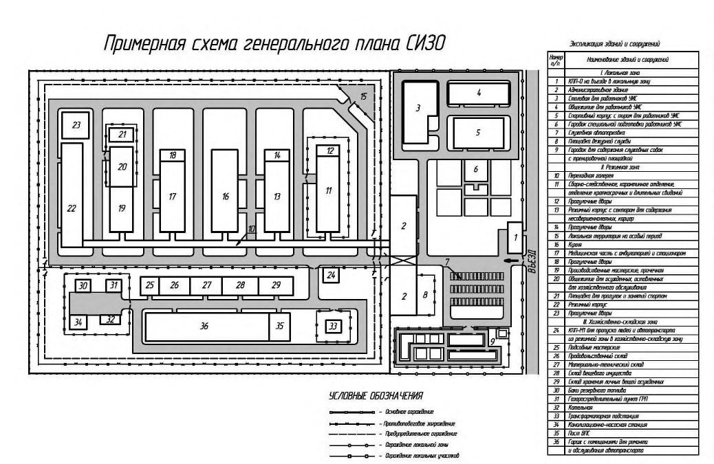

СП 247.1325800.2016 «Следственные изоляторы уголовно-исполнительной системы. Пра»
О документе: разработчики, утверждение, регистрация, ключевые слова
СВОД ПРАВИЛ
СП 247.1325800.2016
Издание официальное
- 1 ИСПОЛНИТЕЛЬ - Управление капитального строительства, недвижимости, эксплуатации и ремонта ФСИН России, Федеральное казенное учреждение «Центральная нормативно - техническая лаборатория» ФСИН России, Тверской филиал
- 2 ВНЕСЕН Техническим комитетом по стандартизации ТК 465 «Строительство»
- 3 ПОДГОТОВЛЕН к утверждению Департаментом градостроительной деятельности и архитектуры Министерства строительства и жилищно-коммунального хозяйства Российской Федерации (Минстрой России)
- 4 УТВЕРЖДЕН приказом Министерства строительства и жилищно-коммунального хозяйства Российской Федерации от 15 апреля 2016 г. № 245/пр и введен в действие с 4 июля 2016 г.
- 5 ЗАРЕГИСТРИРОВАН Федеральным агентством по техническому регулированию и метрологии (Росстандарт)
6 ВВЕДЕН ВПЕРВЫЕ
В случае пересмотра (замены) или отмены настоящего свода правил соответствующее уведомление будет опубликовано в установленном порядке. Соответствующая информация, уведомление и тексты размещаются также в информационной системе общего пользования - на официальном сайте разработчика (Минстрой России) в сети Интернет
© Минстрой России, 2016
Настоящий нормативный документ не может быть полностью или частично воспроизведен, тиражирован и распространен в качестве официального издания на территории Российской Федерации без разрешения Минстроя России
Электроснабжение, электрооборудование, электроосвещение технических средств охраны ..
- 21 Системы радиофикации, часофикации, кабельного телевидения, городской телефонной связи, локально-вычислительных сетей. ........................................................................................
- 22 Требования пожарной безопасности ..........................................................................................
- 23 Охрана окружающей среды ........................................................................................................
- 24 Транзитно-пересыльный пункт ..................................................................................................
- ПРИЛОЖЕНИЕ А (справочное) Перечень оборудования отдельных объектов и помещений следственных изоляторов .................................................................................................................
ПРИЛОЖЕНИЕ Б (справочное) Примерная схема генерального плана следственных изоляторов..........................................................................................................................................
Библиография ....................................................................................................................................
Дата введения 04 июля 2016 г.
УДК: ОКС 91.040 ОКП
Ключевые слова: следственный изолятор, подозреваемые, обвиняемые, осужденные, камеры, локальная, режимная зоны, режим и безопасность, функциональные группы помещений, показатели вместимости и площади помещений зданий, конструктивные решения
Введение
Настоящий свод правил разработан с учетом требований Федерального закона от 23 декабря 2004 г. № 190-ФЗ «Градостроительный кодекс Российской Федерации», Федерального закона от 30 декабря 2009 г. № 384-ФЗ «Технический регламент о безопасности зданий и сооружений», Федерального закона от 22 июля 2008 г. № 123-ФЗ «Технический регламент о требованиях пожарной безопасности», Концепции развития уголовно-исполнительной системы Российской Федерации до 2020 года, утвержденной распоряжением Правительства РФ от 14 октября 2010 № 1772-р.
Настоящий свод правил разработан на основании Постановления Правительства Российской Федерации от 19 ноября 2008 г. №858 «О порядке разработки и утверждения сводов правил»
В разработке свода правил принимали участие: А.А. Чугунов , В.В. Глатаев , М.В. Смирнов , О.И. Шландаков , В.В. Севумян , А.Ю. Козлов .
1Область применения
2. Нормативные ссылки
- В настоящем своде правил использованы нормативные ссылки на следующие документы:
ГОСТ 530-2012 Кирпич и камень керамические. Общие технические условия
- ГОСТ Р 50571.28-2006 Электроустановки зданий. Часть 7-710. Требования к специальным электроустановкам. Электроустановки медицинских помещений
- ГОСТ Р 51136-2008 Стёкла защитные многослойные. Общие технические условия
- СП 5.13130.2009 «Системы противопожарной защиты. Установки пожарной сигнализации и пожаротушения автоматические. Нормы и правила проектирования» (с изменением № 1)
- СП 7.13130.2013 Отопление, вентиляция и кондиционирование. Противопожарные требования
СП 29.13330.2011 «СНиП 2.03.13-88 Полы»
Investigatory insulators of criminally-executive system. Design rules.
- СП 30.13330.2012 «СНиП 2.04.01-85* Внутренний водопровод и канализация зданий»
- СП 31.13330.2012 «СНиП 2.04.02-84 Водоснабжение. Наружные сети и сооружения» (с изменениями № 1, 2)
- СП 32.13330.2012 «СНиП 2.04.03-85 Канализация. Наружные сети и сооружения» (с изменением № 1)
- СП 44.13330.2011 «СНиП 2.09.04-87* Административные и бытовые здания»
СП 50.13330.2012 «СНиП 23-02-2003 Тепловая защита зданий»
СП 51.13330.2011 «СНиП 23-03-2003 Защита от шума»
- СП 52.13330.2011 «СНиП 23-05-95* Естественное и искусственное освещение»
- СП 54.13330.2011 «СНиП 31-01-2003 Здания жилые многоквартирные»
- СП 56.13330.2011 «СНиП 31-03-2001 Производственные здания»
- СП 59.13330.2012 «СНиП 35-01-2001 Доступность зданий и сооружений для маломобильных групп населения» (с изменением № 1)
- СП 60.13330.2012 «СНиП 41-01-2003 Отопление, вентиляция и кондиционирование воздуха»
- СП 72.13330.2011 «СНиП 3.04.03-85 Защита строительных конструкций и сооружений от коррозии»
- СП 118.13330.2012 «СНиП 31-06-2009 Общественные здания и сооружения» (с изменением № 1)
- СП 140.13330.2012 «Городская среда. Правила проектирования для маломобильных групп населения» (с изменением № 1)
- СП 158.13330.2014 Здания и помещения медицинских организаций. Правила проектирования
- СанПиН 2.1.2.2646-10 Санитарно-эпидемиологические требования к устройству, оборудованию, содержанию и режиму работы прачечных
- СанПиН 2.1.3.2630-10 Санитарно-эпидемиологические требования к организациям, осуществляющим медицинскую деятельность
- СанПиН 2.1.7.2790-10 Санитарно-эпидемиологические требования к обращению с медицинскими отходами
- СанПиН 2.2.1/2.1.1.1278-03 Гигиенические требования к естественному, искусственному и совмещённому освещению жилых и общественных зданий
СанПиН 2.3.6.1079-01 Санитарно-эпидемиологические требования к организациям общественного питания, изготовлению и оборотоспособности в них пищевых продуктов и продовольственного сырья
СанПиН 2.6.1.2369-08 Гигиенические требования по обеспечению радиационной безопасности при обращении с лучевыми досмотровыми установками
Примечание При пользовании настоящим сводом правил целесообразно проверить действие ссылочных стандартов (сводов правил и/или классификаторов) в информационной системе общего пользования на официальном сайте национального органа Российской Федерации по стандартизации в сети Интернет или по ежегодно издаваемому информационному указателю «Национальные стандарты», который опубликован по состоянию на 1 января текущего года, и по выпускам ежемесячно издаваемого информационного указателя «Национальные стандарты» за текущий год. Если заменен ссылочный стандарт (документ), на который дана недатированная ссылка, то рекомендуется использовать действующую версию этого стандарта (документа) с учетом всех внесенных в данную версию изменений. Если заменен ссылочный стандарт (документ), на который дана датированная ссылка, то рекомендуется использовать версию этого стандарта (документа) с указанным выше годом утверждения (принятия). Если после утверждения настоящего стандарта в ссылочный стандарт (документ), на который дана датированная ссылка, внесено изменение, затрагивающее положение, на которое дана ссылка, то это положение рекомендуется применять без учета данного изменения. Если ссылочный стандарт (документ) отменен без замены, то положение, в котором дана ссылка на него, рекомендуется применять в части, не затрагивающей эту ссылку. Сведения о действии сводов правил можно проверить в Федеральном информационном фонде технических регламентов и стандартов.
3Термины, определения, обозначения и сокращения
В настоящем своде правил применены следующие термины с соответствующими определениями:
- 3.1камера временного содержания
- Камерное помещение, предназначенное для временного размещения подозреваемых, обвиняемых и осужденных на период проведения режимных и иных мероприятий (обыск, ремонтные работы и т.п.).
- 3.2камерное помещение
- Камера, сборная камера, карантинная камера, камера временного пребывания, палата медицинской части, карцер.
- 3.3кинодром
- Специально оборудованная территория, предназначенная для обучения специалистов-кинологов основам дрессировки и тренировки служебных собак для их практического применения в служебной деятельности.
- 3.4ограждение сплошного заполнения
- Глухое ограждение территории, конструкция которого принимается в зависимости от его назначения в соответствии с действующей нормативной документацией по оборудованию инженерно-техническими средствами охраны и надзора объектов уголовно-исполнительной системы.
- 3.5осужденный
- Лицо, в отношении которого приговор суда вступил в законную силу и которое подлежит направлению в исправительное учреждение для отбывания наказания; лицо, перемещаемое из одного места отбывания наказания в другое, оставленное в следственном изоляторе или переведенное в следственный изолятор для участия в следственных действиях или судебном разбирательстве.
- 3.6осужденный отрицательной направленности
- Лицо из числа осужденных, склонное к совершению побега; лидер и активный участник группировок отрицательной направленности, а также лицо, оказывающее негативное влияние на других подозреваемых, обвиняемых и осужденных; организующее и провоцирующее групповое противодействие законным требованиям администрации; склонное к употреблению и приобретению наркотических веществ, психотропных средств, сильнодействующих медицинских препаратов и алкогольных напитков; признанное судом нуждающимеся в лечении от наркомании и алкоголизма; склонное к совершению суицида и членовредительству; организующее или активно участвующее в азартных играх с целью извлечения материальной или иной выгоды; склонное к систематическому нарушению правил внутреннего распорядка; изучающее, пропагандирующее, исповедующее либо распространяющее экстремистскую идеологию; отбывающее наказание за дезорганизацию нормальной деятельности исправительных учреждений, массовые беспорядки; склонное к нападению на представителей администрации и иных сотрудников правоохранительных органов; склонное к посягательствам на половую свободу и половую неприкосновенность.
- 3.7помещение дневного содержания
- Одно или несколько помещений, не относящихся к камерному типу, предназначенных для содержания под надзором подозреваемых и обвиняемых (исключая подозреваемых и обвиняемых отрицательной направленности) в дневное время и организации их пребывания, питания, трудовой деятельности, отдыха, занятий спортом, получения информации, в том числе просмотра телевизионных передач, чтения, общения со специалистами различных направлений непосредственно и (или) посредством видеосвязи.
- 3.8ситуационный центр
- Помещение, оснащенное интегрированными системами безопасности, принимающими, обрабатывающими и отображающими визуальную и звуковую информацию, необходимую для оценки оперативной обстановки в учреждении и принятия решения о тех или иных действиях в текущей ситуации.
- 3.9хозобслуга
- Осужденные, оставленные для выполнения работ по хозяйственному обслуживанию. 3.10 В своде правил приняты следующие сокращения: АКЛ - армированная колючая лента; АУП - административно-управленческий персонал; ВПС - ведомственная пожарная служба; ГВС - горячее водоснабжение; Дезкамера - дезинфекционная камера; ДПНСИ - дежурный помощник начальника следственного изолятора; ИБП - источник бесперебойного питания; ИК- инфракрасная камера; ИСБ - интегрированная система безопасности; ИТСОНК - инженерно-технические средства охраны, надзора и контроля; КПП - контрольно-пропускной пункт; КПП - 0 - контрольно-пропускной пункт для пропуска людей и транспортных средств в локальную зону; КПП-Л - контрольно-пропускной пункт для пропуска людей из локальной зоны в административное здание СИЗО и в режимную зону; КПП-Т - контрольно-пропускной пункт для досмотра транспортных средств и грузов; КПП-М1 - контрольно-пропускной пункт для пропуска людей и транспортных средств из режимной зоны в хозяйственно-складскую зону (внутренний КПП малого типа); КПП-М2 - контрольно-пропускной пункт для пропуска людей и транспортных средств в хозяйственно-складскую зону (КПП малого типа); КНС - канализационно-насосная станция; КТП - комплексная трансформаторная подстанция; КХО - комната хранения оружия, боеприпасов и спецсредств; КХСИБиСАО - комната хранения средств индивидуальной бронезащиты и средств активной обороны; ПВХ - поливинилхлорид; ПДК - предельно-допустимая концентрация; Санпропускник - санитарный пропускник; Спецсредства - специальные средства; СКУД - система контроля и управления доступом; СОТ - система охранного телевидения; ТКО - твердые коммунальные отходы; ТПП - транзитно-пересыльный пункт; ТСО - технические средства охраны; ТЭЦ - теплоэлектроцентраль; ЦПТКВ - центральный пост технического контроля и видеонаблюдения; УИС - уголовно-исполнительная система.
4Общие положения
СП 247.1325800.2016 определяется заданием на проектирование.
5Показатели штатной численности, состав и показатели вместимости следственных изоляторов
6Структура следственных изоляторов, общие решения зданий
В локальной зоне (изолированной территории) следует размещать здания административного назначения, состав которых определен в 7.1.
В режимной зоне размещаются здания режимного и вспомогательного назначения, состав которых определен в 7.2.
Расположение и состав хозяйственно-складской зоны следует определять в соответствии с разделами 15 - 18.
Режимная и локальная зоны
7Требования к земельным участкам и размещению зданий
Городок для содержания служебных собак с кинодромом следует размещать в локальной или в хозяйственно-складской зоне (по техническому заданию) на отдельном локальном участке с соблюдением норм и санитарных требований, применяемых к содержанию собак и ветеринарных объектов. Состав и требования к городку для содержания служебных собак с кинодромом принимается в соответствии с 8.38 - 8.43.
Необходимость возведения перечисленных зданий и сооружений СИЗО в зависимости от фактических условий предполагаемой площадки строительства и потребностей территориального органа ФСИН России конкретизируется заданием на проектирование.
Данные здания и сооружения допускается размещать как на территории локальной зоны, так и за её пределами, что устанавливается заданием на проектирование. Наличие в спортивном корпусе стрелкового тира устанавливается заданием на проектирование.
Здания режимной зоны следует проектировать высотой до четырёх этажей.
Проектирование режимных зданий большей этажности допускается исключительно по отдельному решению ФСИН России.
Отвод площадок под строительство муниципальных, частных зданий и строений, а также зданий и строений других органов государственной власти, органов местного самоуправления в 100-метровой полосе следует согласовывать с территориальными органами ФСИН России.
Таблица 1
| Площадь земельного участка, га, при лимите наполнения СИЗО, чел | Площадь земельного участка, га, при лимите наполнения СИЗО, чел | Площадь земельного участка, га, при лимите наполнения СИЗО, чел | Площадь земельного участка, га, при лимите наполнения СИЗО, чел | |
|---|---|---|---|---|
| Наименование зоны | до 250 включ. | св. 250 до 500 включ. | св. 500 до750 включ. | св. 750 до 1000 включ. |
| Режимная | 2,4 - 3,8 | 3,5 - 6,0 | 5,6 - 8,5 | 7,5-10,0 |
| Локальная | 1,3-1,8 | 1,6 - 2,4 | 2,2 - 2,8 | 2,5 - 2,8 |
Примечания
1 В площадь режимной зоны входит участок локальной территории, выгораживаемой на особый период из расчета 0,5 м² на одного человека с размещением 100% лиц содержащихся в СИЗО.
- 2 Площади локальной зоны даны без учёта размещения в ней общежития, столовой для работников СИЗО.
- 3 Возможно увеличение площади режимной зоны для резервирования места под расширение, перепрофилирование и т.п. При соответствующем обосновании
В ограждении локальной зоны предусматриваются также дополнительные калитки (ворота) для прохода (проезда) резервных групп караула.
С этой целью прямые участки автомобильных проездов протяженностью более 50 м оборудуются физическими препятствиями для изменения траектории движения транспортного средства (столбы, бетонные блоки, бетонные полусферы и т. п.), расположение которых принуждает к зигзагообразной траектории движения. Препятствия устанавливаются в шахматном порядке по краям автомобильного проезда на расстоянии не более 50 м друг от друга и от начала прямолинейного участка автомобильного проезда.
8Состав, площади и требования к оборудованию помещений зданий локальной зоны
Административное здание
1 - проходные помещения, находящиеся под постоянным наблюдением работников СИЗО
(часовых КПП, дежурной службы);
2 - помещения, имеющие связь с режимной зоной (оконные (дверные) проёмы выходят в режимную зону или во внутренний двор административного здания СИЗО);
3 - помещения, не имеющие связи с режимной зоной, оконные (дверные) проёмы выходят только в локальную зону или на неохраняемую территорию).
Планировочными решениями должна быть исключена возможность прохода из помещений 2-го типа непосредственно в помещения 3-го типа. Проход людей из помещений 2-го типа в помещения 3-го типа должен осуществляться только через помещения 1-го типа.
К помещениям 1-го типа следует относить: проходной коридор; шлюз для пропуска транспортных средств и грузов. К помещениям 1-го типа допускается относить коридоры этажей и лестницы, при этом указанные помещения должны быть под постоянным видеонаблюдением операторов ЦПТКВ, входы и выходы помещений оборудуются СКУД.
К помещениям 2-го типа следует относить: кабинеты начальника СИЗО и его заместителей; канцелярию; кабинеты и комнаты сотрудников оперативного отдела; отдела режима; отдела охраны; отдела воспитательной работы; отдела коммунально-бытового, интендантского и хозяйственного обеспечения, вспомогательные помещения.
К помещениям 2-го типа допускается относить помещения дежурной службы.
К помещениям 3-го типа - остальные помещения административного здания СИЗО.
В зависимости от принятых планировочных решений помещения отделов воспитательной работы с осуждёнными и коммунально-бытового, интендантского и хозяйственного обеспечения, вспомогательные помещения допускается относить к помещениям 3-го типа.
Доступ в административное здание СИЗО должен осуществляться исключительно через проходной коридор КПП-Л. На случай экстренной эвакуации людей следует предусматривать эвакуационные выходы из административного здания СИЗО непосредственно в его локальную зону, при этом разблокировку дверей эвакуационных выходов и ворот шлюза должен осуществлять только ДПНСИ.
Из коридора первого этажа административного здания СИЗО допускается устраивать дверные проёмы в:
- коридор блока помещений дежурной службы;
- коридор помещений КПП-Т;
- помещения приёма, досмотра и хранения посылок и передач и другие служебные помещения административного здания СИЗО, эксплуатация (посещение) которых осуществляется только работниками УИС.
Блок помещений для посетителей и помещения аптеки следует обеспечивать отдельными входами из локальной зоны и изолировать от остальных помещений административного здания капитальной стеной, выполненной в соответствии 14.5.
Мероприятия, предусматриваемые для обеспечения доступа маломобильных групп населения из числа лиц, прибывших на свидание, должны разрабатываться с учётом требований СП 59.13330 и СП 140.13330.
Таблица 2
| Площадь не менее, м² , или число приборов, шт, при лимите наполнения | СИЗО, чел | СИЗО, чел | СИЗО, чел | СИЗО, чел | |
|---|---|---|---|---|---|
| административного здания СИЗО | до 250 включ. | св. 250 до 500 включ. | св. 500 до 750 включ. | св. 750 до 1000 включ. | |
| Руководство | Руководство | Руководство | Руководство | Руководство | Руководство |
| 1 | Кабинет начальника с комнатой отдыха | 18,0+8,0 | 18,0+10,0 | 24,0+10,0 | 26,0+10,0 |
| 2 | Приёмная | 12,0 | 12,0 | 15,0 | 18,0 |
| 3 | Кабинет заместителя начальника по оперативной работе | 15,0 | 15,0 | 18,0 | 18,0 |
| 4 | Кабинет заместителя начальника по охране | 15,0 | 15,0 | 18,0 | 18,0 |
| 5 | Кабинет заместителя начальника по режиму | 15,0 | 15,0 | 18,0 | 18,0 |
| 6 | Кабинет заместителя начальника по кадрам и воспитательной работе | 15,0 | 15,0 | 18,0 | 18,0 |
| 7 | Кабинет заместителя начальника по тылу | 15,0 | 15,0 | 18,0 | 18,0 |
| 8 | Кабинет заместителя начальника по лечебно-профилактической работе | - | - | 18,0 | 18,0 |
| Канцелярия | Канцелярия | Канцелярия | Канцелярия | Канцелярия | Канцелярия |
| 9 | Комната начальника канцелярии, старшего инспектора, инспекторов, делопроизводителя, машинистки | Из расчёта 7,5 на начальника канцелярии, старшего инспектора; 6,5 на одного инспектора; 5 на делопроизводителя и машинистку | Из расчёта 7,5 на начальника канцелярии, старшего инспектора; 6,5 на одного инспектора; 5 на делопроизводителя и машинистку | Из расчёта 7,5 на начальника канцелярии, старшего инспектора; 6,5 на одного инспектора; 5 на делопроизводителя и машинистку | Из расчёта 7,5 на начальника канцелярии, старшего инспектора; 6,5 на одного инспектора; 5 на делопроизводителя и машинистку |
| 10 | Помещение для хранения документов | 6,0 | 6,0 | 6,0 | 6,0 |
| Блок помещений дежурной службы |
Продолжение таблицы 2
| Наименование помещений | Площадь не менее, м² , или число приборов, шт, при лимите наполнения СИЗО, чел | Площадь не менее, м² , или число приборов, шт, при лимите наполнения СИЗО, чел | Площадь не менее, м² , или число приборов, шт, при лимите наполнения СИЗО, чел | Площадь не менее, м² , или число приборов, шт, при лимите наполнения СИЗО, чел | |
|---|---|---|---|---|---|
| административного здания СИЗО | до 250 включ. | св. 250 до 500 включ. | св. 500 до 750 включ. | св. 750 до 1000 включ. | |
| 11 | Комната ДПНСИ с рабочим местом заместителя (заместителей) ДПНСИ | 21,0 | 21,0 | 24,0 | 24,0 |
| 12 | ЦПТКВ | 6,0 на одного оператора, но не менее 40,0 | 6,0 на одного оператора, но не менее 40,0 | 6,0 на одного оператора, но не менее 40,0 | 6,0 на одного оператора, но не менее 40,0 |
| 13 | Ситуационный центр | 20,0 | 20,0 | 24,0 | 24,0 |
| 14 | Серверная | Определяется по расчёту, но не менее 30,0 | Определяется по расчёту, но не менее 30,0 | Определяется по расчёту, но не менее 30,0 | Определяется по расчёту, но не менее 30,0 |
| 15 | КХСИБиСАО | 10,0 | 12,0 | 15,0 | 18,0 |
| 16 | КХО | 16,0 | 20,0 | 24,0 | 28,0 |
| 17 | Комната чистки оружия | 9,0 | 9,0 | 12,0 | 12,0 |
| 18 | Комната начальника склада вооружения, спецсредств и химического имущества | 10,0 | 10,0 | 10,0 | 10,0 |
| 19 | Комната 1) хранения средств противохимической защиты | 12,0 | 15,0 | 18,0 | 18,0 |
| 20 | Мастерская по ремонту вооружения, спецсредств и химического имущества 2) | 12,0 | 12,0 | 15,0 | 15,0 |
| 21 | Помещение караула | 3,0 на одного человека, но не менее 12,0 | 3,0 на одного человека, но не менее 12,0 | 3,0 на одного человека, но не менее 12,0 | 3,0 на одного человека, но не менее 12,0 |
| 22 | Комната для подогрева и приёма пищи дежурной службы | 1,0 на одного человека, но не менее 6,0 | 1,0 на одного человека, но не менее 6,0 | 1,0 на одного человека, но не менее 6,0 | 1,0 на одного человека, но не менее 6,0 |
| 23 | Комната отдыха дежурной службы для мужчин | 1,5 на одного человека, но не менее 8,0 | 1,5 на одного человека, но не менее 8,0 | 1,5 на одного человека, но не менее 8,0 | 1,5 на одного человека, но не менее 8,0 |
| 24 | Комната отдыха дежурной службы для женщин | 1,5 на одного человека, но не менее 8,0 | 1,5 на одного человека, но не менее 8,0 | 1,5 на одного человека, но не менее 8,0 | 1,5 на одного человека, но не менее 8,0 |
| 25 | Класс служебно-боевой подготовки работников дежурной службы и развода смен | 3,0 м² на сотрудника, из расчета 100%-ной численности дежурной смены | 3,0 м² на сотрудника, из расчета 100%-ной численности дежурной смены | 3,0 м² на сотрудника, из расчета 100%-ной численности дежурной смены | 3,0 м² на сотрудника, из расчета 100%-ной численности дежурной смены |
| 26 | Аккумуляторная (при применении кислотных аккумуляторов) с тамбуром 3) | Определяется проектом, но не менее 12 | Определяется проектом, но не менее 12 | Определяется проектом, но не менее 12 | Определяется проектом, но не менее 12 |
| 27 | Сушилка | 4,0 | 4,0 | 4,0 | 4,0 |
| 28 | Помещение для хранения имущества | 4,0 | 4,0 | 6,0 | 6,0 |
| 29 | Уборная 4) с умывальником в тамбуре | ||||
| - мужская | Не менее 4,0 | Не менее 4,0 | Не менее 4,0 | Не менее 4,0 | |
| - женская | Не менее 2,0 | Не менее 2,0 | Не менее 2,0 | Не менее 2,0 | |
| 30 | Гардеробная с душевой (мужская и женская) | 0,6 на одного человека, одна душевая сетка на 15 чел | 0,6 на одного человека, одна душевая сетка на 15 чел | 0,6 на одного человека, одна душевая сетка на 15 чел | 0,6 на одного человека, одна душевая сетка на 15 чел |
Продолжение таблицы 2
| Наименование помещений административного здания СИЗО | Площадь не менее, м² , или число приборов, шт, при лимите наполнения | Площадь не менее, м² , или число приборов, шт, при лимите наполнения | Площадь не менее, м² , или число приборов, шт, при лимите наполнения | Площадь не менее, м² , или число приборов, шт, при лимите наполнения | |
|---|---|---|---|---|---|
| Наименование помещений административного здания СИЗО | до 250 включ. | св. 250 до 500 включ. | св. 500 до 750 включ. | св. 750 до 1000 включ. | |
| 31 | Помещение для хранения уборочного инвентаря | 0,8 на 100 м² общей площади, но не менее 4,0 | 0,8 на 100 м² общей площади, но не менее 4,0 | 0,8 на 100 м² общей площади, но не менее 4,0 | 0,8 на 100 м² общей площади, но не менее 4,0 |
| Блок помещений КПП | |||||
| 32 | Комната часового по КПП-Л | 15,0 | 15,0 | 15,0 | 15,0 |
| 33 | Помещение для хранения личных вещей сотрудников УИС и посетителей СИЗО | 9,0 | 9,0 | 9,0 | 9,0 |
| 34 | Комната обыска с унитазом и умывальником (в кабине) | 10,0 | 10,0 | 10,0 | 10,0 |
| 35 | Проходной коридор КПП-Л | Ширина не менее 2 м | Ширина не менее 2 м | Ширина не менее 2 м | Ширина не менее 2 м |
| 36 | Шлюз КПП-Т | Ширина 5,6 м, высота до низа выступающих конструкций 4,5 м | Ширина 5,6 м, высота до низа выступающих конструкций 4,5 м | Ширина 5,6 м, высота до низа выступающих конструкций 4,5 м | Ширина 5,6 м, высота до низа выступающих конструкций 4,5 м |
| 37 | Комната группы досмотра транспортных средств и грузов КПП-Т | 12,0 | 12,0 | 18,0 | 18,0 |
| 38 | Уборная с умывальником в тамбуре группы для досмотра транспортных средств и грузов, караула по конвоированию КПП-Т 5) | Не менее 4,0 | Не менее 4,0 | Не менее 4,0 | Не менее 4,0 |
| 39 | Помещение для караула по конвоированию КПП-Т | 3,0 на одного человека, но не менее 9,0 | 3,0 на одного человека, но не менее 9,0 | 3,0 на одного человека, но не менее 9,0 | 3,0 на одного человека, но не менее 9,0 |
| Площадка дежурной | службы | ||||
| 40 | Площадка дежурной службы | Определяется планировочными решениями | Определяется планировочными решениями | Определяется планировочными решениями | Определяется планировочными решениями |
| 41 | Место для заряжания (разряжения) оружия | То же | То же | То же | То же |
| 42 | Вольеры для служебных собак | Определяется по числу служебных собак | Определяется по числу служебных собак | Определяется по числу служебных собак | Определяется по числу служебных собак |
| 43 44 Место для | Бокс для транспортных средств резервных групп (для учреждения с протяжённостью периметра охраны свыше 1000 метров) курения и чистки обуви | Определяется 6,0 | 6,0 | планировочными 6,0 | решениями 6,0 |
| Помещения для посетителей (по возможности, размещается в КПП-О на въезде в локальную зону) | Помещения для посетителей (по возможности, размещается в КПП-О на въезде в локальную зону) | Помещения для посетителей (по возможности, размещается в КПП-О на въезде в локальную зону) | Помещения для посетителей (по возможности, размещается в КПП-О на въезде в локальную зону) | Помещения для посетителей (по возможности, размещается в КПП-О на въезде в локальную зону) | Помещения для посетителей (по возможности, размещается в КПП-О на въезде в локальную зону) |
| 45 | Бюро пропусков | 8,0 | 8,0 | 8,0 | 8,0 |
| 46 | Комната (зал) для посетителей | 20,0 | 40,0 | 60,0 | 60,0 |
| 47 | Уборная с умывальником в тамбуре: 6) - общая | Не менее 2,0 | Не менее 2,0 |
- мужская
Продолжение таблицы 2
| Наименование помещений административного здания СИЗО | Площадь не менее, м² , или число приборов, шт, при лимите наполнения | Площадь не менее, м² , или число приборов, шт, при лимите наполнения | Площадь не менее, м² , или число приборов, шт, при лимите наполнения | Площадь не менее, м² , или число приборов, шт, при лимите наполнения | |
|---|---|---|---|---|---|
| Наименование помещений административного здания СИЗО | до 250 включ. | св. 250 до 500 включ. | св. 500 до 750 включ. | св. 750 до 1000 включ. | |
| - женская | - Не менее 2,0 | - Не менее 2,0 | - Не менее 2,0 | - Не менее 2,0 | |
| 48 | Помещение приёма, досмотра и хранения посылок | 10,0 | 12,0 | 12,0 | 15,0 |
| 49 | Помещение приёма, досмотра и хранения передач (число приёмных окон (по 10 м² на одно окно) | 2 | 2 | 3 | 4 |
| 50 | Комната приёма граждан администрацией СИЗО | 12,0 | 12,0 | 12,0 | 12,0 |
| 51 | Комната для хранения и мытья инвентаря, используемого для проверки передач | 4,0 | 4,0 | 4,0 | 4,0 |
| Аптека 7) | |||||
| 52 | Моечная | 8,0 | 10,0 | 10,0 | 15,0 |
| 53 | Дистилляционная | 8,0 | 10,0 | 10,0 | 12,0 |
| 54 | Расфасовочная | 12,0 | 12,0 | 15,0 | 15,0 |
| 55 | Автоклавная | 8,0 | 10,0 | 10,0 | 12,0 |
| 56 | Материальная | 8,0 | 10,0 | 15,0 | 15,0 |
| 57 | Ассистентская | 24,0 | 24,0 | 24,0 | 24,0 |
| 58 | Распаковочная | 10,0 | 12,0 | 12,0 | 15,0 |
| 59 | Помещение для оформления документов и выдачи лекарственных средств | 10,0 | 10,0 | 10,0 | 10,0 |
| 60 | Уборная 8) с умывальником в тамбуре Помещение для хранения уборочного | Не менее 2,0 | Не менее 2,0 | Не менее 2,0 | Не менее 2,0 |
| 61 | инвентаря | 0,8 на 100 м² общей площади, но не менее 4,0 | 0,8 на 100 м² общей площади, но не менее 4,0 | 0,8 на 100 м² общей площади, но не менее 4,0 | 0,8 на 100 м² общей площади, но не менее 4,0 |
| Организационно-аналитический отдел (группа) | Организационно-аналитический отдел (группа) | Организационно-аналитический отдел (группа) | Организационно-аналитический отдел (группа) | Организационно-аналитический отдел (группа) | Организационно-аналитический отдел (группа) |
| 62 | Кабинет начальника отдела (группы) | - | - | 12,0 | 12,0 |
| 63 | Комната старшего инспектора (инспектора, старшего инженера, инженера) | 6,0 на одного человека, но не менее 12,0 | 6,0 на одного человека, но не менее 12,0 | 6,0 на одного человека, но не менее 12,0 | 6,0 на одного человека, но не менее 12,0 |
| Группа организации мобилизационной подготовки и гражданской обороны | Группа организации мобилизационной подготовки и гражданской обороны | Группа организации мобилизационной подготовки и гражданской обороны | Группа организации мобилизационной подготовки и гражданской обороны | Группа организации мобилизационной подготовки и гражданской обороны | Группа организации мобилизационной подготовки и гражданской обороны |
| 64 | Комната старшего инспектора (инспектора) | 10,0 | 10,0 | 10,0 | 10,0 |
| Юридическая группа | Юридическая группа | Юридическая группа | Юридическая группа | Юридическая группа | Юридическая группа |
| 65 | Кабинет старшего юрисконсульта (юрисконсульта) | 12,0 | 12,0 | 12,0 | 12,0 |
Продолжение таблицы 2
| Наименование помещений Площадь не менее, м² , лимите СИЗО, | или число приборов, шт, при наполнения чел | или число приборов, шт, при наполнения чел | или число приборов, шт, при наполнения чел | или число приборов, шт, при наполнения чел | |
|---|---|---|---|---|---|
| административного здания СИЗО | до 250 включ. | св. 250 до 500 включ. | св. 500 до 750 включ. | св. 750 до 1000 включ. | |
| Оперативный отдел (группа) | Оперативный отдел (группа) | Оперативный отдел (группа) | Оперативный отдел (группа) | Оперативный отдел (группа) | Оперативный отдел (группа) |
| 66 | Кабинет начальника отдела (группы) | - | 12,0 | 12,0 | 12,0 |
| 67 | Кабинет заместителя начальника отдела | - | - | 12,0 | 12,0 |
| 68 | Комната старших оперуполномоченных | 6,5 | одного человека, | но не | менее 12,0 |
| 69 | Комната оперуполномоченных | 6,0 на одного человека, но не менее 10,0 | 6,0 на одного человека, но не менее 10,0 | 6,0 на одного человека, но не менее 10,0 | 6,0 на одного человека, но не менее 10,0 |
| 70 | Комната младших оперуполномоченных | - | - | 6,0 на одного человека, но не менее 10,0 | 6,0 на одного человека, но не менее 10,0 |
| 71 | Комната инспекторов по проверке и доставке писем | 6,0 на одного человека, но не менее 10,0 | 6,0 на одного человека, но не менее 10,0 | 6,0 на одного человека, но не менее 10,0 | 6,0 на одного человека, но не менее 10,0 |
| 72 | Комната машинистки | - | - | 10,0 | 10,0 |
| Отдел (группа) специального учёта 9) | Отдел (группа) специального учёта 9) | Отдел (группа) специального учёта 9) | Отдел (группа) специального учёта 9) | Отдел (группа) специального учёта 9) | Отдел (группа) специального учёта 9) |
| 73 | Кабинет начальника отдела | 12,0 | 12,0 | 12,0 | 12,0 |
| 74 | Кабинет заместителя начальника отдела | 10,0 | 10,0 | 10,0 | 10,0 |
| 75 | Комната старших инспекторов, инспекторов и сотрудников специального учёта | 6,0 | одного человека, | но не | менее 12,0 |
| 76 | Комната картотеки (смежная с помещением 74) | 12,0 | 15,0 | 20,0 | 24,0 |
| 77 | Комната работы с личными делами сотрудников СИЗО | 8,0 | 9,0 | 12,0 | 15,0 |
| 78 | Комната делопроизводителей | 6,0 на одного человека, но не менее 10,0 | 6,0 на одного человека, но не менее 10,0 | 6,0 на одного человека, но не менее 10,0 | 6,0 на одного человека, но не менее 10,0 |
| Отдел режима (безопасности) | Отдел режима (безопасности) | Отдел режима (безопасности) | Отдел режима (безопасности) | Отдел режима (безопасности) | Отдел режима (безопасности) |
| 79 | Кабинет начальника отдела | 12,0 | 12,0 | 12,0 | 12,0 |
| 80 | Кабинет заместителя начальника отдела | 10,0 | 10,0 | 10,0 | 10,0 |
| 81 | Комната старших инспекторов | 6,5 на одного человека, но не менее 12,0 | 6,5 на одного человека, но не менее 12,0 | 6,5 на одного человека, но не менее 12,0 | 6,5 на одного человека, но не менее 12,0 |
| 82 | Комната инспекторов | - | 6,0 на одного человека, но не менее 10,0 | 6,0 на одного человека, но не менее 10,0 | 6,0 на одного человека, но не менее 10,0 |
| 83 | Класс служебно - боевой подготовки инспекторов | 2,5 м² на сотрудника, из расчета 100%-ной численности дежурной смены, без учёта площади, необходимой для расстановки дополнительной | 2,5 м² на сотрудника, из расчета 100%-ной численности дежурной смены, без учёта площади, необходимой для расстановки дополнительной | 2,5 м² на сотрудника, из расчета 100%-ной численности дежурной смены, без учёта площади, необходимой для расстановки дополнительной | 2,5 м² на сотрудника, из расчета 100%-ной численности дежурной смены, без учёта площади, необходимой для расстановки дополнительной |
| Отдел охраны | Отдел охраны |
Продолжение таблицы 2
| Наименование помещений административного здания СИЗО | Площадь не менее, м² , или число приборов, шт, при лимите наполнения | Площадь не менее, м² , или число приборов, шт, при лимите наполнения | Площадь не менее, м² , или число приборов, шт, при лимите наполнения | Площадь не менее, м² , или число приборов, шт, при лимите наполнения | |
|---|---|---|---|---|---|
| Наименование помещений административного здания СИЗО | до 250 включ. | св. 250 до 500 включ. | св. 500 до 750 включ. | св. 750 до 1000 включ. | |
| 85 | Кабинет заместителя (заместителей) начальника отдела | 6,5 на одного человека, но не менее 12,0 | 6,5 на одного человека, но не менее 12,0 | 6,5 на одного человека, но не менее 12,0 | 6,5 на одного человека, но не менее 12,0 |
| 86 | Кабинет старшего психолога отдела | 12,0 | 12,0 | 12,0 | 12,0 |
| 87 | Комната старших инспекторов | 6,0 на одного человека, но не менее 10,0 | 6,0 на одного человека, но не менее 10,0 | 6,0 на одного человека, но не менее 10,0 | 6,0 на одного человека, но не менее 10,0 |
| 88 | Комната инспекторов | 6,0 на одного человека, но не менее 10,0 | 6,0 на одного человека, но не менее 10,0 | 6,0 на одного человека, но не менее 10,0 | 6,0 на одного человека, но не менее 10,0 |
| 89 | Класс служебно-боевой подготовки инспекторов | 2,5 м² на сотрудника, из расчета 100%-ной численности дежурной смены | 2,5 м² на сотрудника, из расчета 100%-ной численности дежурной смены | 2,5 м² на сотрудника, из расчета 100%-ной численности дежурной смены | 2,5 м² на сотрудника, из расчета 100%-ной численности дежурной смены |
| Кинологическое отделение | Кинологическое отделение | Кинологическое отделение | Кинологическое отделение | Кинологическое отделение | Кинологическое отделение |
| 90 | Кабинет начальника отделения | 12,0 | 12,0 | 12,0 | 12,0 |
| 91 | Комната инструкторов | 6,0 на одного человека, но не менее 10,0 | 6,0 на одного человека, но не менее 10,0 | 6,0 на одного человека, но не менее 10,0 | 6,0 на одного человека, но не менее 10,0 |
| Группа инженерно-технического обеспечения, связи и вооружения | Группа инженерно-технического обеспечения, связи и вооружения | Группа инженерно-технического обеспечения, связи и вооружения | Группа инженерно-технического обеспечения, связи и вооружения | Группа инженерно-технического обеспечения, связи и вооружения | Группа инженерно-технического обеспечения, связи и вооружения |
| 92 | Комната старшего инженера, инженера | 12,0 | 12,0 | 12,0 | 12,0 |
| 93 | Комната старшего техника, техника | 12,0 | 12,0 | 15,0 | 15,0 |
| 94 | Мастерская по ремонту аппаратуры, ТСО и средств связи | 15,0 | 15,0 | 18,0 | 18,0 |
| Группа по боевой и специальной подготовке | Группа по боевой и специальной подготовке | Группа по боевой и специальной подготовке | Группа по боевой и специальной подготовке | Группа по боевой и специальной подготовке | Группа по боевой и специальной подготовке |
| 95 | Комната старшего инструктора, инструктора | 10,0 | 12,0 | 12,0 | 12,0 |
| Психологическая лаборатория | Психологическая лаборатория | Психологическая лаборатория | Психологическая лаборатория | Психологическая лаборатория | Психологическая лаборатория |
| 96 | Кабинет начальника | 12,0 | 12,0 | 12,0 | 12,0 |
| 97 | Кабинет старшего психолога | 12,0 | 12,0 | 12,0 | 12,0 |
| 98 | Комната психологов | 6,0 на одного человека, но не менее 12,0 | 6,0 на одного человека, но не менее 12,0 | 6,0 на одного человека, но не менее 12,0 | 6,0 на одного человека, но не менее 12,0 |
| Бухгалтерия | Бухгалтерия | Бухгалтерия | Бухгалтерия | Бухгалтерия | Бухгалтерия |
| 99 | Кабинет главного бухгалтера | 12,0 | 12,0 | 12,0 | 12,0 |
| 100 | Кабинет заместителя главного бухгалтера | - | - | 10,0 | 10,0 |
| 101 | Комната бухгалтеров | 15,0 | 30,0 | 2х24,0 | 2х30,0 |
| 102 | Комната экономиста по финансовой работе | - | - | 10,0 | 10,0 |
| 103 | Касса | 6,0 | 6,0 | 6,0 | 6,0 |
| Отдел (группа) интендантского и хозяйственного обеспечения | Отдел (группа) интендантского и хозяйственного обеспечения | Отдел (группа) интендантского и хозяйственного обеспечения | Отдел (группа) интендантского и хозяйственного обеспечения | Отдел (группа) интендантского и хозяйственного обеспечения | Отдел (группа) интендантского и хозяйственного обеспечения |
| 104 | Кабинет начальника отдела | 12,0 | 12,0 | 12,0 | 12,0 |
12,0
Продолжение таблицы 2
| Наименование помещений | Площадь не менее, м² , или число приборов, шт, при лимите наполнения | Площадь не менее, м² , или число приборов, шт, при лимите наполнения | Площадь не менее, м² , или число приборов, шт, при лимите наполнения | Площадь не менее, м² , или число приборов, шт, при лимите наполнения | |
|---|---|---|---|---|---|
| административного здания СИЗО | до 250 включ. | св. 250 до 500 включ. | св. 500 до 750 включ. | св. 750 до 1000 включ. | |
| 106 | Комната инспекторов, агентов по снабжению, экспедиторов | 6,0 на одного человека, но не менее 12,0 | 6,0 на одного человека, но не менее 12,0 | 6,0 на одного человека, но не менее 12,0 | 6,0 на одного человека, но не менее 12,0 |
| Отдел коммунально-бытового обеспечения | Отдел коммунально-бытового обеспечения | Отдел коммунально-бытового обеспечения | Отдел коммунально-бытового обеспечения | Отдел коммунально-бытового обеспечения | Отдел коммунально-бытового обеспечения |
| 107 | Кабинет начальника отдела | 12,0 | 12,0 | 12,0 | 12,0 |
| 108 | Комната главного энергетика | - | - | - | 10,0 |
| 109 | Комната старшего инженера- энергетика | 10,0 | 10,0 | 10,0 | - |
| 110 | Комната главного механика | - | - | - | 10,0 |
| 111 | Комната старшего инженера-механика | 10,0 | 10,0 | 10,0 | - |
| 112 | Комната старших инспекторов, инспекторов | 6,0 | одного человека, | но не менее | 12,0 |
| 113 | Комната инженера, инженера по охране труда, техника-теплотехника | 6,0 на одного человека, но не менее 12,0 | 6,0 на одного человека, но не менее 12,0 | 6,0 на одного человека, но не менее 12,0 | 6,0 на одного человека, но не менее 12,0 |
| 114 | Комната коменданта (смотрителя) зданий | 10,0 | 10,0 | 10,0 | 10,0 |
| Отдел (группа) по воспитательной работе | Отдел (группа) по воспитательной работе | Отдел (группа) по воспитательной работе | Отдел (группа) по воспитательной работе | Отдел (группа) по воспитательной работе | Отдел (группа) по воспитательной работе |
| 115 | Кабинет начальника отдела | 12,0 | 12,0 | 12,0 | 12,0 |
| 116 | Комната старших инспекторов | 6,0 на одного человека, но не менее 12,0 | 6,0 на одного человека, но не менее 12,0 | 6,0 на одного человека, но не менее 12,0 | 6,0 на одного человека, но не менее 12,0 |
| 117 | Комната инспекторов | 6,0 на одного человека, но не менее 12,0 | 6,0 на одного человека, но не менее 12,0 | 6,0 на одного человека, но не менее 12,0 | 6,0 на одного человека, но не менее 12,0 |
| 118 | Комната воспитателей 10) | 6,0 на одного человека, но не менее 10,0 | 6,0 на одного человека, но не менее 10,0 | 6,0 на одного человека, но не менее 10,0 | 6,0 на одного человека, но не менее 10,0 |
| Отдел (группа) кадров | Отдел (группа) кадров | Отдел (группа) кадров | Отдел (группа) кадров | Отдел (группа) кадров | Отдел (группа) кадров |
| 119 | Кабинет начальника отдела | 12,0 | 12,0 | 12,0 | 12,0 |
| 120 | Комната старшего инспектора | - | - | 12,0 | 12,0 |
| 121 | Комната инспекторов и специалистов по кадрам | 6,0 на одного человека, но не менее 12,0 | 6,0 на одного человека, но не менее 12,0 | 6,0 на одного человека, но не менее 12,0 | 6,0 на одного человека, но не менее 12,0 |
| Группа социальной защиты и учёта трудового стажа осуждённых 1) | Группа социальной защиты и учёта трудового стажа осуждённых 1) | Группа социальной защиты и учёта трудового стажа осуждённых 1) | Группа социальной защиты и учёта трудового стажа осуждённых 1) | Группа социальной защиты и учёта трудового стажа осуждённых 1) | Группа социальной защиты и учёта трудового стажа осуждённых 1) |
| 122 | Комната старшего инспектора (инспектора) | 10,0 | 10,0 | 10,0 | 10,0 |
| Помещения вспомогательного и обслуживающего назначения | Помещения вспомогательного и обслуживающего назначения | Помещения вспомогательного и обслуживающего назначения | Помещения вспомогательного и обслуживающего назначения | Помещения вспомогательного и обслуживающего назначения | Помещения вспомогательного и обслуживающего назначения |
| 123 | Зал совещаний (общая площадь) | 50,0 | 75,0 | 100,0 | 125,0 |
| 124 | Рабочая комната при зале совещаний | 18,0 | 18,0 | 18,0 | 18,0 |
| 125 | Комната психологической разгрузки | 15,0 | 24,0 | 30,0 | 30,0 |
| 126 | Кабинет прокурора | 12,0 | 12,0 | 12,0 | 12,0 |
| 127 | Библиотека для работников СИЗО | 10,0 | 15,0 | 20,0 | 25,0 |
Продолжение таблицы 2
| Площадь не менее, м² , или число приборов, шт, при лимите наполнения | Площадь не менее, м² , или число приборов, шт, при лимите наполнения | Площадь не менее, м² , или число приборов, шт, при лимите наполнения | Площадь не менее, м² , или число приборов, шт, при лимите наполнения | Площадь не менее, м² , или число приборов, шт, при лимите наполнения | |
|---|---|---|---|---|---|
| административного здания СИЗО до | 250 включ. | св. 250 до 500 включ. | св. 500 до 750 включ. | св. 750 до 1000 включ. | |
| 128 | Комната заведующего библиотекой для работников СИЗО | 8,0 | 8,0 | 8,0 | 8,0 |
| 129 | Мужская гардеробная инспекторов дежурной смены отдела режима с душевой | ||||
| 130 | Женская гардеробная младших инспекторов дежурной смены отдела режима с душевой | ||||
| 131 | Мужская гардеробная инспекторов дневной смены отдела режима с душевой | одна | 0,6 на одного человека, душевая | на 15 человек | 0,6 на одного человека, душевая |
| 132 | Женская гардеробная инспекторов дневной смены отдела режима с душевой | ||||
| 133 | Мужская гардеробная инспекторов отдела охраны с душевой | ||||
| 134 | Женская гардеробная инспекторов отдела охраны с душевой | ||||
| 135 | Комната для подогрева и приёма пищи инспекторов внутренних постов | 10,0 | 10,0 | 12,0 | 12,0 |
| 136 | Помещения для сушки одежды и обуви | 8,0 | 8,0 | 10,0 | 12,0 |
| 137 | Помещение множительной техники | 9,0 | 9,0 | 9,0 | 9,0 |
| 138 | Радиоузел | 8,0 | 8,0 | 10,0 | 10,0 |
| 139 | Помещение радиостанции | По расстановке оборудования, но не менее 15,0 | По расстановке оборудования, но не менее 15,0 | По расстановке оборудования, но не менее 15,0 | По расстановке оборудования, но не менее 15,0 |
| 140 | Кроссовая 11) | Определяется проектом, но не менее 9,0 | Определяется проектом, но не менее 9,0 | Определяется проектом, но не менее 9,0 | Определяется проектом, но не менее 9,0 |
| 141 | Аппаратная связи | 14,0 | 18,0 | 22,0 | 26,0 |
| 142 | Аккумуляторная (при применении кислотных аккумуляторов) с тамбуром 3) | Определяется проектом, но не менее 12 | Определяется проектом, но не менее 12 | Определяется проектом, но не менее 12 | Определяется проектом, но не менее 12 |
| 143 | Дизельная | По расстановке оборудования, но не менее 36,0 | По расстановке оборудования, но не менее 36,0 | По расстановке оборудования, но не менее 36,0 | По расстановке оборудования, но не менее 36,0 |
| 144 | Архив | 10,0 | 12,0 | 18,0 | 20,0 |
| 145 | Мужская 12) уборная | Не | менее 4,0 | менее 4,0 | |
| 146 | Женская 13) уборная | Не менее 4,5 | |||
| 147 | Помещение для хранения уборочного инвентаря | 0,8 на 100 м² общей площади этажа, но не менее 4,0, при площади этажа менее 400 м² - одно помещение | 0,8 на 100 м² общей площади этажа, но не менее 4,0, при площади этажа менее 400 м² - одно помещение | 0,8 на 100 м² общей площади этажа, но не менее 4,0, при площади этажа менее 400 м² - одно помещение | 0,8 на 100 м² общей площади этажа, но не менее 4,0, при площади этажа менее 400 м² - одно помещение |
Окончание таблицы 2
| Наименование | Площадь не менее, м² , или число приборов, шт, при лимите наполнения СИЗО, чел | Площадь не менее, м² , или число приборов, шт, при лимите наполнения СИЗО, чел | Площадь не менее, м² , или число приборов, шт, при лимите наполнения СИЗО, чел | Площадь не менее, м² , или число приборов, шт, при лимите наполнения СИЗО, чел |
|---|---|---|---|---|
| помещений административного здания СИЗО | до 250 включ. | св. 250 до 500 включ. | св. 500 до 750 включ. | св. 750 до 1000 включ. |
| 148 | Помещение хранения люминесцентных ламп 1) | Определяется | проектом |
- 1) Предусматривается исходя из потребности в соответствии с заданием на проектирование.
- 2) Следует предусматривать в соответствии с заданием на проектирование при наличии самостоятельного стрельбища либо при удалённости СИЗО от территориального органа ФСИН России более 100 км.
- 3) Следует предусматривать при отсутствии ИБП.
- 4) Следует оборудовать: мужская - одним унитазом, одним писсуаром, одним умывальником; женская - одним унитазом, одним умывальником.
- 5) Следует оборудовать одним унитазом, одним писсуаром, одним умывальником.
- 6) Следует оборудовать: общая - одним унитазом, одним умывальником; мужская - одним унитазом, одним писсуаром, одним умывальником; женская - одним унитазом, одним умывальником.
- 7) В соответствии с заданием на проектирование допускается вместо помещений аптеки предусматривать помещения аптечного распределительного пункта, состав помещений которого устанавливается заданием на проектирование.
- 8) Следует оборудовать одним унитазом, одним умывальником.
- 9) В соответствии с заданием на проектирование в составе помещений могут выделяться комнаты учёта: подозреваемых, обвиняемых, осужденных и хозобслуги, а также группы оформления из расчёта 6 м² на сотрудника СИЗО, но не менее 10 м² .
- 10) Следует предусматривать при содержании в СИЗО несовершеннолетних.
- 11) Допускается объединять с аппаратной связи.
- 12) Следует оборудовать одним унитазом на 25 и одним писсуаром на 18 работников, одним умывальником.
- 13) Следует оборудовать одним унитазом на 15 и одним гигиеническим душем на 75 работников, одним умывальником.
Примечания
- 1 В зале совещаний допускается проводить выездные судебные заседания. В этом случае при зале следует предусматривать: совещательную комнату, комнату участников судебного процесса, комнату свидетелей, комнату секретаря. Необходимость проведения выездных судебных заседаний, состав и площади дополнительных помещений уточняются заданием на проектирование. В зале следует предусматривать место для содержания подозреваемых, обвиняемых и осужденных во время проведения судебных процессов из расчёта 1,2 м² на человека, огороженное перегородкой из стекла устойчивого к пробиванию.
- 2 Размещение дизельной мощностью свыше 100 кВт следует предусматривать в отдельно стоящем здании в локальной зоне. Высота помещения дизельной должна быть не менее 3,6 м.
- 3 Число и площади технических помещений -вентиляционных камер, узлов ввода, электрощитовых, помещений для ИБП и т.п. определяются расчётом согласно действующих нормативно-технических документов.
- 4 Допускается оборудование ИБП с блоком аккумуляторных батарей устраивать в энергетическом модуле контейнерного типа и располагать вне административного здания. Место расположения модуля необходимо согласовывать со службами режима и охраны территориального органа.
- 5 Площади помещений и число рабочих мест следует уточнять в зависимости от численности штатов и в соответствии с 5.3. При этом число душевых сеток в душевых при гардеробных следует рассчитывать исходя из числа работающих в смену. 6. По техническому заданию комната обыска с унитазом и умывальником может располагаться в КПП-0.
Оконные проемы блока помещений дежурной службы оборудуются оконными блоками с заполнением стеклопакетом и оснащаются закрываемыми металлическими ставнями с бойницами.
Помещение ЦПТКВ обеспечивается освещением, оборудуется заземлением, системой кондиционирования воздуха и вентиляции. Вход в помещение ЦПТКВ устраивается из помещения ДПНСИ.
Помещение ситуационного центра служит для расширения помещения ДПНСИ в случае возникновения экстренной ситуации и размещается смежно с ДПНСИ и ЦПТКВ. Вход в помещение ситуационного центра устраивается из коридора блока помещений дежурной службы.
Вход в помещение ДПНСИ устраивается из помещения ситуационного центра. В стене между помещениями ДПНСИ и ЦПТКВ предусматривается оконный проем с оконным блоком со стеклопакетом, позволяющим наблюдать за оперативной обстановкой в СИЗО, отражаемой на мониторах системы видеонаблюдения.
В проходном коридоре КПП-Л встроенного в административное здание СИЗО устраивается отсекающий тамбур, который образуется стенами коридора и двумя решётчатыми перегородками (требования к перегородкам изложены в 11.12) с дверьми, оборудованными электромеханическими запорными устройствами.
В отсекающем тамбуре проходного коридора КПП-Л следует предусматривать дверные проемы:
- образующие сам тамбур;
- в помещение для хранения личных вещей сотрудников УИС и посетителей.
В проходном коридоре, вне объема отсекающего тамбура, за пределами зоны свободного доступа посетителей могут предусматриваться внутренние дверные проемы ведущие:
- в коридор блока помещений КПП;
- в коридор блока помещений дежурной службы;
- в коридор первого этажа;
- на центральную лестничную клетку административного здания СИЗО.
Наличие наружных оконных проёмов в проходном коридоре и отсекающем тамбуре не допускается.
Устройство и оборудование помещения часового КПП-Л, проходного коридора с отсекающим тамбуром должно соответствовать СанПиН 2.6.1.2369.
Помещение оборудуется решетчатой дверью с доводчиком и электромеханическим замком, открываемым из помещения часового КПП-Л. В помещении для хранения личных вещей сотрудников УИС и посетителей устанавливаются индивидуальные шкафчики с кодовыми замками.
Рядом с комнатой группы досмотра транспортных средств и грузов и помещением для караула по конвоированию следует располагать санузел.
Проходы на площадку дежурной службы устраиваются со стороны запретной и локальной зон. Дверные проемы в ограждении площадки заполняются дверными блоками усиленной конструкции, оборудованными электромеханическими замками, управляемыми из помещения ДПНСИ. В соответствии с заданием на проектирование на входе на площадку дежурной службы допускается предусматривать вместо двери усиленной конструкции установку пулестойкой двери. Проход на площадку со стороны локальной зоны оборудуется отсекающим тамбуром, выполненным из решетчатого ограждения с решетчатой дверью. Ограждение отсекающего тамбура и пространства над ним выполняется в соответствии с требованиями 11.12.
На объектах протяженностью периметра охраны более 1000м на площадке дежурной службы предусматривается устройство бокса для транспортных средств резервной группы, располагаемого смежно с блоком помещений дежурной службы. В этом случае проходы на площадку дежурной службы оборудуются откатными воротами с электромеханическим приводом, управляемым из помещения ЦПТКВ. Размеры проема ворот должны быть не менее 2,5х3,0 м.
Из внутреннего коридора блока помещений для обслуживания оружия, хранения и обслуживания спецсредств следует предусматривать выходы в: КХО; КХСИБиСАО; комнату начальника склада вооружения.
Визуальный контроль за зоной выдачи (сдачи) и чистки оружия из комнаты ДПНСИ должен осуществляться через оконный проём, остеклённый пулестойким стеклом (класс защиты не ниже 3 по ГОСТ Р 51136) с зеркальным тонированием и укреплённый сварной металлической решёткой, либо через видеокамеры.
Во внутреннем коридоре блока помещений для обслуживания оружия, хранения и обслуживания спецсредств следует предусматривать дверной проём в комнату чистки оружия. Окно для выдачи оружия и боеприпасов размерами 180х240 мм, на высоте 1100 мм от уровня пола следует предусматривать в стене отделяющей КХО от комнаты чистки оружия.
В КХСИБиСАО должно быть две двери: внешняя металлическая (деревянная, обитая листовой сталью) сплошного заполнения, оборудованная двумя замками, один из которых камерного типа и внутренняя решётчатая из прутка диаметром не менее 15 мм и ячейками размерами не более 50х60 мм. Во внешней двери предусматривается оконный проём размерами 150х150 мм на высоте 1500 мм от пола, защищённый металлической решёткой из прутка диаметром не менее 15 мм и ячейками размерами не более 50х60 мм и стеклом, устанавливаемым со стороны КХО. Внутренняя дверь оборудуется откидным барьером для выдачи крупногабаритного вооружения.
Указанные выше помещения должны соответствовать требованиям нормативных правовых актов Российской Федерации, регламентирующих порядок хранения оружия, боеприпасов, средств индивидуальной бронезащиты, специальных средств. КХО и КХСИБиСАО оборудуются объемными извещателями, цветными видеокамерами с инфракрасной-подсветкой, обеспечивающими распознавание и исключающими «мертвые зоны». Устройство дополнительных входов в КХО, а также любых оконных проёмов (за исключением окна (окон) для выдачи оружия) в наружных и внутренних стенах не допускается. Требования к устройству окна (окон) для выдачи оружия приведены в [4].
Состав оборудования комнаты хранения оружия следует определять в соответствии с требованиями ведомственных нормативных актов, регламентирующих оснащение соответствующих объектов ФСИН России [5].
Эти помещения в зданиях выше двух этажей следует размещать не ниже второго и не выше предпоследнего (не считая технического) этажа и учитывать, что около их окон не должно быть пожарных лестниц, водосточных труб, крыш пристроек и других зданий, карнизов и выступов стен, с которых возможно проникновение через окна посторонних лиц.
На оконных блоках следует предусматривать устройства, не позволяющие обозревать помещения снаружи (жалюзи, шторы и т.п.) независимо от этажа и наличия противостоящих зданий.
Контрольно-пропускной пункт
- КПП-0 (отдельно стоящее здание);
- КПП-Л (встроенный в административное здание СИЗО);
- КПП-Т (встроенный в административное здание СИЗО);
- КПП-М1 (внутренний КПП малого типа (устраивается, когда хозяйственноскладская зона находится в пределах периметра охраны);
- КПП-М2 (КПП малого типа (устраивается, когда хозяйственно-складская зона находится вне периметра охраны).
- Состав и площади помещений КПП-Л и КПП-Т следует предусматривать по таблице 2.
В составе КПП-М1 (внутреннего КПП малого типа) следует предусматривать помещения 1 - 3 таблицы 3. Необходимость устройства контрольной площадки для досмотра транспортных средств в указанном случае определяется заданием на проектирование.
Таблица 3
| Площадь, не менее, м² , или число приборов, шт, при лимите наполнения СИЗО, чел | Площадь, не менее, м² , или число приборов, шт, при лимите наполнения СИЗО, чел | Площадь, не менее, м² , или число приборов, шт, при лимите наполнения СИЗО, чел | Площадь, не менее, м² , или число приборов, шт, при лимите наполнения СИЗО, чел | ||
|---|---|---|---|---|---|
| Наименование помещений КПП | до 250 включ. | св.250 до 500 включ. | св.500 до750 включ. | св.750 до1000 включ. | |
| 1 | Комната дежурного инспектора (часового) по КПП | 15,0 | 15,0 | 15,0 | 15,0 |
| 2 | Проходной коридор | Ширина не менее 2,0 м | Ширина не менее 2,0 м | Ширина не менее 2,0 м | Ширина не менее 2,0 м |
| 3 | Уборная с умывальником в тамбуре 1) | Не менее 2,0 | Не менее 2,0 | Не менее 2,0 | Не менее 2,0 |
| 4 | Помещение (зал) для посетителей | 20,0 | 40,0 | 60,0 | 60,0 |
| 5 | Уборная с умывальником в тамбуре 1) (для посетителей): - общая | Не менее 2,0 | Не менее 2,0 | - | - |
| - мужская | - | - | Не менее 2,0 | Не менее 2,0 | |
| 6 | - женская Комната приема граждан администрацией СИЗО | - 12,0 | - 12,0 | Не 12,0 | 2,0 12,0 |
| 7 | Помещение приёма, досмотра и хранения передач (число приёмных окон из расчета 10м² на одно окно) | 2 | 2 | 3 | 4 |
| 8 | Помещение приёма, досмотра и хранения посылок | 10,0 | 12,0 | 12,0 | 15,0 |
| 9 | Комната для хранения и мытья инвентаря, используемого для проверки передач | 4,0 | 4,0 | 4,0 | 4,0 |
| 10 | Бюро пропусков | 8,0 | 8,0 | 8,0 | 8,0 |
| 11 | Комната хранения личных вещей сотрудников УИС и посетителей | 6,0 | 7,0 | 7,0 | 8,0 |
Примечания
1 Помещения, приведенные в 4 - 10 могут быть предусмотрены в административном здании, при этом они исключаются из состава КПП-0.
- 2 При промежуточных значениях лимита наполнения СИЗО площади помещений следует определять интерполяцией.
Помещения для посетителей
В стенах помещения бюро пропусков, помещений приема, хранения и выдачи посылок и передач, отделяющих их от помещения (зала) для посетителей, устраиваются окна для приема и выдачи документов с оконным блоком из ударостойкого безопасного стекла, соответствующего классу защиты СТ3 по ГОСТ Р 51136. Окна для приема и выдачи документов в указанных помещениях с внутренней стороны оборудуются закрывающимися металлическими дверцами или жалюзи.
Устройство дверных проёмов в стенах между помещением (залом) для посетителей и помещениями приёма, хранения и выдачи посылок и передач, бюро пропусков не допускается.
Общежитие для работников следственных изоляторов
Столовая (буфет) для работников следственных изоляторов
Спортивный корпус (спортивный корпус с тиром)
Таблица 4
| Наименование помещений спортивного корпуса (спортивного корпуса с | Площадь, не менее, м² , или число приборов, шт, при лимите наполнения СИЗО, чел | Площадь, не менее, м² , или число приборов, шт, при лимите наполнения СИЗО, чел | Площадь, не менее, м² , или число приборов, шт, при лимите наполнения СИЗО, чел | Площадь, не менее, м² , или число приборов, шт, при лимите наполнения СИЗО, чел | |
|---|---|---|---|---|---|
| тиром) для работников СИЗО | до 250 включ. | св.250 до500 включ. | св.500 до750 включ. | св.750 до1000 включ. | |
| 1 | Спортивный зал (размеры), м | 18,0x15,0 40,0 | 24,0x15,0 | 30,0x18,0 40,0 | 30,0x18,0 50,0 |
| 2 | Тренажёрный зал | 40,0 | |||
| 3 | Зал для борьбы | 18,0x15,0 | 18,0x15,0 | 18,0x15,0 | 18,0x15,0 |
| 4 | Вестибюль с гардеробом | 0,6 м² на одного занимающегося, но не менее 30,0 | 0,6 м² на одного занимающегося, но не менее 30,0 | 0,6 м² на одного занимающегося, но не менее 30,0 | 0,6 м² на одного занимающегося, но не менее 30,0 |
| 5 | Раздевальные мужская и женская | 1,4 м² на одного человека из расчета 15% штатной численности работников | 1,4 м² на одного человека из расчета 15% штатной численности работников | 1,4 м² на одного человека из расчета 15% штатной численности работников | 1,4 м² на одного человека из расчета 15% штатной численности работников |
| 6 | Душевые при раздевальных 1) | Не менее 2,0 | Не менее 2,0 | Не менее 2,0 | Не менее 2,0 |
| 8 | -мужская Помещение для хранения спортивного инвентаря | 10,0 | Не менее 20,0 | 4,0 30,0 | 40,0 |
| 9 | Комната инструкторов | 10,0 | 10,0 | 10,0 | 10,0 |
| 10 | Кабинет заведующего | 12,0 | 12,0 | 12,0 | 12,0 |
| Наименование помещений спортивного корпуса | Площадь, не менее, м² , или число приборов, шт, при лимите наполнения СИЗО, чел | Площадь, не менее, м² , или число приборов, шт, при лимите наполнения СИЗО, чел | Площадь, не менее, м² , или число приборов, шт, при лимите наполнения СИЗО, чел | Площадь, не менее, м² , или число приборов, шт, при лимите наполнения СИЗО, чел |
|---|---|---|---|---|
| (спортивного корпуса с тиром) для работников СИЗО | до 250 включ. | св.250 до500 включ. | св.500 до750 включ. | св.750 до1000 включ. |
| 11 Кабинет врача терапевта | 15,0 | 15,0 | 15,0 | 15,0 |
Окончание таблицы 4
| Наименование помещений (спортивного | Наименование помещений (спортивного | Площадь, не менее, м² , или число приборов, шт, при лимите наполнения СИЗО, чел | Площадь, не менее, м² , или число приборов, шт, при лимите наполнения СИЗО, чел | Площадь, не менее, м² , или число приборов, шт, при лимите наполнения СИЗО, чел | Площадь, не менее, м² , или число приборов, шт, при лимите наполнения СИЗО, чел |
|---|---|---|---|---|---|
| спортивного корпуса корпуса с тиром) для работников СИЗО | спортивного корпуса корпуса с тиром) для работников СИЗО | до 250 включ. | св.250 до500 включ. | св.500 до750 включ. | св.750 до1000 включ. |
| 12 | Ожидальная | 9,0 | 9,0 | 9,0 | 9,0 |
| 13 | Помещение для хранения уборочного инвентаря | 4,0 | 4,0 | 4,0 | 4,0 |
| 14 | Сауна в составе 3) : -камера сухого пара | 16,0 | 16,0 | 16,0 | 16,0 |
| -раздевальная | 12,0 | 12,0 | 12,0 | 12,0 | |
| -комната отдыха | 16,0 | 16,0 | 16,0 | 16,0 | |
| -душевая | Не менее 2,0 | Не менее 2,0 | Не менее 2,0 | Не менее 2,0 | |
| 15 | -уборная Помещение хранения | Не менее 2,0 | Не менее 2,0 | Не менее 2,0 | Не менее 2,0 |
| люминесцентных ламп Тир | люминесцентных ламп Тир | Определяется проектом | Определяется проектом | Определяется проектом | Определяется проектом |
| 16 | Стрелковая галерея длиной 25 м (число огневых рубежей), шт | 2,0 | 2,0 | 4,0 | 4,0 |
| 17 | Комната инструктора | 8,0 | 8,0 | 8,0 | 8,0 |
| 18 | Помещение для хранения инвентаря | 4,0 | 4,0 | 6,0 | 6,0 |
| 19 | Комната для чистки оружия | 8,0 | 8,0 | 12,0 | 12,0 |
| 20 | Гардеробная | 6,0 | 8,0 | 12,0 | 12,0 |
- 1) Следует оборудовать одной душевой сеткой на 5 мест в раздевальной.
- 2) Следует оборудовать: женская -одним унитазом на 30 мест в раздевальной, одним умывальником; мужская - одним унитазом, одним писсуаром на 50 мест в раздевальной, одним умывальником.
- 3) Следует оборудовать одной душевой сеткой на два места в камере сухого пара и одним унитазом.
- 4) Предусматривается исходя из потребности в соответствии с заданием на проектирование. Примечания 5. 1 Необходимость проектирования помещений тира устанавливается заданием на проектирование. 6. 2 При промежуточных значениях лимита наполнения СИЗО площади помещений следует определять интерполяцией.
Городок специальной подготовки
Городок для содержания служебных собак с кинодромом
Таблица 5
| Наименование помещений городка для содержания служебных собак | Площадь помещений (не менее) м² (количество приборов) при численности служебных собак | Площадь помещений (не менее) м² (количество приборов) при численности служебных собак | Площадь помещений (не менее) м² (количество приборов) при численности служебных собак | Площадь помещений (не менее) м² (количество приборов) при численности служебных собак |
|---|---|---|---|---|
| с кинодромом | до 5 включительно | св. 5 до 10 включительно | св. 10 до 15 включительно | св. 15 до 20 включительно |
| 1 Примерные размеры участка городка для содержания служебных собак с кинодромом, га | 0,1 | 0,20 | 0,25 | 0,30 |
| 2 Павильоны для размещения служебных собак (на каждую): - открытый выгул - закрытая кабина | Не менее 2,0х2,5м | Не менее | 2,0х1,8м | Не менее 2,0х2,5м |
| 3 Кормокухня: - варочный цех - прихожая с остывочной - комната повара - помещение для хранения | 8,0 | 8,0 | 8,0-10,0 | 12,0 |
| 3 Кормокухня: - варочный цех - прихожая с остывочной - комната повара - помещение для хранения | 5,0 | 5,0 | 5,0-7,0 | 7,0 |
| 3 Кормокухня: - варочный цех - прихожая с остывочной - комната повара - помещение для хранения | 6,0 | 6,0 | 6,0 | 6,0 |
| запаса продуктов,) | 6,0 | 6,0 | 6,0 | 8,0 |
| 4 Ветеринарный пункт: - комната ветеринарного фельдшера - комната для приёма больных собак | ||||
| 12,0 | 12,0 | 12,0 | 12,0 | |
| 12,0 | 12,0 | 12,0 | 12,0 | |
| -аптека | 10,0 | 10,0 | 12,0 | 12,0 |
| -помещение для хранения дезинфицирующих средств | 4,0 | 4,0 | 4,0 | 4,0 |
| - изолятор для больных служебных собак | 4,0 | 4,0 | 4,0 два помещения | 4,0 два помещения |
| 5 Помещение для мытья служебных собак | Не менее 4,0 | Не менее 4,0 | Не менее 4,0 | Не менее 4,0 |
| 6 Класс служебной подготовки | 2,5 на сотрудника, из расчета 100%-ной численности дежурной смены | 2,5 на сотрудника, из расчета 100%-ной численности дежурной смены | 2,5 на сотрудника, из расчета 100%-ной численности дежурной смены | 2,5 на сотрудника, из расчета 100%-ной численности дежурной смены |
| 7 Помещение для хранения специального снаряжения и инвентаря | 6,0 | 6,0 | 6,0 | 8,0 |
| 8 Кабинет начальника кинологического подразделения | 10,0 | 10,0 | 10,0 | 10,0 |
| 9 Помещение хранения уборочного инвентаря | 0,8 на 100 м² общей площади, но не менее 4,0 | 0,8 на 100 м² общей площади, но не менее 4,0 | 0,8 на 100 м² общей площади, но не менее 4,0 | 0,8 на 100 м² общей площади, но не менее 4,0 |
| 10 Санузел 1) (уборная с умывальником в тамбуре) | ||||
| 11 Мужская гардеробная с душевой | Не менее 2,0 0,6 на человека, 1 душевая сетка на 15 человек | Не менее 2,0 0,6 на человека, 1 душевая сетка на 15 человек | Не менее 2,0 0,6 на человека, 1 душевая сетка на 15 человек | Не менее 2,0 0,6 на человека, 1 душевая сетка на 15 человек |
| 12 Женская гардеробная с душевой | 0,6 на человека, 1 душевая сетка на 15 человек | 0,6 на человека, 1 душевая сетка на 15 человек | 0,6 на человека, 1 душевая сетка на 15 человек | 0,6 на человека, 1 душевая сетка на 15 человек |
- 1 При проектировании объектов и помещений городка для содержания служебных собак с кинодромом и места для чистки служебных собак следует руководствоваться требованиями [7], состав и площади помещений следует уточнять в задании на проектирование.
- 2 При промежуточных значениях лимита наполнения СИЗО площади помещений следует определять интерполяцией.
Закрытая кабина для размещения служебной собаки устраивается длиной 2,0 м, шириной 1,8 м, высотой 2 м. Дверь в кабину выполняется размерами 1,6х0,9 м. В нижней ее части оборудуется лаз размерами 50х40 см, который в холодное время года закрывается занавеской из камышита, брезента или другой прочной ткани. Над дверью предусматривается окно размерами 30х120 см, оборудованное с внутренней стороны кабины металлической сеткой. Пол кабины - дощатый, приподнятый над землей на 18 - 20 см. В кабине на высоте 45 см от пола устраиваются нары. Открытый выгул должен быть длиной 2,0 м, шириной 2,5 м, высотой стен 2,1 м. Дверь в выгул выполняется размерами 1,6х0,9 м. Боковые стенки выгулов возводятся деревянными или кирпичными, передние стенки и двери выгулов - из прочной металлической сетки. Полы настилаются с небольшим уклоном в сторону передней стенки. Перед выгулами (вдоль фасада) устраивается жёлоб для отвода мусора и фекалий. По центру нижней части задней стенки выгула оборудуется лаз размерами 50х40 см.
В климатических подрайонах IIБ, IIIБ, IVА, IVБ, IVВ вместо закрытых кабин могут возводиться смежно расположенные выгулы с будками. В этом случае к задней стенке выгула вплотную к лазу устанавливается и крепится каркасно-засыпная будка размерами 1,0х1,0х0,8 м. В передней стенке будки оборудуется лаз размерами 40x50 см. Стенки будки делаются двойными и засыпаются опилками со шлаком.
Впереди каждого павильона устраивается собаковязь для содержания служебных собак при чистке. Наиболее удобны для этого столбики диаметром 20 см, высотой до 50 см с укрепленными наверху вертлюгами (кольцами). Расстояние между столбиками должно быть не менее трех метров.
9Состав, площади и требования к оборудованию помещений зданий режимной зоны
Режимный корпус
Допускается проектирование режимных корпусов большей этажности по техническому заданию, согласованному в обязательном порядке с ФСИН России.
Перемещение подозреваемых, обвиняемых, осуждённых по этажам следует осуществлять по лестничной клетке.
Камерные секторы (посты) для женщин, несовершеннолетних, мужчин следует взаимно изолировать, располагая их на отдельных этажах, лучах режимных корпусов, в отдельных режимных корпусах.
Таблица 6
| Наименование помещений режимного корпуса | Площадь, не менее, м² , или число приборов, шт |
|---|---|
| Одноместная камера (суммарная вместимость камер - не менее 2% лимита наполнения режимного корпуса) | 6,0 |
Продолжение таблицы 6
| Наименование помещений режимного корпуса | Наименование помещений режимного корпуса | Площадь, не менее, м² , или число приборов, шт |
|---|---|---|
| 2 | Двухместная камера (суммарная вместимость камер - не менее 10% лимита наполнения режимного корпуса) | 8,0 |
| 3 | Четырехместная камера (суммарная вместимость камер - не более 81% лимита наполнения режимного корпуса) | 16,0 |
| 4 | Камера для временной изоляции подозреваемых, обвиняемых, осуждённых, у которых произошёл нервный срыв (одна на 300 чел) | 6,0 |
| 5 | Камера для содержания женщины с ребёнком (суммарная вместимость камер - не менее 6% численности женщин) | 12,0 |
| 6 | Помещения яслей в составе: - комната воспитателя - уборная 1) с умывальником в тамбуре | 9,0 Не менее 2,0 5,0 на одного ребёнка |
| - групповая с раздевальной, буфетной, зоной отдыха | ||
| - туалетная | 0,8 на одного ребёнка | |
| (групповая и туалетная рассчитываются на 50% числа женщин с детьми) | ||
| 7 | Комната для мытья и хранения посуды (не менее одной на этаж) | 15,0 |
| 8 | Помещение для хранения чистого белья и постельных принадлежностей (не менее одной на два этажа) | 10,0 |
| 9 | Помещение для хранения грязного белья и постельных принадлежностей (не менее одной на два этажа) | 10,0 |
| 10 | Кабинет оператора СОТ (один оператор на 30 видеокамер, допускается предусматривать комнату одну на этаж или одну на корпус) | 8,0 на одного человека, но не менее 12,0 |
| 11 | Кабинет оперативного работника (один на 200 подозреваемых и обвиняемых) | 12,0 |
| 12 | Кабинет приема администрацией СИЗО подозреваемых, обвиняемых, осужденных (одна на 400 чел) | 12,0 |
| 13 | Кабинет врача для амбулаторного приема с тамбуром и процедурной (один на 250 чел) | |
| 14 | Помещение дежурной группы режимного корпуса и специалиста кинолога с служебной собакой | 26,0 6,0 на одного человека, но не менее 12,0 |
| 15 | Кабинет начальника корпусного отделения (один на 300 подозреваемых и обвиняемых) | 10,0 |
| 16 | Кабинет психолога (одна на режимный | 12,0 |
| 17 | корпус) Помещение для групповой психологической работы (один на режимный корпус) | 30,0 |
| 18 | Помещение для хранения библиотечного фонда (из расчета 10 единиц книжного фонда на одного обвиняемого, подозреваемого и осужденного) | 2,5 на 1000 единиц книжного фонда |
| 19 | Комната 2) для отправления религиозных обрядов (одна на режимный корпус) | 0,02 на одного человека, но не менее 9,0 |
| 20 | Комната для несовершеннолетних по проведению консультаций по общеобразовательной программе, досуга несовершеннолетних, просмотра телепередач и фильмов | 0,4 на одного несовершеннолетнег о, но не менее 12,0 |
|---|---|---|
| 21 | Помещение общеразвивающих тренажёров для несовершеннолетних 3) | 4,5 на одно место, но не менее 25,0 |
| 22 | Мастерские для несовершеннолетних | 0,5 на одного несовершеннолетнег о, но не менее 24,0 |
Продолжение таблицы 6
| Наименование помещений | Наименование помещений | Площадь, не менее, м² , или число приборов, шт | Площадь, не менее, м² , или число приборов, шт |
|---|---|---|---|
| 23 | Помещение для хранения уборочного инвентаря (одна на каждом этаже, в каждом корпусном отделении) | 0,8 на 100 м² общей площади, но не менее 4,0 | 0,8 на 100 м² общей площади, но не менее 4,0 |
| 24 | Парикмахерская с местом хранения уборочного инвентаря (одна на режимный корпус) | до 500 чел 10,0 | св. 500 чел 12,0 |
| 25 | Душевая (не менее одной на камерный сектор (пост)) | Одна сетка на 12 чел, число душевых сеток в душевой определяется наполнением камеры максимальной | Одна сетка на 12 чел, число душевых сеток в душевой определяется наполнением камеры максимальной |
| 26 | Постирочная личного белья подозреваемых, обвиняемых, осужденных (одна на камерный сектор (пост), смежная с душевой) | 10,0 | 10,0 |
| 27 | Сушилка личного белья подозреваемых, обвиняемых и осужденных (одна на камерный сектор (пост), смежная с постирочной | 10,0 | |
| 28 | Санпропускник (из расчёта одна дезинфекционная камера на 500 подозреваемых, обвиняемых и осуждённых) в составе: - грязное отделение дезинфекционной камеры | Определяется по расстановке | Определяется по расстановке |
| - чистое отделение дезинфекционной камеры | оборудования Определяется расстановкой | оборудования Определяется расстановкой | |
| - душевая сетка для подозреваемых, обвиняемых, осуждённых | оборудования Одна сетка на дезинфекционную | оборудования Одна сетка на дезинфекционную | |
| - душевая сетка для дезинфектора | камеру Одна сетка на дезинфекционную камеру | камеру Одна сетка на дезинфекционную камеру | |
| - раздевальная - одевальная | 6,0 | 6,0 | |
| 29 | Уборная для АУП с умывальником в тамбуре 1) | Не менее 2,0 | Не менее 2,0 |
| 30 | Прогулочные дворы (суммарная вместимость дворов - 20% численности подозреваемых, обвиняемых и осужденных) из них: | 6,0 человека, но | на одного не менее 20,0 |
| - для занятий спортом (каждый четвертый прогулочный двор) в том числе: - для взрослых | 30,0 | ||
| - для несовершеннолетних из расчёта: 1 на 100 чел (размеры 18,0x12,0 м) | |||
| 1 на 50 чел (размеры 12,0x9,0 м) | 216,0 108,0 | 216,0 108,0 | |
| 31 | Помещение для хранения спортивного инвентаря | Не менее 6,0 | Не менее 6,0 |
| 32 | Прогулочный двор для женщин с детьми, оборудованный детской |
| площадкой (суммарная вместимость - 50% численности женщин детьми) | площадкой (суммарная вместимость - 50% численности женщин детьми) | 20,0 |
|---|---|---|
| Сектор карцеров | Сектор карцеров | |
| 33 | Кабинет оператора СОТ | 12,0 |
| 34 | Карцер (суммарная вместимость карцеров - не менее 2% лимита наполнения СИЗО) | 6,0 |
| 35 | Комната для мытья и хранения посуды | 6,0 |
Продолжение таблицы 6
| Наименование помещений режимного корпуса | Наименование помещений режимного корпуса | Площадь, не менее, м² , или число приборов, шт |
|---|---|---|
| 36 | Помещение для хранения чистого белья и постельных принадлежностей | 4,0 |
| 37 | Помещение для хранения грязного белья и постельных принадлежностей | 4,0 |
| 38 | Помещение для хранения уборочного инвентаря | 0,8 на 100 м² общей площади, но не менее 4,0 |
| 39 | Душевая 4) | Не менее 2,0 |
| 40 | Уборная для АУП с умывальником в тамбуре 1) | Не менее 2,0 |
| 41 | Прогулочные дворы (суммарная вместимость дворов 20% числа карцеров) | 20,0 |
| Сектор помещений с камерами для размещения осужденных к пожизненному лишению свободы, а также осужденных, которым смертная казнь в порядке помилования заменена пожизненным лишением свободы (осужденных к смертной казни) 5) | Сектор помещений с камерами для размещения осужденных к пожизненному лишению свободы, а также осужденных, которым смертная казнь в порядке помилования заменена пожизненным лишением свободы (осужденных к смертной казни) 5) | Сектор помещений с камерами для размещения осужденных к пожизненному лишению свободы, а также осужденных, которым смертная казнь в порядке помилования заменена пожизненным лишением свободы (осужденных к смертной казни) 5) |
| 42 | Кабинет оператора СОТ | 8,0 на одного человека, но не менее12,0 |
| 43 | Одноместная камера | 6,0 |
| 44 | Двухместная камера | 8,0 |
| 45 | Комната хранения и мытья посуды | 6,0 |
| 46 | Помещение для хранения чистого белья и постельных принадлежностей | 6,0 |
| 47 | Помещение для хранения грязного белья и постельных принадлежностей | 6,0 |
| 48 | Душевая 4) | Не менее 2,0 |
| 49 | Уборная с умывальником в тамбуре 1) | Не менее 2,0 |
| 50 | Прогулочные одноместные дворы (суммарная вместимость дворов - 20% числа камер) | 20,0 |
| Камерный сектор для подозреваемых, обвиняемых и осужденных отрицательной направленности 6) | Камерный сектор для подозреваемых, обвиняемых и осужденных отрицательной направленности 6) | Камерный сектор для подозреваемых, обвиняемых и осужденных отрицательной направленности 6) |
| 51 | Одноместная камера (суммарная вместимость камер - не менее 2% лимита наполнения блока) | 6,0 |
| 52 | Двухместная камера (суммарная вместимость камер - не более 98% лимита наполнения блока) | 8,0 |
| 53 | Камера для временной изоляции подозреваемых, обвиняемых и осужденных, у которых произошёл нервный срыв (одна на блок) | |
| 54 | Кабинет оператора СОТ (один оператор на 30 видеокамер, допускается предусматривать комнату одну на этаж или одну на корпус) | 6,0 8,0 на одного человека, но не менее12,0 |
| 55 | Кабинет оперативного работника (один на 200 подозреваемых, обвиняемых и осужденных) | 12,0 |
| 56 | Помещение дежурной группы режимного корпуса и специалиста кинолога с собакой | 12,0 |
| 57 | Кабинет врача для амбулаторного приема с процедурной (один на |
| 250 подозреваемых и обвиняемых) | 26,0 | |
|---|---|---|
| 58 | Кабинет психолога | 12,0 |
| 59 | Комната для мытья и хранения посуды (не менее одной на этаж) | 15,0 |
| 60 | Помещение для хранения чистого белья и постельных принадлежностей | 10,0 |
| 61 | Помещение для хранения грязного белья и постельных принадлежностей | 10,0 |
Продолжение таблицы 6
| Наименование | помещений режимного корпуса | Площадь, не менее, м² , или число приборов, шт |
|---|---|---|
| 62 | Помещение для хранения уборочного инвентаря (одна на каждом этаже, в каждом корпусном отделении) | 0,8 на 100 м² общей площади, но не менее 4,0 |
| 63 | Парикмахерская с местом хранения уборочного инвентаря (одна на режимный корпус) | 9,0 |
| 64 | Душевая (не менее одной на камерный сектор (пост)) | Одна сетка на 25 чел, |
| 65 | Постирочная личного белья подозреваемых, обвиняемых и осужденных (одна на камерный сектор (пост), смежная с душевой) | 10,0 |
| 66 | Сушилка личного белья подозреваемых, обвиняемых и осужденных смежная с постирочной | 10,0 |
| 67 | Уборная с умывальником в тамбуре (одна на корпусное отделение) 1) | Не менее 2,0 |
| 68 | Прогулочные дворы (суммарная вместимость дворов - 20% численности подозреваемых, обвиняемых и осужденных) из них: | 6,0 на одного человека, но не менее 20,0 30,0 |
| 69 | - для занятий спортом (каждый четвертый прогулочный двор): Помещение для хранения спортивного инвентаря | Не менее 6,0 |
1) Следует оборудовать одним унитазом, одним умывальником.
2) В случае размещения СИЗО на территории, где население имеет различный национальнорелигиозный состав, в режимном корпусе (за исключением сектора осужденных к пожизненному лишению свободы, а также осужденных, которым смертная казнь в порядке помилования заменена пожизненным лишением свободы (осужденных к смертной казни) следует предусматривать несколько комнат для отправления религиозных обрядов. Число комнат определяется заданием на проектирование.
- 3) Число мест в помещении общеразвивающих тренажёров устанавливается заданием на проектирование;
- 4) Следует оборудовать одной душевой сеткой.
- 5) Суммарная вместимость камер устанавливается заданием на проектирование.
- 6) Суммарная вместимость камерного сектора для подозреваемых, обвиняемых и осужденных отрицательной направленности устанавливается заданием на проектирование.
Примечания
1 Для содержания отдельных категорий (отрицательной направленности) подозреваемых, обвиняемых и осужденных предусматривается камерный сектор (изолированный участок), оборудованный системами видеонаблюдения, электронного контроля доступа с выводом на пульты операторов СОТ и ЦПТКВ, переговорным устройством.
- 2 Площадь камер указана без учета площади уборной с умывальником.
- 3 Заданием на проектирование могут предусматриваться отделения для подозреваемых, обвиняемых и осужденных, состоящих на диспансерном учете по туберкулезу. Для них следует проектировать камеры, комнаты хранения и мытья посуды, кладовые чистого и грязного белья, душевые, постирочные и сушилки личного белья, кладовые уборочного инвентаря, кабинет врача с процедурной, санпропускник. Число камер и наличие дополнительных помещений в отделении определяется заданием на проектирование.
Туберкулезное отделение следует надежно изолировать от остальных камер. При лимите наполнения СИЗО 1000 чел и более размещение туберкулезного отделения следует предусматривать в отдельно стоящем корпусе. Состав и площади помещений корпуса в данном случае следует принимать аналогично режимному корпусу по настоящей таблице.
При туберкулезном отделении дополнительно следует предусматривать мастерские на 25% вместимости туберкулезного отделения из расчёта нормы площади 6 м² на одного человека.
Устройство и оборудование помещений туберкулёзного отделения, заполнение дверных и оконных проёмов, применение режимных изделий, инженерное оборудование, а также общестроительные требования следует предусматривать аналогичными требованиям к режимным корпусам СИЗО.
Требования к устройству и оборудованию камер туберкулёзного отделения следует принимать в соответствии с 10.1, 10.2, 10.6, 10.8, 10.10, 10.11, прогулочных дворов в соответствии с 10.12-10.14.
4 При реконструкции и расширении режимных корпусов необходимость проектирования санпропускника определяется заданием на проектирование.
5 Необходимость устройства камер временного и помещений дневного содержания подозреваемых, обвиняемых и осужденных определяется заданием на проектирование, площади указанных помещений определяются в соответствии с действующими нормативными документами.
6 Как правило, помещение дежурной группы режимного корпуса и специалиста кинолога с собакой следует размещать на первом этаже корпуса.
Сборное отделение, карантинное отделение
В санпропускнике между грязным отделением дезинфекционной камеры и раздевальной, между чистым отделением дезинфекционной камеры и одевальной комнатой необходимо устраивать перегородки с окнами для приёма грязной и выдачи обработанной одежды.
Таблица 7
| Площадь, не менее, м² , или число приборов, шт, при лимите наполнения СИЗО, чел | Площадь, не менее, м² , или число приборов, шт, при лимите наполнения СИЗО, чел | Площадь, не менее, м² , или число приборов, шт, при лимите наполнения СИЗО, чел | Площадь, не менее, м² , или число приборов, шт, при лимите наполнения СИЗО, чел | Площадь, не менее, м² , или число приборов, шт, при лимите наполнения СИЗО, чел | |
|---|---|---|---|---|---|
| Наименование помещений сборного карантинного отделений | до 250 включ. | св.250 до 500 включ. | св.500 до 750 включ. | св.750 до 1000 включ. | |
| Сборное отделение | Сборное отделение | Сборное отделение | Сборное отделение | Сборное отделение | Сборное отделение |
| 1 | Шлюз для приёма подозреваемых и обвиняемых | Ширина | 5,6 м | ||
| 2 | Кабинет заместителя ДПНСИ | 10,0 | 12,0 | 12,0 | 12,0 |
| 3 | Помещение для картотеки | 4,0 | 4,0 | 6,0 | 6,0 |
| 4 | Кабинет оператора СОТ | 8,0 на одного человека, но не менее12,0 | 8,0 на одного человека, но не менее12,0 | 8,0 на одного человека, но не менее12,0 | 8,0 на одного человека, но не менее12,0 |
| 5 | Кабинет оперативного работника | 10,0 | 12,0 | 12,0 | 12,0 |
| 6 | Камера для временного пребывания прибывающих подозреваемых, обвиняемых и осужденных (шт×м² ) | 2х10,0 | 3х10,0 | 3х12,0 | 5х15,0 |
| 7 | Камера для временного пребывания убывающих подозреваемых, обвиняемых и осужденных (шт×м² ) | - | 1х12,0 | 2х12,0 | 3х12,0 |
| 8 | Помещение для металлообнаружителя | 10,0 | 12,0 | 12,0 | 12,0 |
| 9 | Комната обыска | 15,0 | 20,0 | 30,0 | 40,0 |
| 10 | Одноместное помещение для кратковременного нахождения при | 2 | 4 | 6 | 10 |
| Площадь, не менее, м² , или число приборов, шт, при лимите наполнения СИЗО, чел | ||||
|---|---|---|---|---|
| Площадь, не менее, м² , или число приборов, шт, при лимите наполнения СИЗО, чел | до 250 включ. | св.250 до 500 включ. | св.500 до 750 включ. | св.750 до 1000 включ. |
| комнате обыска (число помещений площадью не менее 4м² ) Склад временного хранения личных вещей подозреваемых, обвиняемых осужденных | 6,0 | 6,0 | 8,0 | 8,0 |
Продолжение таблицы 7
| Площадь, не менее, м² , или число приборов, шт, при лимите наполнения СИЗО, чел | Площадь, не менее, м² , или число приборов, шт, при лимите наполнения СИЗО, чел | Площадь, не менее, м² , или число приборов, шт, при лимите наполнения СИЗО, чел | Площадь, не менее, м² , или число приборов, шт, при лимите наполнения СИЗО, чел | ||
|---|---|---|---|---|---|
| Наименование помещений сборного и карантинного отделений | Наименование помещений сборного и карантинного отделений | до 250 включ. | св.250 до 500 включ. | св.500 до 750 включ. | св.750 до 1000 включ. |
| 12 | Склад постоянного хранения личных вещей подозреваемых, обвиняемых и осужденных | 28,0 | 50,0 | 80,0 | 100,0 |
| 13 | Мастерская сапожная, ремонта одежды и постельных принадлежностей | 8,0 | 10,0 | 10,0 | 12,0 |
| 14 | Кабинет врача | 12,0 | 12,0 | 12,0 | 12,0 |
| 15 | Помещение для картотеки при кабинете врача | 6,0 | 6,0 | 8,0 | 10,0 |
| 16 | Помещение для отбора и временного хранения анализов | 8,0 | 8,0 | 8,0 | 8,0 |
| 17 | Помещение для взятия проб крови | 12,0 | 12,0 | 12,0 | 12,0 |
| 18 | Флюорографический кабинет для диагностических снимков: - процедурная | 14,0 | 14,0 | 14,0 | 14,0 |
| - комната управления (при отсутствии защитной кабины) | 6,0 | 6,0 | 6,0 | 6,0 | |
| - фотолаборатория (не нужна при использовании аппаратов цифровой флюорографии) | 6,0 | 6,0 | 6,0 | 6,0 | |
| - кабина для раздевания | 3,0 | 3,0 | 3,0 | 3,0 | |
| - кабинет врача (для аппаратов с цифровой обработкой изображения) | 9,0 | 9,0 | 9,0 | 9,0 | |
| 19 | Парикмахерская с местом хранения уборочного инвентаря | 8,0 | 10,0 | 12,0 | 12,0 |
| 20 | Санпропускник с дезинфекционными потоками (число потоков): | 2,0 | 2,0 | 4,0 | 4,0 |
| - дезкамеры (число) | Две камеры на одном потоке | Две камеры на одном потоке | Две камеры на одном потоке | Две камеры на одном потоке | |
| - грязное отделение дезкамер | Определяется расстановкой оборудования | Определяется расстановкой оборудования | Определяется расстановкой оборудования | Определяется расстановкой оборудования |
| - чистое отделение дезкамер | То же | То же | То же | То же | |
|---|---|---|---|---|---|
| - душевая сетка для подозреваемых, обвиняемых и осужденных - душевая сетка для дезинфектора - раздевальная - одевальная - помещение для дезинфицирующих средств с тамбуром | Две 9,0 | душевых душевая 6 на 6 на 10,0 | на один на один поток поток 12,0 | 12,0 | |
| 21 | Помещения фотодактилоскопии: - съёмочная | 8,0 | 10,0 | 12,0 | |
| - лаборатория | 12,0 | ||||
| 10,0 | 12,0 | 12,0 | 12,0 |
Продолжение таблицы 7
| Площадь, не менее, м² , или число приборов, шт, при лимите наполнения СИЗО, чел | Площадь, не менее, м² , или число приборов, шт, при лимите наполнения СИЗО, чел | Площадь, не менее, м² , или число приборов, шт, при лимите наполнения СИЗО, чел | Площадь, не менее, м² , или число приборов, шт, при лимите наполнения СИЗО, чел | ||
|---|---|---|---|---|---|
| карантинного отделений | Наименование помещений сборного и | до 250 включ. | св.250 до 500 включ. | св.500 до 750 включ. | св.750 до 1000 включ. |
| - помещение для хранения имущества | 6,0 | 6,0 | 6,0 | 6,0 | |
| 22 | Комната оформления документов | 15,0 | 20,0 | 20,0 | 20,0 |
| 23 | Уборная с умывальником в тамбуре 1) | Не менее 4,0 | Не менее 4,0 | Не менее 4,0 | Не менее 4,0 |
| 24 | Помещение для хранения уборочного инвентаря | 0,8 на 100 м² общей площади, но не менее 4,0 | 0,8 на 100 м² общей площади, но не менее 4,0 | 0,8 на 100 м² общей площади, но не менее 4,0 | 0,8 на 100 м² общей площади, но не менее 4,0 |
| Карантинное отделение | Карантинное отделение | Карантинное отделение | Карантинное отделение | Карантинное отделение | Карантинное отделение |
| 25 | Карантинная камера двухместная 2) | Не менее 8,0 | Не менее 8,0 | Не менее 8,0 | Не менее 8,0 |
| 26 | Карантинная камера четырех- местная 2) | Не менее 16,0 | Не менее 16,0 | Не менее 16,0 | Не менее 16,0 |
| 27 | Душевая с раздевальной | Одна сетка на 12 чел, число душевых сеток в душевой определяется наполнением камеры максимальной вместимости | Одна сетка на 12 чел, число душевых сеток в душевой определяется наполнением камеры максимальной вместимости | Одна сетка на 12 чел, число душевых сеток в душевой определяется наполнением камеры максимальной вместимости | Одна сетка на 12 чел, число душевых сеток в душевой определяется наполнением камеры максимальной вместимости |
| 28 | Кабинет оператора СОТ 3) | 8,0 на одного человека, но не менее12,0 | 8,0 на одного человека, но не менее12,0 | 8,0 на одного человека, но не менее12,0 | 8,0 на одного человека, но не менее12,0 |
| 29 | Кабинет сотрудника психологической службы и воспитателя | ||||
| 12,0 | |||||
| 12,0 | 12,0 | ||||
| 12,0 | |||||
| 12,0 | |||||
| постельных принадлежностей с | 10,0 | ||||
| грязным и чистым отделениями | 10,0 | 10,0 | 10,0 | ||
| 33 | Комната мытья и хранения посуды | 8,0 | 8,0 | 10,0 | 12,0 |
| менее 4,0 | менее 4,0 | менее 4,0 | менее 4,0 | ||
| 34 | Уборная с умывальником в тамбуре 1) | Не | Не | Не | Не |
| 35 | |||||
| Помещение для хранения | 2 | 2 | 2 | 2 | |
| уборочного инвентаря | 0,8 на 100 м общей площади, но не менее 4,0 6,0 на одного человека, но не менее 20,0 | 0,8 на 100 м общей площади, но не менее 4,0 6,0 на одного человека, но не менее 20,0 | 0,8 на 100 м общей площади, но не менее 4,0 6,0 на одного человека, но не менее 20,0 | 0,8 на 100 м общей площади, но не менее 4,0 6,0 на одного человека, но не менее 20,0 | |
| 36 | Прогулочные дворы (суммарная | ||||
| вместимость дворов - 20% числа |
- 1) Следует оборудовать одним унитазом, одним писсуаром и одним умывальником.
- 2) Число камер устанавливается заданием на проектирование на основе анализа численности подозреваемых, обвиняемых и осужденных, поступающих в СИЗО соответствующего субъекта Российской Федерации за определенный период, с учётом предельного срока пребывания подозреваемых, обвиняемых и осужденных в камерах карантинного отделения 10 сут.
- 3) Допускается, по заданию на проектирование, в случае, когда сборное и карантинное отделения сблокированы, проектировать одну комнату оператора СОТ на оба отделения.
Примечания
- 1 При промежуточных значениях лимита наполнения СИЗО площади помещений следует определять методом интерполяции.
- 2 Площадь камер указана без учета площади уборной с умывальником.
- 3 Число и наполнение камер, а также прогулочных дворов для несовершеннолетних и женщин устанавливается заданием на проектирование.
- 4 Размещение больных производится в карантинных палатах и боксированных карантинных палатах медицинской части по указанию медицинского работника.
- 5 Число потоков санпропускника может изменяться в зависимости от потребности, что должно быть отражено в техническом задании.
Следственное отделение
В целях обеспечения безопасности следователей, адвокатов и иных участников уголовного производства, места для размещения подозреваемых, обвиняемых и осужденных в 10% кабинетов, следует отделять перегородкой с дверью, конструкцию которой следует предусматривать в соответствии с 14.17.
Таблица 8
| Наименование помещений | Площадь, не менее м² , или число приборов, шт, при лимите наполнения СИЗО, чел | Площадь, не менее м² , или число приборов, шт, при лимите наполнения СИЗО, чел | Площадь, не менее м² , или число приборов, шт, при лимите наполнения СИЗО, чел | Площадь, не менее м² , или число приборов, шт, при лимите наполнения СИЗО, чел | |
|---|---|---|---|---|---|
| следственного отделения | до 250 включ. | св.250 до 500 включ. | св.500 до 750 включ. | св.750 до 1000 включ. | |
| 1 | Кабинеты следователей и адвокатов (число кабинетов при |
| Площадь, не менее м² , или число приборов, шт, при лимите наполнения СИЗО, чел | Площадь, не менее м² , или число приборов, шт, при лимите наполнения СИЗО, чел | Площадь, не менее м² , или число приборов, шт, при лимите наполнения СИЗО, чел | Площадь, не менее м² , или число приборов, шт, при лимите наполнения СИЗО, чел | ||
|---|---|---|---|---|---|
| Наименование помещений следственного отделения | до 250 включ. | св.250 до 500 включ. | св.500 до 750 включ. | св.750 до 1000 включ. | |
| площади каждого не менее 12 м² ) | 15 | 30 | 45 | 50 | |
| 2 | Одноместное помещение для кратковременного нахождения при кабинетах следователей и адвокатов (число помещений площадью не менее 4м² ) | 20% числа кабинетов следователей и адвокатов | 20% числа кабинетов следователей и адвокатов | 20% числа кабинетов следователей и адвокатов | 20% числа кабинетов следователей и адвокатов |
| 3 | Комната для свидетелей (шт х м² ) | 2x12,0 | 2x12,0 | 2x12,0 | 2x12,0 |
| 4 | Уборная 1) с умывальником в тамбуре: | ||||
| - мужская | Не менее 4,0 | Не менее 4,0 | Не менее 4,0 | Не менее 4,0 |
Окончание таблицы 8
| Наименование помещений следственного отделения | Площадь, не менее м² , или число приборов, шт, при лимите наполнения СИЗО, чел | Площадь, не менее м² , или число приборов, шт, при лимите наполнения СИЗО, чел | Площадь, не менее м² , или число приборов, шт, при лимите наполнения СИЗО, чел | Площадь, не менее м² , или число приборов, шт, при лимите наполнения СИЗО, чел | |
|---|---|---|---|---|---|
| Наименование помещений следственного отделения | до 250 включ. | св.250 до 500 включ. | св.500 до 750 включ. | св.750 до 1000 включ. | |
| 5 | Помещения для проведения следственных действий: - помещение для опознания - помещение для свидетелей и потерпевших - помещение для проведения | 10,0 | 10,0 | 10,0 | 10,0 |
| 6 | Кабинет оператора СОТ 2) | 12,0 8,0 на одного человека, но не менее12,0 | 12,0 8,0 на одного человека, но не менее12,0 | 12,0 8,0 на одного человека, но не менее12,0 | 12,0 8,0 на одного человека, но не менее12,0 |
| 7 | Помещение видеоконференцсвязи | 15,0 | 15,0 | 15,0 | 15,0 |
| 8 | Помещение множительной техники | 10,0 | 10,0 | 10,0 | 10,0 |
| 9 | Помещение для хранения уборочного инвентаря | 0,8 на 100 м² общей площади, но не менее 4,0 | 0,8 на 100 м² общей площади, но не менее 4,0 | 0,8 на 100 м² общей площади, но не менее 4,0 | 0,8 на 100 м² общей площади, но не менее 4,0 |
| 10 | Помещение хранения люминесцентных ламп 3) | Определяется проектом | Определяется проектом | Определяется проектом | Определяется проектом |
- 2) Допускается, по заданию на проектирование, в случае, когда следственное отделение сблокировано со сборным или карантинным, проектировать общую комнату операторов СОТ.
3) Необходимость помещения определяется заданием на проектирование.
Отделение краткосрочных и длительных свиданий
Рабочее место (места) младшего инспектора с устройством для контроля, предупреждения и прерывания разговоров следует размещать в торце или в середине блока кабин таким образом, чтобы справа и слева от него было не более 5-6 кабин и обеспечивалась возможность визуального контроля за всеми участниками процесса свидания. Рабочее место младшего инспектора площадью не менее 6 м² следует ограждать перегородкой из устойчивого к пробиванию стекла с остекленной дверью.
Таблица 9
| Площадь, не менее м² , или число приборов, шт, при лимите наполнения СИЗО, чел | Площадь, не менее м² , или число приборов, шт, при лимите наполнения СИЗО, чел | Площадь, не менее м² , или число приборов, шт, при лимите наполнения СИЗО, чел | Площадь, не менее м² , или число приборов, шт, при лимите наполнения СИЗО, чел | Площадь, не менее м² , или число приборов, шт, при лимите наполнения СИЗО, чел | |
|---|---|---|---|---|---|
| Наименование краткосрочных | и длительных свиданий до | 250 включ. | св.250 до 500 включ. | св.500 до 750 включ. | св.750 до 1000 включ. |
| Помещения для проведения краткосрочных свиданий | Помещения для проведения краткосрочных свиданий | Помещения для проведения краткосрочных свиданий | Помещения для проведения краткосрочных свиданий | Помещения для проведения краткосрочных свиданий | Помещения для проведения краткосрочных свиданий |
| 1 | Помещение для ожидающих свидания | 12,0 | 12,0 | 12,0 | 15,0 |
| 2 | Зал с кабинами (число кабин с разделительной перегородкой) из расчёта 6 м² на одну кабину с проходами и местами для ожидания | 6 | 12 | 18 | 24 |
| 3 | Уборная 1) с умывальником в тамбуре: | С учётом возможности использования её инвалидами и маломобильными группами населения | С учётом возможности использования её инвалидами и маломобильными группами населения | С учётом возможности использования её инвалидами и маломобильными группами населения | С учётом возможности использования её инвалидами и маломобильными группами населения |
| - общая | Не менее 2,0 | Не менее 2,0 | - | - | |
| - мужская | - | - | Не менее 2,0 | Не менее 2,0 | |
| - женская | - | - | Не менее 2,0 | Не менее 2,0 | |
| 4 | Кабинет младшего инспектора | 6,0 м² на 12 кабин | 6,0 м² на 12 кабин | 6,0 м² на 12 кабин | 6,0 м² на 12 кабин |
| 5 | Комната со свободным размещением мебели (для свиданий хозобслуги и |
| Площадь, не менее м² , или число приборов, шт, при лимите наполнения СИЗО, чел | Площадь, не менее м² , или число приборов, шт, при лимите наполнения СИЗО, чел | Площадь, не менее м² , или число приборов, шт, при лимите наполнения СИЗО, чел | Площадь, не менее м² , или число приборов, шт, при лимите наполнения СИЗО, чел | |
|---|---|---|---|---|
| Наименование помещений отделения краткосрочных и длительных свиданий | до 250 включ. | св.250 до 500 включ. | св.500 до 750 включ. | св.750 до 1000 включ. |
| осужденных, в отношении которых приговор суда вступил в законную силу) | 12,0 | 15,0 | 18,0 | 20,0 |
| 6 Кабины (1,2x1,0м) для телефонных переговоров | 3 | 5 | 7 | 9 |
| Помещения для проведения длительных свиданий | Помещения для проведения длительных свиданий | Помещения для проведения длительных свиданий | Помещения для проведения длительных свиданий | Помещения для проведения длительных свиданий |
| 7 Жилые комнаты (двухместные - 12 м² , трехместные - 18 м² ) 2) | 2 | 3 | 4 | 5 |
| 8 Кухня | 8,0 | 10,0 | 12,0 | 14,0 |
| 9 Игровая | 8,0 | 10,0 | 12,0 | 14,0 |
| 10 Помещение для хранения имущества | 8,0 | 10,0 | 12,0 | 14,0 |
| 11 Кабинет младшего инспектора | 10,0 | 10,0 | 10,0 | 10,0 |
| 12 Санузел с душем при жилой комнате | Одна душевая сетка, унитаз, раковина | Одна душевая сетка, унитаз, раковина | Одна душевая сетка, унитаз, раковина | Одна душевая сетка, унитаз, раковина |
| 13 Уборная 1) с умывальником в тамбуре | Не менее 2,0 | Не менее 2,0 | Не менее 2,0 | Не менее 2,0 |
| 14 Помещение для хранения уборочного инвентаря | 0,8 на 100 м² общей площади, но не менее 4,0 | 0,8 на 100 м² общей площади, но не менее 4,0 | 0,8 на 100 м² общей площади, но не менее 4,0 | 0,8 на 100 м² общей площади, но не менее 4,0 |
Окончание таблицы 9
Наименование помещений отделения краткосрочных и длительных свиданий
Площадь, не менее м² , или число приборов, шт, при лимите наполнения СИЗО, чел
| до 250 | св.250 | св.500 | св.750 |
|---|---|---|---|
| до 250 | до 500 | до 750 | до 1000 |
| включ. | включ. | включ. | включ. |
- 2) Соотношение двух и трехместных комнат для длительных свиданий следует принимать 50% на 50%, при этом в случае нечётного числа комнат число трехместных должно быть больше.
Примечания
- 1 При промежуточных значениях лимита наполнения СИЗО площади помещений следует определять интерполяцией.
- 2 Отделение краткосрочных и длительных свиданий располагается в режимной зоне, как отдельно стоящее здание, так и сблокированное с сборным отделением, следственным отделением или общежитием для хозобслуги.
- 3 Одна из жилых комнат с санузлом, помещений для длительных свиданий, должна быть устроена с учётом возможности проживания в ней инвалидов и маломобильных групп населения.
Общежитие (блок) для хозобслуги
При условии оборудования отдельного входа общежитие (блок) допускается располагать в режимном корпусе, с надёжной изоляцией от камерных секторов или на отдельных этажах других зданий режимного назначения.
В составе общежития (блока) для хозобслуги изолированно от других помещений следует предусматривать отделение (с отдельным входом) для тех из них, которым предоставлен трудовой отпуск.
Таблица 10
| Наименование | Площадь, не менее м² , или число приборов, шт, при лимите наполнения СИЗО, чел | Площадь, не менее м² , или число приборов, шт, при лимите наполнения СИЗО, чел | Площадь, не менее м² , или число приборов, шт, при лимите наполнения СИЗО, чел | Площадь, не менее м² , или число приборов, шт, при лимите наполнения СИЗО, чел |
|---|---|---|---|---|
| общежития (блока) для хозобслуги | до 250 включ. | св.250 до 500 включ. | св.500 до 750 включ. | св.750 до 1000 включ. |
| 1 Спальные комнаты на 2-6 | 4,0 на одного осуждённого | 4,0 на одного осуждённого | 4,0 на одного осуждённого | 4,0 на одного осуждённого |
Продолжение таблицы 10
| Площадь, не менее м² , или число приборов, шт, при лимите наполнения СИЗО, чел | Площадь, не менее м² , или число приборов, шт, при лимите наполнения СИЗО, чел | Площадь, не менее м² , или число приборов, шт, при лимите наполнения СИЗО, чел | Площадь, не менее м² , или число приборов, шт, при лимите наполнения СИЗО, чел | |
|---|---|---|---|---|
| Наименование помещений общежития (блока) для хозобслуги | до 250 включ. | св.250 до 500 включ. | св.500 до 750 включ. | св.750 до 1000 включ. |
| 2 Кабинет социального педагога и социального работника | ||||
| 3 Кабинет начальника обособленного блока | 12,0 (один на блок) на | 12,0 (один | блок) | 12,0 (один на блок) на |
| 4 Кабинет групповой психологической работы | на | 30,0 (один | блок) | |
| 5 Буфетная: - сервировочная | 0,2, не менее 12,0 2,0 | 0,2, не менее 12,0 2,0 | 0,2, не менее 12,0 2,0 | 0,2, не менее 12,0 2,0 |
| посуды 6 Гардеробная одежды и обуви | 0,15, не менее 4,0 | 8,0 | 8,0 12,0 | 15,0 |
| 7 Бытовая комната | 8,0 | 10,0 | 12,0 | 14,0 |
| 8 Парикмахерская с местом хранения уборочного инвентаря | 10,0 | 10,0 | 10,0 | 10,0 |
| 9 Сушилка одежды и обуви | 6,0 | 6,0 | 8,0 | 10,0 |
| 10 Комната проведения досуга | 4,0 м³ на одно место | 4,0 м³ на одно место | 4,0 м³ на одно место | 4,0 м³ на одно место |
| 11 Помещение общеразвивающих тренажёров | 4,5 на одно место, но не менее 25,0 | 4,5 на одно место, но не менее 25,0 | 4,5 на одно место, но не менее 25,0 | 4,5 на одно место, но не менее 25,0 |
| 12 Душевая | Одна душевая сетка на 12 чел | Одна душевая сетка на 12 чел | Одна душевая сетка на 12 чел | Одна душевая сетка на 12 чел |
| 13 Уборная 1) | Не менее 4,0 | Не менее 4,0 | Не менее 4,0 | Не менее 4,0 |
| 14 Умывальная | Один умывальник на 10 чел с расстоянием между | Один умывальник на 10 чел с расстоянием между | Один умывальник на 10 чел с расстоянием между | Один умывальник на 10 чел с расстоянием между |
- 15 Уборная с умывальником в тамбуре для АУП 2)
кранами (при раковинах) 60-70 см, одна ножная ванна на 15 чел
| 16 | тамбуре для АУП 2) Помещение для хранения | Не менее 4,0 0,8 на 100 м² общей площади, но не менее 4,0 | Не менее 4,0 0,8 на 100 м² общей площади, но не менее 4,0 | Не менее 4,0 0,8 на 100 м² общей площади, но не менее 4,0 | Не менее 4,0 0,8 на 100 м² общей площади, но не менее 4,0 |
|---|---|---|---|---|---|
| 17 | уборочного инвентаря Магазин с отдельным Торговый зал | входом и окном 16,0 | разгрузки 20,0 | продуктов 22,0 | 24,0 |
| 18 | Помещение для хранения имущества | 8,0 | 10,0 | 12,0 | 14,0 |
| 19 | Распаковочная | 6,0 | 6,0 | 8,0 | 8,0 |
| 20 | Помещение для хранения уборочного инвентаря | 0,8 на 100 м² общей площади магазина, но не менее 4,0 | 0,8 на 100 м² общей площади магазина, но не менее 4,0 | 0,8 на 100 м² общей площади магазина, но не менее 4,0 | 0,8 на 100 м² общей площади магазина, но не менее 4,0 |
| 21 | Уборная с умывальником в тамбуре 3) | Не | 2,0 | ||
| Отделение для хозобслуги, которым предоставлен трудовой отпуск | Отделение для хозобслуги, которым предоставлен трудовой отпуск | Отделение для хозобслуги, которым предоставлен трудовой отпуск | Отделение для хозобслуги, которым предоставлен трудовой отпуск | Отделение для хозобслуги, которым предоставлен трудовой отпуск | Отделение для хозобслуги, которым предоставлен трудовой отпуск |
| 22 | Жилая комната (из расчёта 4 м² на одного человека) | 2 | 2 | 3 | 3 |
| 23 | Комната отдыха | 10,0 | 10,0 | 12,0 | 12,0 |
| 24 | Буфетная | 10,0 | 10,0 | 12,0 | 12,0 |
| 25 | Уборная с умывальником в тамбуре 3) | Не | 2,0 | ||
| 26 | Душевая | Одна душевая сетка на 12 чел | Одна душевая сетка на 12 чел | Одна душевая сетка на 12 чел | Одна душевая сетка на 12 чел |
Окончание таблицы 10
| Наименование помещений общежития | Площадь, не менее м² , или число приборов, шт, при лимите наполнения СИЗО, чел | Площадь, не менее м² , или число приборов, шт, при лимите наполнения СИЗО, чел | Площадь, не менее м² , или число приборов, шт, при лимите наполнения СИЗО, чел | Площадь, не менее м² , или число приборов, шт, при лимите наполнения СИЗО, чел |
|---|---|---|---|---|
| (блока) для хозобслуги | до 250 включ. | св.250 до 500 включ. | св.500 до 750 включ. | св.750 до 1000 включ. |
Примечания
- 1 В общежитии (блоке) для хозобслуги, может предусматриваться отделение женской хозобслуги с составом помещений аналогичным составу помещений для мужчин, что должно устанавливаться заданием на проектирование. В этом случае дополнительно следует предусматривать комнату личной гигиены женщин.
- 2 Число посадочных мест в буфетной и в комнате проведения досуга в общежитии (блоке) для хозобслуги следует предусматривать исходя из режима питания в 2 смены.
- 3 В общежитии (блоке) для хозобслуги, в соответствии с заданием на проектирование, допускается предусматривать отделение для хозобслуги, которой предоставлено право передвижения без конвоя или сопровождения. В блоке помещений для проживания указанной категории осужденных размещаются те же помещения, что и для хозобслуги.
- 4 Мужское и женское отделения общежития (а также отделение, указанное в помещении 3, при его наличии) следует взаимно изолировать.
- 5 При промежуточных значениях лимита наполнения СИЗО площади помещений следует определять интерполяцией.
- 6 Общежитие (блок) для хозобслуги следует проектировать с учётом блочного размещения осужденных. При этом численность блока следует устанавливать заданием на проектирование.
Медицинская часть с амбулаторией и стационаром
Стационар должен размещаться в одном корпусе с амбулаторией медицинской части СИЗО. Помещения амбулатории, как правило, следует располагать на этажах, к которым примыкают переходные галереи.
В составе стационара следует предусматривать санпропускник, палатное отделение и медицинский изолятор.
Палаты стационара допускается выполнять с двухсторонним расположением, при этом противоположные двери должны размещаться одна относительно другой со смещением.
Санпропускник следует размещать, как правило, между палатным отделением и медицинским изолятором или перед ними.
Иные требования к взаимному расположению помещений, требования по составу и размещению мебели и оборудования, в том числе лифтов, и требования по инсоляции помещений следует определять в соответствии с нормативно-технической документацией по проектированию медицинских организаций.
Таблица 11
| Площадь, не менее, м² , или число приборов, шт, при лимите наполнения СИЗО, чел | Площадь, не менее, м² , или число приборов, шт, при лимите наполнения СИЗО, чел | Площадь, не менее, м² , или число приборов, шт, при лимите наполнения СИЗО, чел | Площадь, не менее, м² , или число приборов, шт, при лимите наполнения СИЗО, чел | Площадь, не менее, м² , или число приборов, шт, при лимите наполнения СИЗО, чел | |
|---|---|---|---|---|---|
| Наименование | помещений до 250 включ. | св.250 до 500 | до | св.500 750 | св.700 до 1000 |
| Амбулатория | включ. | ||||
| включ. | |||||
| включ. | |||||
| 1 | Кабинет начальника медицинской части (врача) | - | 12,0 | 15,0 | 15,0 |
| 2 | Кабинет начальника врачебного здравпункта | 12,0 | - | - | - |
| 3 | Стоматологический кабинет: - кабинет врача | 14,0 | 14,0 | 14,0 | 14,0 |
| 4 | - предоперационная смежная с операционной | 6,0 | 6,0 | 6,0 | 6,0 |
| - операционная - стерилизационная, при | 20,0 | 20,0 | 20,0 | 20,0 | |
| помещения: - ожидальная | отсутствии центральной стерилизационной Рентгенодиагностические 6,0 | Определяется расстановкой оборудования, но не менее 6,0 м² | 6,0 | 9,0 | 9,0 |
Продолжение таблицы 11
| Площадь, не менее, м² , или число приборов, шт, при лимите наполнения СИЗО, чел | Площадь, не менее, м² , или число приборов, шт, при лимите наполнения СИЗО, чел | Площадь, не менее, м² , или число приборов, шт, при лимите наполнения СИЗО, чел | Площадь, не менее, м² , или число приборов, шт, при лимите наполнения СИЗО, чел | |
|---|---|---|---|---|
| Наименование помещений | до 250 включ. | св.250 до 500 включ. | св.500 до 750 включ. | св.700 до 1000 включ. |
| - кабинет врача (для аппаратов с цифровой обработкой изображения) | 9,0 | 9,0 | 9,0 | 9,0 |
| - | инженерная 12,0 | 12,0 | 12,0 | 12,0 |
| - кабина для бария | приготовления 4,0 | 4,0 | 4,0 | 4,0 |
| 5 | Кабинет фтизиатра - | - | 18,0 | 18,0 |
| 6 Кабинет дерматовенеролога шлюзом люминесцентной | со 18,0+2,0 | 18,0+2,0 | 18,0+2,0 | 18,0+2,0 |
| - кабина диагностики | 6,0 | 6,0 | 6,0 | 6,0 |
| 7 Медицинский архив | 6,0 | 6,0 | 6,0 | 9,0 |
| 8 Помещение для отбора хранения анализов | и 9,0 | 9,0 | 9,0 | 12,0 |
| 9 Кабинет врача | гинеколога - | - | - | 12,0 |
| креслом | 18,0 | 18,0 | 18,0 | 18,0 |
| 10 Гардеробная персонала | для 0,6 на одного человека, но не менее 9,0; одна душевая сетка на 10 работающих | для 0,6 на одного человека, но не менее 9,0; одна душевая сетка на 10 работающих | для 0,6 на одного человека, но не менее 9,0; одна душевая сетка на 10 работающих | для 0,6 на одного человека, но не менее 9,0; одна душевая сетка на 10 работающих |
| Площадь, не менее, м² , или число приборов, шт, при лимите наполнения СИЗО, чел | Площадь, не менее, м² , или число приборов, шт, при лимите наполнения СИЗО, чел | Площадь, не менее, м² , или число приборов, шт, при лимите наполнения СИЗО, чел | Площадь, не менее, м² , или число приборов, шт, при лимите наполнения СИЗО, чел | ||
|---|---|---|---|---|---|
| Наименование помещений | до 250 включ. | св.250 до 500 включ. | св.500 до 750 включ. | св.700 до 1000 включ. | |
| 11 | Гардеробная уличной одежды персонала СИЗО | одного человека, | но не менее | 9,0 | |
| 12 | Ожидальная - помещения для кратковременного нахождения при ожидальной (число менее | 9,0 | 9,0 | 12,0 | 12,0 |
| помещений, площадью не 4м² ), шт | 2 | 3 | 4 | 5 | |
| 13 | Физиотерапевтический кабинет - подсобное помещение физиотерапевтического | 24,0 | 24,0 | 24,0 | 30,0 |
| кабинета | 9,0 | 9,0 | 9,0 | 12,0 | |
| 14 | Кабинет психиатра | 12,0 | 12,0 | 12,0 | 12,0 |
| 15 | Кабинет функциональной диагностики | 24,0 | 24,0 | 24,0 | 24,0 |
| 16 | Комната для забора крови | 12,0 | 12,0 | 12,0 | 12,0 |
| 17 | Лаборатория (клинико- диагностическая) | Состав и площади помещений лаборатории определяются по заданию на проектирование | Состав и площади помещений лаборатории определяются по заданию на проектирование | Состав и площади помещений лаборатории определяются по заданию на проектирование | Состав и площади помещений лаборатории определяются по заданию на проектирование |
| 18 | Процедурная: - помещение для внутривенных инъекций | 12,0 | 12,0 | 12,0 | 12,0 |
| - помещение для внутримышечных инъекций | 12,0 | 12,0 | 12,0 | 12,0 | |
| 19 | Кабинет фельдшера | 12,0 | 12,0 | 12,0 | 12,0 |
| 20 | Кабинет врача хирурга | 18,0 | 18,0 | 18,0 | 18,0 |
| - перевязочная чистая | 22,0 | 22,0 | 22,0 | 22,0 | |
| 21 | - перевязочная гнойная Кабинет врача-терапевта | 22,0 12,0 | 22,0 12,0 | 22,0 12,0 | 22,0 12,0 |
| 22 | Комната дезинфектора | 6,0 | 6,0 | 6,0 | 6,0 |
Продолжение таблицы 11
| Площадь, не менее, м² , или число приборов, шт, при лимите наполнения СИЗО, чел | Площадь, не менее, м² , или число приборов, шт, при лимите наполнения СИЗО, чел | Площадь, не менее, м² , или число приборов, шт, при лимите наполнения СИЗО, чел | Площадь, не менее, м² , или число приборов, шт, при лимите наполнения СИЗО, чел | |
|---|---|---|---|---|
| Наименование | помещений до 250 включ. | св.250 до 500 включ. | св.500 до 750 включ. | св.700 до 1000 включ. |
| 23 | Помещение для разведения дезинфицирующих средств 4,0 | 4,0 | 4,0 | 4,0 |
| 24 | Помещение для суточного хранения дезинфицирующих средств (смежное с комнатой дезинфектора) 4,0 | 4,0 | 4,0 | 4,0 |
| 25 | Стерилизационная: - комната приёма, обработки и мытья инструментария 8,0 - помещение для хранения моющих и дезинфицирующих | 12,0 | 12,0 | 15,0 |
| средств и упаковочного материала 6,0 | 6,0 | 6,0 | 6,0 |

| - санпропускник | Определяется проектом | Определяется проектом | Определяется проектом | Определяется проектом | |
|---|---|---|---|---|---|
| - комната стерилизации инструментария | 18,0 | 21,0 | 21,0 | 24,0 | |
| - комната хранения и выдачи инструментария | 6,0 | 9,0 | 9,0 | 12,0 | |
| - помещение для хранения уборочного инвентаря | 4,0 | 4,0 | 4,0 | 4,0 | |
| 26 | Помещение для хранения уборочного инвентаря | 0,8 на 100 м² общей площади, но не менее 4,0 | 0,8 на 100 м² общей площади, но не менее 4,0 | 0,8 на 100 м² общей площади, но не менее 4,0 | 0,8 на 100 м² общей площади, но не менее 4,0 |
| 27 | Уборная 1) с умывальником в тамбуре: - мужская - женская | Не | 4,0 | ||
| 28 | Комната личной гигиены женщин (персонала СИЗО) | Не менее 2,0 6,0 (предусматривается при численности женщин более 14 чел) | Не менее 2,0 6,0 (предусматривается при численности женщин более 14 чел) | Не менее 2,0 6,0 (предусматривается при численности женщин более 14 чел) | Не менее 2,0 6,0 (предусматривается при численности женщин более 14 чел) |
| Стационар | Стационар | ||||
| 29 30 | Приёмная Ожидальная | 8,0 8,0 | 8,0 8,0 | 12,0 10,0 | 12,0 10,0 |
| 31 | Санитарный пропускник: - раздевальная | 6,0 | 6,0 | 6,0 | 6,0 |
| - ванная комната с душевой сеткой и ванной | 12,0 | 12,0 | 12,0 | 12,0 | |
| - одевальная | 6,0 | 6,0 | 6,0 | 6,0 | |
| - помещение для временного хранения вещей | 3,0 | 3,0 | 3,0 | 3,0 | |
| 32 | Помещение для хранения одежды и обуви больных | 4,0 | 4,0 | 4,0 | 4,0 |
| 33 | Санитарная комната (помещения следует отделять друг от друга перегородками высотой 1,6м): |
Продолжение таблицы 11
| Площадь, не менее, м² , или число приборов, шт, при лимите наполнения СИЗО, чел | Площадь, не менее, м² , или число приборов, шт, при лимите наполнения СИЗО, чел | Площадь, не менее, м² , или число приборов, шт, при лимите наполнения СИЗО, чел | Площадь, не менее, м² , или число приборов, шт, при лимите наполнения СИЗО, чел | |
|---|---|---|---|---|
| Наименование помещений | до 250 включ. | св.250 до 500 включ. | св.500 до 750 включ. | св.700 до 1000 включ. |
| - помещение для мытья и стерилизации суден, горшков, мытья и сушки клеёнок - помещение для сортировки и временного хранения грязного | 4,0 | 4,0 | 6,0 | 6,0 |
| белья и постельных принадлежностей | 4,0 | 4,0 | 6,0 | 6,0 |
| - помещение для хранения предметов уборки с трапом, краном и сушкой; хранения дезинфицирующих средств | 4,0 | 4,0 | 6,0 | 6,0 |
| 34 Кабинет оператора СОТ | 8,0 на одного человека, но не менее12,0 | 8,0 на одного человека, но не менее12,0 | 8,0 на одного человека, но не менее12,0 | 8,0 на одного человека, но не менее12,0 |
| 35 Палата карантинная 2) на две койки | Не менее 14,0 | Не менее 14,0 | Не менее 14,0 | Не менее 14,0 |
| 36 Палата на две койки (шт х м² ) | 2×14,0 | 4×14,0 | 8×14,0 | 12×14,0 |
| 37 | Процедурная | 12,0 | 12,0 | 12,0 | 12,0 |
|---|---|---|---|---|---|
| 38 | Кабинет врача | 12,0 | 12,0 | 12,0 | 12,0 |
| 39 | Комната дежурного персонала | 12,0 | 12,0 | 12,0 | 12,0 |
| 40 | Комната сестры-хозяйки | 8,0 | 8,0 | 10,0 | 10,0 |
| 41 | Хозяйственная комната | 6,0 | 6,0 | 8,0 | 10,0 |
| 42 | Ванная комната | - | - | 12,0 | 12,0 |
| 43 | Санузел (душ, туалет, умывальник) при палате | 6,0 | 6,0 | 6,0 | 6,0 |
| 44 | Комната для хранения и мытья посуды, подогрева пищи | 15,0 | 15,0 | 16,0 | 18,0 |
| 45 | Помещение ректороманоскопии с унитазом | 18,0 | 18,0 | 18,0 | 18,0 |
| 46 | Уборная 3) с умывальником в тамбуре | Не менее 2,0 | Не менее 2,0 | Не менее 2,0 | Не менее 2,0 |
| 47 | Прогулочные дворы (на 25% численности мест стационара) | 5,0 на одно место, но не менее 20,0 | 5,0 на одно место, но не менее 20,0 | 5,0 на одно место, но не менее 20,0 | 5,0 на одно место, но не менее 20,0 |
Медицинский изолятор
Боксированная палата с тамбур- шлюзом, и санузлом (шт × м² )
Боксированная карантинная 2) палата для инфекционных больных с тамбуром-шлюзом и санузлом
Санитарная комната
(помещения следует отделять друг от друга перегородкой на высоту помещения):
- помещение для мытья и стерилизации суден, горшков, мытья и сушки клеёнок
- помещение для хранения предметов уборки с трапом, краном и сушкой; хранения дезинфицирующих средств
Окончание таблицы 11
2×24,0
3×24,0
4×24,0
5×24,0
Не менее 24,0 (площадь шлюза и санузла 3,0+5,0)
4,0
4,0
4,0
4,0
4,0
4,0
6,0
4,0
| Наименование помещений | Площадь, не менее, м² , или число приборов, шт, при лимите наполнения СИЗО, чел | Площадь, не менее, м² , или число приборов, шт, при лимите наполнения СИЗО, чел | Площадь, не менее, м² , или число приборов, шт, при лимите наполнения СИЗО, чел | Площадь, не менее, м² , или число приборов, шт, при лимите наполнения СИЗО, чел | |
|---|---|---|---|---|---|
| Наименование помещений | до 250 включ. | св.250 до 500 включ. | св.500 до 750 включ. | св.700 до 1000 включ. | |
| 51 | Комната для хранения и мытья посуды | 6,0 | 6,0 | 6,0 | 6,0 |
| 52 | Помещение временного хранения инфицированного белья и постельных принадлежностей (с наружным выходом) | 6,0 | 6,0 | 6,0 | 6,0 |
| 53 | Помещение временного хранения медицинских отходов | 4,0 | 4,0 | 4,0 | 4,0 |
Примечания
1 Заданием на проектирование при стационаре могут предусматриваться палаты для содержания женщин с детьми и женщин со сроком беременности свыше 6 мес.
- 2 Площадь палат в стационаре указана без учета площади санузла с умывальником, унитазом и душем.
- 3 При промежуточных значениях лимита наполнения СИЗО площади помещений следует определять интерполяцией.
- 4 Площади помещений и число рабочих мест следует уточнять в зависимости от численности работников СИЗО и в соответствии с 5.3. При этом для дежурных служб (дежурных смен) площади помещений, число рабочих мест, число душевых сеток в душевых при гардеробных следует рассчитывать исходя из числа работающих в смену.
- 5 При реконструкции, расширении, техническом перевооружении и капитальном ремонте норму площади следует принимать: палат - не менее 7,0 м² на одного человека, боксированных палат не менее 8,0 м² на одного человека, прогулочных дворов - не менее 6,0 м² на одного человека, но не менее 20,0 м² .
- 6 Необходимость проектирования и число двухместных палат для туберкулезных больных и ВИЧинфицированных определяется заданием на проектирование (норму площади на одного человека следует принимать 7 м² ).
Прачечная
Помещения чистого и грязного белья следует изолировать капитальной стеной или перегородкой.
Грязное и чистое отделения прачечной могут сообщаться только через дверь с уплотнением в притворах.
В прачечных для передачи грязного и чистого белья из зданий (в здания) режимного назначения следует предусматривать грузовые лифты (подъёмники), связывающие пути транспортирования (отапливаемые переходы) с помещениями приёма и выдачи белья. Помещения и входы для сдачи грязного и больничного белья следует предусматривать обособлено от помещений и входов для получения чистого белья.
Таблица 12
| Площадь, не менее м² , или число приборов, шт, при лимите наполнения СИЗО, чел | Площадь, не менее м² , или число приборов, шт, при лимите наполнения СИЗО, чел | Площадь, не менее м² , или число приборов, шт, при лимите наполнения СИЗО, чел | Площадь, не менее м² , или число приборов, шт, при лимите наполнения СИЗО, чел | |
|---|---|---|---|---|
| Наименование помещений прачечной | до 250 включ. | св.250 до 500 включ. | св.500 до 750 включ. | св.750 до 1000 включ. |
| 1 Ожидальная для сдающих грязное бельё | 12,0 | 12,0 | 12,0 | 12,0 |
| Площадь, не менее м² , или число приборов, шт, при лимите наполнения СИЗО, чел | Площадь, не менее м² , или число приборов, шт, при лимите наполнения СИЗО, чел | Площадь, не менее м² , или число приборов, шт, при лимите наполнения СИЗО, чел | Площадь, не менее м² , или число приборов, шт, при лимите наполнения СИЗО, чел | |
|---|---|---|---|---|
| Наименование помещений прачечной | до 250 включ. | св.250 до 500 включ. | св.500 до 750 включ. | св.750 до 1000 включ. |
| 2 Помещение для приёма, сортировки и метки больничного грязного белья | 6,0 | 6,0 | 8,0 | 8,0 |
| 3 Помещение для приёма, сортировки и метки общего грязного белья | 8,0 | 8,0 | 12,0 | 15,0 |
| 4 Стиральная больничного белья | 15,0 | 15,0 | 15,0 | 18,0 |
| 5 Помещение для дезинфицирования белья | 6,0 | 6,0 | 6,0 | 6,0 |
| 6 Кладовая дезинфицирующих средств | 4,0 | 4,0 | 6,0 | 6,0 |
| 7 Помещение для хранения стиральных материалов | 6,0 | 8,0 | 10,0 | 10,0 |
| 8 Помещение приготовления стиральных растворов | 8,0 | 8,0 | 10,0 | 10,0 |
| 9 Склад материального обеспечения | 8,0 | 10,0 | 12,0 | 14,0 |
| 10 Стиральная общего белья | Определяется расстановкой оборудования | Определяется расстановкой оборудования | Определяется расстановкой оборудования | Определяется расстановкой оборудования |
| 11 Сушильная и гладильная | То же | То же | То же | То же |
| 12 Отделение дезинфекции - приёмная дезинфекционной камеры | Две дезинфекционные (одна 10,0 | - 10,0 | камеры резервная) 10,0 | 10,0 |
| - помещение для сортировки и временного ханения постельных принадлежностей при грязном отделении дезинфекционной камеры | 6,0 | 6,0 | 6,0 | 6,0 |
| - грязное отделение дезинфекционной камеры | Определяется расстановкой оборудования | Определяется расстановкой оборудования | Определяется расстановкой оборудования | Определяется расстановкой оборудования |
| - чистое отделение дезинфекционной камеры | То же | |||
| - помещение для хранения дезинфицирующих средств - помещение для временного хранения | 4,0 | 4,0 | 6,0 | 6,0 |
| постельных принадлежностей при чистом отделении дезинфекционной камеры | 8,0 | 8,0 | 8,0 | 8,0 |
| - душевая сетка для дезинфектора - раздевальная | 3,0 | Одна душевая сетка 3,0 4,0 | 4,0 |
Окончание таблицы 12
| Площадь, не менее м² , или число приборов, шт, при лимите наполнения СИЗО, чел | Площадь, не менее м² , или число приборов, шт, при лимите наполнения СИЗО, чел | Площадь, не менее м² , или число приборов, шт, при лимите наполнения СИЗО, чел | Площадь, не менее м² , или число приборов, шт, при лимите наполнения СИЗО, чел | |
|---|---|---|---|---|
| Наименование помещений прачечной | до 250 включ. | св.250 до 500 включ. | св.500 до 750 включ. | св.750 до 1000 включ. |
| - одевальная | 3,0 | 3,0 | 4,0 | 4,0 |
| 13 Помещение для разборки, починки и хранения чистого белья | 8,0 | 15,0 | 20,0 | 24,0 |
| 14 Помещение выдачи | 10,0 | 10,0 | 10,0 | 10,0 |
| 15 Ожидальная для получающих чистое бельё | 6,0 | 6,0 | 6,0 | 6,0 |
| 16 Комната заведующего прачечной | 10,0 | 10,0 | 10,0 | 10,0 |
| 17 Комната приёма пищи и отдыха для персонала | 1,0 на одного работника, но не менее 12,0 | 1,0 на одного работника, но не менее 12,0 | 1,0 на одного работника, но не менее 12,0 | 1,0 на одного работника, но не менее 12,0 |
| 18 Гардеробная для персонала «чистых» цехов прачечной | 0,3 на одного работника | 0,3 на одного работника | 0,3 на одного работника | 0,3 на одного работника |
| Площадь, не менее м² , или число приборов, шт, при лимите наполнения СИЗО, чел | Площадь, не менее м² , или число приборов, шт, при лимите наполнения СИЗО, чел | Площадь, не менее м² , или число приборов, шт, при лимите наполнения СИЗО, чел | Площадь, не менее м² , или число приборов, шт, при лимите наполнения СИЗО, чел | Площадь, не менее м² , или число приборов, шт, при лимите наполнения СИЗО, чел | |
|---|---|---|---|---|---|
| Наименование помещений прачечной | до 250 включ. | св.250 до 500 включ. | св.500 до 750 включ. | св.750 до 1000 включ. | |
| 19 | Душевая для персонала «чистых» цехов прачечной Одна душевая сетка | ||||
| 20 | Гардеробная для персонала «грязных» цехов прачечной - чистое отделение - грязное отделение | 0,3 на 0,3 на | одного работника одного работника | ||
| 21 | Душевая для персонала «грязных» цехов прачечной | Одна | душевая | сетка | |
| 22 | Мастерская по ремонту обуви с кладовой | 9,0 | 9,0 | 10,0 | 10,0 |
| 23 | Мастерская по ремонту верхней одежды с кладовой | 9,0 | 9,0 | 10,0 | 10,0 |
| 24 | Санузел 1) с умывальником в тамбуре | Не менее 4,0 | Не менее 4,0 | Не менее 4,0 | Не менее 4,0 |
| 25 | Помещение для хранения уборочного инвентаря | 0,8 на каждые | 100 м² этажа, | менее | 4,0 |
| 26 | Помещение для хранения тележек | 4,0 | 4,0 | но не 6,0 | 6,0 |
Примечания
- 1 При промежуточных значениях лимита наполнения СИЗО площади помещений следует определять интерполяцией.
- 2 Высота производственных помещений прачечной в одноэтажных зданиях должна быть не менее 3,6 м.
- 3 Гардеробные и душевые для персонала прачечной устраиваются раздельными для работников «чистых» (гладильные цеха, разборка, починка, выдача чистого белья) и «грязных» (приём, сортировка, стирка грязного белья) цехов прачечной. Душевые располагают рядом с выходом из гардеробных. Для персонала «грязных» цехов прачечной раздевальные и душевые устраиваются по типу санпропускника.
- 4 Допускается, в соответствии с заданием на проектирование, корректировать состав и площади помещений прачечной не нарушая требований действующих нормативных документов.
Кухня
Объемно-планировочные и конструкторские решения помещений должны предусматривать последовательность (поточность) технологических процессов, исключающих возможность встречных потоков сырья, сырых полуфабрикатов и готовой продукции, использованной и чистой посуды.
| Площадь, не менее, м² , или число приборов, шт, при лимите наполнения СИЗО, чел | Площадь, не менее, м² , или число приборов, шт, при лимите наполнения СИЗО, чел | Площадь, не менее, м² , или число приборов, шт, при лимите наполнения СИЗО, чел | Площадь, не менее, м² , или число приборов, шт, при лимите наполнения СИЗО, чел | ||
|---|---|---|---|---|---|
| Наименование помещений кухни | до 250 включ. | св.250 до 500 включ. | св.500 до 750 включ. | св.750 до 1000 включ. | |
| 1 | Комната заведующего производством | 12,0 | 12,0 | 12,0 | 12,0 |
| 2 | Охлаждаемая камера для отходов | 4,0 | 4,0 | 6,0 | 6,0 |
| 3 | Помещение мойки тары и бачков для отходов | 4,0 | 4,0 | 6,0 | 6,0 |
| 4 | Помещение для хранения сухих продуктов | 8,0 | 10,0 | 12,0 | 12,0 |
| 5 | Варочный цех | 45,0 | 65,0 | 78,0 | 90,0 |
| 6 | Комната персонала кухни | 8,0 | 10,0 | 12,0 | 12,0 |
| 7 | Экспедиция | 6,0 | 6,0 | 8,0 | 10,0 |
| 8 | Моечная кухонной посуды | 6,0 | 8,0 | 10,0 | 12,0 |
| 9 | Моечная термосов | 8,0 | 10,0 | 12,0 | 15,0 |
| 10 | Помещение для сушки и хранения термосов | 8,0 | 10,0 | 12,0 | 15,0 |
| 11 | Хлеборезка | 10,0 | 12,0 | 15,0 | 15,0 |
| 12 | Холодный цех | 10,0 | 12,0 | 15,0 | 15,0 |
| 13 | Мясной цех | 12,0 | 14,0 | 16,0 | 16,0 |
| 14 | Рыбный цех | 10,0 | 12,0 | 12,0 | 12,0 |
| 15 | Овощной цех | 12,0 | 18,0 | 22,0 | 24,0 |
| 16 | Помещение для хранения овощей | 8,0 | 12,0 | 14,0 | 14,0 |
| 17 | Цех готовой продукции | 8,0 | 10,0 | 12,0 | 12,0 |
| 18 | Помещение для холодильных шкафов с тамбуром | Определяется расстановкой оборудования | Определяется расстановкой оборудования | Определяется расстановкой оборудования | Определяется расстановкой оборудования |
| 19 | Загрузочная продуктов | 14,0 | 18,0 | 22,0 | 30,0 |
| 20 | Комната приёма пищи для работников кухни | 8,0 | 8,0 | 10,0 | 14,0 |
| 21 | Комната кухонного наряда | 8,0 | 10,0 | 10,0 | 12,0 |
| 22 | Помещение для хранения мягкого и твёрдого инвентаря и оборудования | 6,0 | 8,0 | 10,0 | 12,0 |
| 23 | Душевая 1) | Не менее 2,0 | |||
| 24 | Уборная 2) с умывальником в тамбуре | Не менее 4,0 | Не менее 4,0 | ||
| 25 | Помещение для хранения уборочного инвентаря | 4,0 | 4,0 | 4,0 | 4,0 |
Окончание таблицы 13
| Площадь, не менее, м² , или число приборов, шт, при лимите наполнения СИЗО, чел | Площадь, не менее, м² , или число приборов, шт, при лимите наполнения СИЗО, чел | Площадь, не менее, м² , или число приборов, шт, при лимите наполнения СИЗО, чел | Площадь, не менее, м² , или число приборов, шт, при лимите наполнения СИЗО, чел | |
|---|---|---|---|---|
| Наименование | помещений кухни до 250 включ. | св.250 до 500 включ. | св.500 до 750 включ. | св.750 до 1000 включ. |
| 26 | Помещение для хранения и мытья тележек 6,0 | 6,0 | 6,0 | 8,0 |
| Наименование помещений кухни | Площадь, не менее, м² , или число приборов, шт, при лимите наполнения СИЗО, чел | Площадь, не менее, м² , или число приборов, шт, при лимите наполнения СИЗО, чел | Площадь, не менее, м² , или число приборов, шт, при лимите наполнения СИЗО, чел | Площадь, не менее, м² , или число приборов, шт, при лимите наполнения СИЗО, чел |
|---|---|---|---|---|
| до 250 включ. | св.250 до 500 включ. | св.500 до 750 включ. | св.750 до 1000 включ. |
Примечания
- 1 Допускается, в соответствии с заданием на проектирование, корректировать состав и площади помещений кухни не нарушая требований нормативно-технических документов.
- 2 При промежуточных значениях лимита наполнения СИЗО площади помещений следует определять методом интерполяции.
- 3 Для сбора ТК и пищевых отходов на территории следует предусматривать раздельные контейнеры с крышками, установленные на площадках с твердым покрытием, выступающих за габариты контейнеров на 1,0 м.
- Площадка контейнеров должна располагается на расстоянии не менее 25 м от режимных корпусов, прогулочных дворов, общежития для хозобслуги, медицинской части, карантинного отделения.
Мастерские
Таблица 14
| Площадь, не менее м² , или число приборов, шт, при лимите наполнения СИЗО, чел | Площадь, не менее м² , или число приборов, шт, при лимите наполнения СИЗО, чел | Площадь, не менее м² , или число приборов, шт, при лимите наполнения СИЗО, чел | Площадь, не менее м² , или число приборов, шт, при лимите наполнения СИЗО, чел | ||
|---|---|---|---|---|---|
| Наименование помещений мастерских | до 250 включ. | св.250 до 500 включ. | св.500 до 750 включ. | св.750 до 1000 включ. | |
| 1 | Комната оператора СОТ (одно рабочее место на 30 видеокамер, допускается предусматривать комнату - одну на этаж или одну на корпус) | 8,0 | одного человека, | но не менее12,0 | |
| 2 3 | Рабочая камера 1) 2 - 6 местная Комната начальника мастерской (мастера) | 12,0 | 4,0-6,0 на одно 12,0 | рабочее место 12,0 | 12,0 |
| 4 | Комната обыска с металлообнаружителем (размещается в районе перехода из корпуса) | 12,0 | 12,0 | 12,0 | 12,0 |
Окончание таблицы 14
| Площадь, не менее м² , или число приборов, шт, при лимите наполнения СИЗО, чел | Площадь, не менее м² , или число приборов, шт, при лимите наполнения СИЗО, чел | Площадь, не менее м² , или число приборов, шт, при лимите наполнения СИЗО, чел | Площадь, не менее м² , или число приборов, шт, при лимите наполнения СИЗО, чел | ||
|---|---|---|---|---|---|
| Наименование помещений мастерских | до 250 включ. | св.250 до 500 включ. | св.500 до 750 включ. | св.750 до 1000 включ. | |
| 5 | Помещение для хранения суточного запаса сырья | 10,0 | 14,0 | 18,0 | 22,0 |
| 6 | Помещение для хранения готовой продукции | 12,0 | 16,0 | 20,0 | 24,0 |
| 7 | Помещение для хранения инструментов | 6,0 | 6,0 | 10,0 | 10,0 |
| 8 | Санузел для АУП 3) | Не менее 4,0 | Не менее 4,0 | Не менее 4,0 | Не менее 4,0 |
| 9 | Помещение для хранения уборочного инвентаря (одна на этаж) | 0,8 на 100 м² общей площади этажа, но не менее 4,0 | 0,8 на 100 м² общей площади этажа, но не менее 4,0 | 0,8 на 100 м² общей площади этажа, но не менее 4,0 | 0,8 на 100 м² общей площади этажа, но не менее 4,0 |
| 10 | Помещение хранения люминесцентных ламп | Определяется | проектом |
- 1) Наполнение камер определяется заданием на проектирование.
- 2) Норма площади на одно рабочее место в рабочих камерах задаётся в зависимости от профиля производства, что определяется заданием на проектирование.
3) Следует оборудовать одним унитазом, одним писсуаром и одним умывальником.
Примечания
- 1 При промежуточных значениях лимита наполнения СИЗО площади помещений следует определять методом интерполяции.
- 2 Площадь камер указана без учета площади уборной с умывальником.
- 3 Наличие душевых, умывальных и гардероба в мастерских определяется заданием на проектирование. Число душевых сеток, умывальников определяется в зависимости от группы производственных процессов.
- 4 Площади кладовых и наличие кладовой для временного хранения отходов могут уточняться проектом в зависимости от профиля производства.
- 5 Требования к оборудованию и размещению рабочих камер следует предусматривать по аналогии с изложенным в 9.2-9.6.
10Требования к устройству и оборудованию камер, прогулочных дворов
Камеры
Пол, стены, оконный блок и дверь камеры с внутренней стороны оборудуются ударопрочным, упругим или пружинящим покрытием из резины (толщиной не менее 5 мм) или другим, аналогичным по свойствам, материалом. Места сопряжения всех элементов в камере выполняются скруглённой формы, а места соединений деталей оболочки располагаются только с её наружной стороны и обращаются к стенам камеры.
Низ оконного проёма располагается на высоте не менее 1,8 м от уровня чистого пола помещения.
Габариты оконного проёма определяются в зависимости от высоты помещения и протяженности наружной стены в помещении в каждом конкретном случае.
В оконный проём устанавливается оконный блок из прочного материала, оговоренного в техническом задании на проектирование или согласованного с соответствующим территориальным органом ФСИН России.
С наружной стороны оконного проёма устанавливается глухая решётка конструктивно аналогичная камерной глухой оконной решетке.
Установка решёток на оконный проём со стороны камеры не предусматривается.
Для исключения противоправных действий, содержащимися в камерах подозреваемыми, обвиняемыми и осужденными (порча оконного блока, перебросы, совершение побега и т.п.) со стороны помещения устанавливается рама из металлического уголка по периметру оконного проема, к которой закрепляется оцинкованная сетка типа «Рабица» с ячейкой размерами не более 50х50мм. Допускается предусматривать заполнение оконного блока ударопрочным стеклом, при этом установка ограждения из сетки не предусматривается.
В оконных проёмах камер вместо подоконников следует устраивать оы с закруглёнными углами.
Во всех камерах унитазы следует размещать в кабинах с дверьми, открывающимися наружу. Перегородки кабин следует выполнять кирпичными, толщиной 120 мм на всю высоту камеры. В дверном проёме кабины устанавливается полноразмерный дверной блок.
Умывальник размещается за пределами кабины.
В палатах медицинской части санузел при палате следует размещать в кабинах, выполненных аналогично.
Прогулочные дворы
Планировочные решения должны обеспечивать расположение прогулочных дворов для беременных женщин, женщин с детьми и прогулочных дворов при медицинской части на минимальном удалении их от соответствующих камер (палат стационара).
При ограниченной площади земельного участка допускается располагать прогулочные дворы на крышах режимных корпусов и сборно-карантинного отделения, за исключением прогулочных дворов для беременных женщин, женщин с детьми, прогулочных дворов при медицинской части, прогулочных дворов для занятий спортом несовершеннолетних.
Для защиты от атмосферных осадков, в прогулочных дворах, со стороны наружной стены следует предусматривать козырёк (навес) с выносом его на 1,5 м внутрь двора с учетом обеспечения полного обзора для младшего инспектора, для этих же целей над помостом для младшего инспектора устраивается навес.
В каждом прогулочном дворе под козырьком (навесом) стационарно устанавливается (надёжно крепится к полу или стене) скамейка для сидения, с числом посадочных мест равным числу лиц, выводящихся на прогулку в прогулочный двор из расчета 0,4 пог.м на одного человека.
В зоне видимости лиц, находящихся в прогулочных дворах, следует устанавливать уличные часы, показывающие местное время.
Конструкцией полов прогулочных дворов должен быть обеспечен отвод атмосферных осадков.
Часть прогулочных дворов, предназначается для занятий спортом всех категорий лиц, содержащихся в СИЗО.
Прогулочные дворы для женщин с детьми оборудуются минимально необходимым набором малых форм: деревянная песочница, разновысокие столбы, бревно.
Полы прогулочных дворов при стационарах медицинских частей допускается устраивать аналогично полам прогулочных дворов для беременных женщин и женщин с детьми.
Прогулочные дворы для занятия спортом оборудуются спортивными тренажёрами и площадками для игр, допускается установка столов для настольного тенниса.
11Требования к заполнению дверных проёмов
При условии разработки и утверждения, отдельными актами ФСИН России, новых видов специзделий (например: усиленных остеклённых дверей в кабинеты следователей и адвокатов, позволяющих осуществлять визуальный контроль и обеспечивающих, при этом, надёжную звукоизоляцию; камерных дверей, оборудованных смотровыми окнами и т.д.) допускается их установка в соответствующие дверные проёмы зданий и сооружений СИЗО.
Наружные двери усиленной конструкции, установленные на входах в проходной коридор КПП-Л административного здания СИЗО, а также на входах в здания режимного назначения, в случае оборудования их системами контроля доступа, следует оснащать электромеханическими замками.
Остальные наружные двери усиленной конструкции следует оборудовать механическими замками проходного типа.
Наружные двери усиленной конструкции с электромеханическими замками следует оборудовать доводчиками.
Наружные двери усиленной конструкции, в зависимости от ширины дверного проёма, могут выполняться одностворчатыми или двухстворчатыми. В случае применения двухстворчатых дверей, одну из створок следует оснащать потайными шпингалетами, фиксирующими её в закрытом положении.
Класс защиты пулестойкой двери должен соответствовать классу защиты остекления оконного проема из комнаты ДПНСИ в зону выдачи (сдачи) оружия. Двери на указанных выходах оборудуются электромеханическими замками.
Внутренние двери усиленной конструкции, установленные на входах, ведущих в лестничную клетку, в общие коридоры, в случае оборудования их системами контроля доступа, следует оснащать электромеханическими замками.
Внутренние двери усиленной конструкции, устанавливаемые на входах в отделение длительных и краткосрочных свиданий, в блок помещений дежурной службы, а также в кабинеты следователей и адвокатов следует оборудовать смотровыми окнами и замками камерного типа.
Двери в остальные помещения, в зависимости от назначения, оборудуются замковыми устройствами механического или электромеханического типа.
Внутренние двери усиленной конструкции с электромеханическими замками следует оборудовать доводчиками.
Внутренние двери усиленной конструкции, в зависимости от ширины дверного проёма, могут выполняться одностворчатыми или двухстворчатыми. В случае применения двухстворчатых дверей, одну из створок следует оснащать потайными шпингалетами, фиксирующими ее в закрытом положении.
Внутренние двери усиленной конструкции канцелярии, кабинета заместителя начальника СИЗО по оперативной работе, помещений оперативного отдела и отдела специального учёта должны быть однопольными стальными или деревянными (из столярной плиты) обитыми железом, должны быть оборудованы замками с секретами, устройствами опечатывания и самозакрывания.
Деревянные дверные коробки должны быть укреплены в дверном проёме стальными скобами из полосы толщиной 3мм, приваренными к закладным деталям в проеме, стальные дверные коробки привариваются к этим закладным деталям. Число закладных деталей по высоте дверного проёма должно быть не менее четырех, по ширине - не менее трех.
В дверях на высоте 1,0 м от уровня пола необходимо устраивать окна для передачи пищи размерами 180x220 мм. Дверцы окон должны открываться в сторону коридора, удерживаться в горизонтальном положении на кронштейнах и закрываться замками вагонного типа. В камерных дверях прогулочных дворов, душевых для подозреваемых, обвиняемых и осужденных, постирочных, сушилках личного белья, одноместных помещениях для кратковременного нахождения окна для передачи пищи предусматривать не следует.
Камерные двери следует навешивать с левой стороны относительно входов в камеры. Они должны открываться в сторону коридора, закрываться камерными замками специального типа и дополнительным быстродействующим запорным устройством. Камерные замки специального типа должны быть однотипными в пределах одного поста (камерного сектора). Во всех случаях ключи от этих замков не должны подходить к замкам, установленных на других дверях режимных корпусов. Угол открывания дверного полотна должен устанавливаться ограничителем (упором по верху двери, доводчиком с фиксатором и т.п.) из расчёта одновременного прохода в камеру не более одного человека, при этом необходимо предусматривать возможность полного открывания дверей.
Щели в дверных притворах не допускаются.
11.10Решётчатые двери устанавливаются с внутренней стороны:
- в дополнение к внутренней двери усиленной конструкции - на входе, ведущем в комнату хранения оружия;
- в дополнение к камерным дверям - в карцерах, камерах для осуждённых к пожизненному лишению свободы, осужденных, которым смертная казнь в порядке помилования заменена пожизненным лишением свободы (осужденных к смертной казни), а также (по заданию на проектирование) в камерах изолированного участка для содержания отдельных категорий подозреваемых и обвиняемых в совершении преступлений.
В качестве основных металлические решётчатые двери устанавливаются в отсекающих перегородках: тамбуров проходного коридора, в торцах камерных секторов, в торцах переходных галерей.
Распашные решётчатые двери в отсекающих перегородках следует оснащать механическими замками, в тамбурах проходного коридора - электромеханическими замками.
Карцерную распашную решётчатую дверь, устанавливаемую в дополнение к камерной двери, следует оборудовать замком камерного типа. При этом должна быть исключена возможность открытия замка из камеры (карцера).
Решётчатые двери, установленные в дополнение к дверям усиленной конструкции, в зависимости от ширины дверного проёма могут выполняться одностворчатыми или двухстворчатыми. В случае применения электромеханических замков или механических замков проходного типа, одна из створок должна оснащаться потайными шпингалетами, фиксирующими её в закрытом положении. Дополнительная распашная решётчатая дверь в КХО выполняется только одностворчатой.
Все распашные решётчатые двери, оснащённые электромеханическими замками, следует оборудовать доводчиками.
12Требования к заполнению оконных проёмов
- из стального прутка диаметром не менее 12 мм и поперечных полос сечением не менее 60×5 мм. Размеры ячеек решёток должны быть не более 70×200 мм. Этот вид решёток следует применять для оконных проёмов, расположенных на путях конвоирования (в коридорах, переходных галереях), в административном здании СИЗО, в отделении длительных и краткосрочных свиданий, в зданиях режимного назначения (за исключением камер, палат медицинской части);
- из стального прутка диаметром 15 мм. Расстояние между вертикальными прутьями должно быть 150 мм, между горизонтальными -не более 400 мм. В качестве горизонтальных элементов решётки допускается применение стальной полосы шириной не менее 15 мм и толщиной не менее 3 мм. Решётки должны быть приварены к закладным деталям в оконных проёмах, расстояние между закладными деталями должно быть не более 600 мм. Этот вид решёток следует применять на оконных проёмах канцелярии, кабинета заместителя начальника СИЗО по оперативной работе, помещений оперативного отдела, помещений отдела специального учёта;
- из стального прутка 20 мм и поперечных полос сечением не менее 60x12 мм. Размеры ячеек решёток должны быть не более 100x200 мм. Этот вид решёток следует применять для оконных проёмов камер, палат медицинской части.
Во все оконные проёмы других помещений административного здания СИЗО (за исключением кассы) с наружной стороны следует устанавливать декоративные стационарные, распашные или раздвижные решётки. Помещение кассы оборудуется в соответствии с требованиями, приведенными в [9].
Решётки не должны препятствовать открыванию (фрамуг, форточек) для проветривания помещений.
Анкеры для крепления решёток всех видов, за исключением решёток устанавливаемых на окна камер и палат медицинской части, необходимо заделывать в стену не менее чем на 150 мм, а для крепления решёток устанавливаемых на окна камер и палат медицинской части - не менее чем на 300 мм.
В комнатах часового КПП-Л и бюро пропусков перегородки с оконными проемами следует оборудовать выдвижными лотками для передачи документов. Конструкцией лотков должна быть исключена возможность управления ими со стороны посетителей. Приемные окна лотка следует защищать со стороны сотрудников УИС и посетителей стальными крышками толщиной не менее 6 мм, управляемыми из комнаты часового КПП-Л и бюро пропусков.
Оконный блок камер, палат медицинской части оборудуется форточкой (фрамугой), расположенной в верхней части блока и открывающейся в горизонтальной плоскости - откидное открывание (максимально - под углом 45 о к плоскости пола). Конструкцией оконного блока и механизма открывания должна быть обеспечена фиксация форточки (фрамуги) как в положении закрыто/открыто, так и в промежуточных положениях.
13Требования по применению специальных изделий
14Общестроительные и конструктивные требования
Оконные проёмы в переходных галереях следует предусматривать под потолком.
- 510 мм - из полнотелого (без пустот) кирпича;
- 500 мм - из бетона;
- 200 мм - из железобетона.
Стены и перегородки, отделяющие помещение канцелярии, кабинета заместителя начальника СИЗО по оперативной работе, помещения оперативного отдела и отдела специального учёта от других помещений, должны быть железобетонными толщиной не менее 100 мм или кирпичными толщиной 120 мм.
При реконструкции существующих зданий, в случае, если невозможно применение утеплителя с наружной стороны стены камеры, допускается располагать утеплитель с внутренней стороны наружной стены камеры. При этом со стороны камеры утеплитель следует защищать сварной сеткой из арматуры диаметром 6 мм с ячейками размерами 100×100 мм и дополнительной металлической тканой сеткой с ячейками размерами 10×10 мм.
При реконструкции СИЗО наружная стена камер и палат медицинской части, независимо от материала стены и её толщины усиливается со стороны камер (палат) сварной решеткой из арматуры диаметром 6мм с ячейками размерами 100×100мм, решетка закрывается слоем штукатурки.
- 380 мм - из полнотелого (без пустот) кирпича;
- 400 мм - из бетона;
- 200 мм - из железобетона.
- пустотелого керамического кирпича, керамических камней или из экструзионного кирпича и камней по ГОСТ 530;
- полнотелого кирпича, бетона, железобетона, но толщина их ниже допустимой.
При этом, стены и перегородки, выполненные из полнотелого кирпича, бетона, железобетона при снижении нормативных значений толщины стен не более чем на 30% следует укреплять сварной сеткой из арматуры:
- диаметром 10 мм и ячейками размерами 100×100 мм - внутренние поверхности наружных стен камер, палат медицинской части, КХО, комнат для чистки оружия, КХСИБиСАО, кассы;
- диаметром 6 мм и ячейками размерами 100×100 мм - стены и перегородки (с двух сторон), разделяющие камеры, палаты медицинской части, камеры и смежные с ними помещения, стены административного здания (со стороны режимной зоны) отделяющие помещения аптеки и помещения для посетителей от остальных помещений административного здания;
- диаметром 8 мм и ячейками размерами 100×100 мм - стены и перегородки (с внутренней стороны) КХО, комнат для чистки оружия, КХСИБиСАО, кассы.
Стены и перегородки, выполненные из пустотелого керамического кирпича, керамических камней и т.п. следует укреплять, по аналогии с вышеизложенным, сварной сеткой с увеличением диаметра арматуры на 2 мм.
Стены (перегородки) камер и палат медицинской части, в местах прокладки вентиляционных каналов, трубопроводов горячего и холодного водоснабжения, труб отопления и внутреннего теплоснабжения, в случае уменьшения нормативной толщины стен, следует усиливать сварной сеткой из арматуры диаметром 6 мм и ячейками размерами 100×100 мм и дополнительной металлической тканой сеткой с ячейками размерами 10×10 мм.
Сварные сетки из арматуры и тканые металлические сетки следует приваривать к закладным деталям в стенах (полу, потолке) и в последующем оштукатуривать.
В случае уменьшения толщины внутренних стен камер и применения железобетонных перегородок следует предусматривать звукоизоляцию камер.
Толщину наружных стен прогулочных дворов следует принимать не менее:
- 380 мм - из силикатного, керамического кирпича, керамических камней;
- 400 мм - из бетона;
- 150 мм - из железобетона.
Толщину внутренних стен прогулочных дворов следует принимать не менее:
- 250 мм - из силикатного, керамического кирпича, керамических камней;
- 200 мм - из бетона;
- 100 мм - из железобетона.
Полы в медицинской части с амбулаторией и стационаром (за исключением полов в палатах) следует предусматривать в соответствии с нормативно-техническими документами по проектированию медицинских организаций.
Полы в остальных помещениях зданий СИЗО следует предусматривать в соответствии с нормативно-техническими документами в зависимости от их функционального назначения.
В помещениях зданий СИЗО допускается устройство наливных полов, допущенных к использованию Федеральной службой по надзору в сфере защиты прав потребителей и благополучия человека.
В случае устройства наливного пола в камерах и во всех палатах медицинской части покрытие участка пола в месте установки умывальника (санузла при палате) керамической плиткой не выполняется.
Подстилающие слои полов в прогулочных дворах должны быть бетонными толщиной не менее 100 мм, покрытия полов следует выполнять из непылящих, нескользких и морозо-водостойких материалов в соответствии с требованиями СП 29.13330. Устройство покрытий полов из штучных плит не допускается.
В кухонных и иных помещениях с влажным режимом, а также в помещениях, требующих частой влажной уборки стен и перегородок: помещениях дезинфекционных камер, душевых, процедурных, перевязочных, лабораториях, комнатах для забора крови, смотровой с гинекологическим креслом, комнатах хирургического и терапевтического приёма стоматологического отделения, стерилизационных, комнатах для мойки и хранения посуды и т.п. следует предусматривать облицовку стен и перегородок керамической плиткой на высоту 1,8 м, а выше облицовки следует предусматривать окраску стен водостойкими красками. Потолки помещений с влажным режимом также окрашиваются водостойкими красками.
Допускается предусматривать облицовку стен керамической плиткой на всю высоту указанных помещений.
В коридорах режимных корпусов, сборного отделения и комнатах обыска на высоте 1600 мм от поверхности пола следует предусматривать устройство ленточной панели из материалов, обеспечивающих возможность влажной уборки, высотой 250 мм.
В местах установки умывальников, за исключением камер, следует предусматривать облицовку стен керамической плиткой на высоту 600мм от прибора (примерно 1,8м от поверхности пола) и на ширину не менее 200мм от оборудования и приборов с каждой стороны.
В соответствии с заданием на проектирование в камерных помещениях допускается предусматривать облицовку керамической плиткой поверхностей стен и перегородок со стороны санузла, а также устройство панели из керамической плитки над умывальником.
Индекс изоляции воздушного шума стенами, перекрытиями и дверями, отделяющими помещения канцелярии, кабинета заместителя начальника СИЗО по оперативной работе, помещения оперативного отдела, отдела специального учёта от других помещений должен быть не менее 60 дБ.
Звукоизоляцию и специальные мероприятия по снижению уровня шума в помещениях зданий СИЗО следует выполнять в соответствии с СП 51.13330 и [10], устанавливающих обязательные для исполнения требования к допустимому уровню шума в жилых помещениях и рабочих кабинетах зданий.
Хозяйственно-складская зона
15Требования к земельным участкам и размещению зданий хозяйственно-
складской зоны
Требования к ограждению хозяйственно-складской зоны указаны в 20.8.
Проезд на площадку для досмотра транспортных средств и грузов со стороны территории, прилегающей к объекту (локальной зоны), устраивается по оси внешнего фасада здания КПП-М2. Устройство ограждения площадки для досмотра транспортных средств и грузов со стороны территории, прилегающей к объекту (локальной зоны), соответствует требованиям по оборудованию основного ограждения, со стороны хозяйственно-складской зоны - противопобегового заграждения.
Оборудование площадки для досмотра транспортных средств и грузов осуществляется в соответствии с требованиями, приведенными в [4].
Таблица 15
| Наименование | Площадь земельного участка, га, при лимите наполнения СИЗО, чел | Площадь земельного участка, га, при лимите наполнения СИЗО, чел | Площадь земельного участка, га, при лимите наполнения СИЗО, чел | Площадь земельного участка, га, при лимите наполнения СИЗО, чел |
|---|---|---|---|---|
| зоны | до 250 включ. | св. 250 до 500 включ. | св. 500 до 750 включ. | св. 750 до 1000 включ. |
| Хозяйственно-складская | 0,4-0,5 | 0,5-0,8 | 0,8-1,3 | 1,3-2,0 |
Примечание - В указанные площади не входят земельные участки для размещения собственной котельной со складом топлива к ней, отдельного поста пожарной службы, складов сырья и готовой продукции для мастерских. Данные площади определяются проектом.
16Состав и площади помещений зданий и сооружений хозяйственно-складской зоны
Подвальные помещения продовольственных складов должны быть оборудованы самостоятельной загрузочной и наружным входом.
- ширину проездов -на 0,6 м больше габаритов транспортных средств с учётом возможности провоза крупногабаритного имущества;
- ширину проходов между стеллажами (штабелями) и стенами - не менее 0,6 м;
- ширину проходов между стеллажами (штабелями) -не менее 1,0 м при немеханизированной укладке.
При механизированной укладке имущества расстояния между стеллажами (штабелями) принимаются исходя из технической характеристики средств механизации.
Устройства механизации (автоматизации) учёта выдачи (получения) имущества следует предусматривать согласно заданию на проектирование.
Таблица 16
| Наименование помещений зданий | Площадь не менее, м² , или число приборов, шт, при лимите наполнения СИЗО, чел | Площадь не менее, м² , или число приборов, шт, при лимите наполнения СИЗО, чел | Площадь не менее, м² , или число приборов, шт, при лимите наполнения СИЗО, чел | Площадь не менее, м² , или число приборов, шт, при лимите наполнения СИЗО, чел | |
|---|---|---|---|---|---|
| хозяйственно-складской зоны | до 250 включ. | св. 250 до 500 включ. | св. 500 до 750 включ. | св. 750 до 1000 включ. | |
| Продовольственный склад | Продовольственный склад | Продовольственный склад | Продовольственный склад | Продовольственный склад | Продовольственный склад |
| 1 | Помещение для хранения консервов, растительного масла | 22,0 | 44,0 | 65,0 | 86,0 |
| 2 | Склад сыпучих продуктов | 12,0 | 18,0 | 26,0 | 34,0 |
| 3 | Охлаждаемые камеры для: - мяса | - | 8,0 | 12,0 | 16,0 |
| - рыбы | 10,0 | 6,0 | 8,0 | 10,0 | |
| - жиров и пр. | - | 4,0 | 5,0 | 6,0 | |
| 4 | Овощехранилище с | ||||
| - картофеля | 80,0 | 145,0 | 205,0 | 260,0 | |
| - капусты | 9,0 | 15,0 | 22,0 | 26,0 | |
| - свеклы | 6,0 | 12,0 | 16,0 | 20,0 | |
| - моркови | 8,0 | 12,0 | 18,0 | 24,0 | |
| - лука | 8,0 | 14,0 | 20,0 | 24,0 | |
| - охлаждаемых установок | 4,0 | 10,0 | 14,0 | 18,0 | |
| 5 | Квасильно-засолочный пункт: - склад квашеной капусты | 10,0 | 15,0 | 22,0 | 28,0 |
| - склад солёных огурцов | - | 6,0 | 8,0 | 10,0 | |
| - помещение разделки овощей и моечная | 12,0 | 24,0 | 34,0 | 42,0 | |
| 6 | Помещение хранения уборочного инвентаря | 0,8 на 100 м² общей площади, но не менее 4,0 | 0,8 на 100 м² общей площади, но не менее 4,0 | 0,8 на 100 м² общей площади, но не менее 4,0 | 0,8 на 100 м² общей площади, но не менее 4,0 |
| 7 | Загрузочная | 12,0 | 18,0 | 18,0 | 18,0 |
| 8 | Разгрузочная | 12,0 | 18,0 | 18,0 | 18,0 |
| 9 | Склад тары | 8,0 | 12,0 | 15,0 | 18,0 |
| 10 | Машинное отделение холодильных камер | 6,0 | 10,0 | 14,0 | 15,0 |
| 11 12 | Комната заведующего складом | 10,0 | 10,0 | 10,0 | 10,0 |
| Помещение для хранения технических средств передвижения и взвешивания 1) | 8,0 | 8,0 | 8,0 | 8,0 | |
| 13 Уборная с тамбуре | 13 Уборная с тамбуре | Не менее 4,0 | Не менее 4,0 | Не менее 4,0 | Не менее 4,0 |
| Склад вещевого имущества | Склад вещевого имущества | Склад вещевого имущества | Склад вещевого имущества | Склад вещевого имущества | Склад вещевого имущества |
| 14 | Складские помещения | 50,0 | 80,0 | 104,0 | 125,0 |
| 15 | Склад хозяйственного инвентаря и продовольственной службы | 20,0 | 30,0 | 46,0 | 62,0 |
| 16 | Склад имущества, бывшего в употреблении | 8,0 | 12,0 | 15,0 | 18,0 |
| 17 | Помещение для хранения уборочного инвентаря | 4,0 | 4,0 | 6,0 | 6,0 |
| 18 | Комната кладовщика | 4,0 | 6,0 | 6,0 | 6,0 |
| 19 | Уборная 1) с умывальником в тамбуре | Не | 4,0 | ||
| 20 | Склад постоянного хранения личных вещей подозреваемых, обвиняемых и осуждённых | ||||
| 0,1 на одного осужденного Материально-технический склад | 0,1 на одного осужденного Материально-технический склад | 0,1 на одного осужденного Материально-технический склад | 0,1 на одного осужденного Материально-технический склад | 0,1 на одного осужденного Материально-технический склад | 0,1 на одного осужденного Материально-технический склад |
| 21 | Складское помещение | 80,0 | 100,0 | 125,0 | 150,0 |
| Площадь не менее, м² , или число приборов, шт, при лимите наполнения СИЗО, чел | Площадь не менее, м² , или число приборов, шт, при лимите наполнения СИЗО, чел | Площадь не менее, м² , или число приборов, шт, при лимите наполнения СИЗО, чел | Площадь не менее, м² , или число приборов, шт, при лимите наполнения СИЗО, чел | |
|---|---|---|---|---|
| Наименование помещений зданий хозяйственно-складской зоны | до 250 включ. | св. 250 до 500 включ. | св. 500 до 750 включ. | св. 750 до 1000 включ. |
| 22 | Помещение для хранения технических средств хозяйственной службы | 60,0 80,0 | 90,0 | 100,0 |
| 23 | Комната кладовщика | 6,0 6,0 | 6,0 | 6,0 |
| 24 | Уборная 1) с умывальником в тамбуре | Не менее 4,0 | Не менее 4,0 | Не менее 4,0 |
| Подсобные мастерские | Подсобные мастерские | Подсобные мастерские | Подсобные мастерские | Подсобные мастерские |
| 25 | Столярно-плотничья | 18,0 22,0 | 25,0 | 28,0 |
| 26 | Слесарно-сварочная | 24,0 30,0 | 32,0 | 34,0 |
| 27 | Ремонтно-механическая | 24,0 30,0 | 34,0 | 36,0 |
| 28 | Уборная 1) с умывальником в тамбуре | Не менее 4,0 | Не менее 4,0 | Не менее 4,0 |
| 29 | Гараж (число единиц транспортных средств) | 3-4 5-7 | 7-9 | 8-10 |
| 30 | Бокс для пожарного автомобиля (число пожарных автомобилей) | 2 2 | 2 | 2 |
Примечания
- 1 Максимальные показатели вместимости гаражей принимаются при большой удаленности СИЗО от населенного пункта. Число обслуживаемых транспортных средств, их тип и среднегодовой пробег на каждый тип следует устанавливать заданием на проектирование. Состав и площади помещений гаража устанавливаются заданием на проектирование. При наличии более 10 единиц транспортных средств предусматривается комната для механика площадью 6 м² . Бокс для пожарного автомобиля размещается при гараже и его следует предусматривать только при отсутствии пожарного депо в составе СИЗО.
- 2 При промежуточных значениях лимита наполнения СИЗО площади помещений следует определять интерполяцией.
Таблица 17
| Наименование помещений отдельного | Площадь не менее, м² , или число приборов, шт, при лимите наполнения СИЗО, чел | Площадь не менее, м² , или число приборов, шт, при лимите наполнения СИЗО, чел | Площадь не менее, м² , или число приборов, шт, при лимите наполнения СИЗО, чел | Площадь не менее, м² , или число приборов, шт, при лимите наполнения СИЗО, чел | |
|---|---|---|---|---|---|
| поста пожарной службы СИЗО | до 250 включ. | св. 250 до 500 включ. | св. 500 до 750 включ. | св. 750 до 1000 включ. | |
| 1 | Кабинет начальника поста | 10,0 | 10,0 | 12,0 | 12,0 |
| 2 | Кабинет заместителя начальника поста | - | - | 10,0 | 10,0 |
| 3 | Комната старших инспекторов, инспекторов и младших инспекторов | 6,0 на одного человека, но не менее 10,0 | 6,0 на одного человека, но не менее 10,0 | 6,0 на одного человека, но не менее 10,0 | 6,0 на одного человека, но не менее 10,0 |
| 4 | Комната начальника караула и его помощника | 12,0 | 12,0 | 12,0 | 12,0 |
| 5 | Общая комната караула | 6,0 на одного человека, но не менее 10,0 | 6,0 на одного человека, но не менее 10,0 | 6,0 на одного человека, но не менее 10,0 | 6,0 на одного человека, но не менее 10,0 |
Окончание таблицы 17
| Наименование помещений отдельного | Площадь не менее, м² , или число приборов, шт, при лимите наполнения СИЗО, чел | Площадь не менее, м² , или число приборов, шт, при лимите наполнения СИЗО, чел | Площадь не менее, м² , или число приборов, шт, при лимите наполнения СИЗО, чел | Площадь не менее, м² , или число приборов, шт, при лимите наполнения СИЗО, чел |
|---|---|---|---|---|
| поста пожарной службы СИЗО | до 250 включ. | св. 250 до 500 включ. | св. 500 до 750 включ. | св. 750 до 1000 включ. |
| 6 Класс служебной подготовки | 2,5 на сотрудника, из расчета 100%-ной численности дежурной смены | 2,5 на сотрудника, из расчета 100%-ной численности дежурной смены | 2,5 на сотрудника, из расчета 100%-ной численности дежурной смены | 2,5 на сотрудника, из расчета 100%-ной численности дежурной смены |
| 7 Помещения пожарной техники | Определяется типом и числом пожарной техники | Определяется типом и числом пожарной техники | Определяется типом и числом пожарной техники | Определяется типом и числом пожарной техники |
| 8 Пост газодымозащитной службы (помещения хранения и проверки противогазов) | 20,0 | 30,0 | 40,0 | 50,0 |
| 9 Помещение мойки и сушки специальной одежды | 16,0 | 18,0 | 20,0 | 25,0 |
| 10 Помещение для обслуживания и хранения рукавов | 12,0 | 20,0 | 25,0 | 30,0 |
| 11 Башня для сушки пожарных рукавов | Высота 18,0-22,0 м | Высота 18,0-22,0 м | Высота 18,0-22,0 м | Высота 18,0-22,0 м |
| 12 Пост технического обслуживания с осмотровой ямой | 70,0 | 70,0 | 90,0 | 90,0 |
| 13 Мастерская | 20,0 | 20,0 | 25,0 | 25,0 |
| 14 Кладовая инструмента и запасных частей | 10,0 | 10,0 | 15,0 | 15,0 |
| 15 Пост мойки | 90,0 | 90,0 | 90,0 | 90,0 |
| 16 Термокамера | 8,0 | 8,0 | 8,0 | 8,0 |
| 17 Помещение спуска по столбикам | 3,0 | 3,0 | 3,0 | 3,0 |
| 18 Пункт связи | 12,0 | 12,0 | 12,0 | 12,0 |
| 19 Аппаратная | 12,0 | 12,0 | 12,0 | 12,0 |
| 20 Комната приёма пищи | 1,4 на сотрудника, из расчета 75%-ной численности работников дежурной смены | 1,4 на сотрудника, из расчета 75%-ной численности работников дежурной смены | 1,4 на сотрудника, из расчета 75%-ной численности работников дежурной смены | 1,4 на сотрудника, из расчета 75%-ной численности работников дежурной смены |
| 21 Комната разогрева пищи | 10,0 | 12,0 | 12,0 | |
| 22 Помещение хранения уборочного инвентаря | 0,8 на 100 м² общей площади, но не менее 4,0 | 0,8 на 100 м² общей площади, но не менее 4,0 | 0,8 на 100 м² общей площади, но не менее 4,0 | 0,8 на 100 м² общей площади, но не менее 4,0 |
| 23 Санузел (уборная 1) с умывальником в тамбуре) | Не | менее 2,0 | ||
| 24 Гардеробная с душевой | 4,0 на человека, одна душевая сетка на 15 чел, из расчёта 100% численности работников | 4,0 на человека, одна душевая сетка на 15 чел, из расчёта 100% численности работников | 4,0 на человека, одна душевая сетка на 15 чел, из расчёта 100% численности работников | 4,0 на человека, одна душевая сетка на 15 чел, из расчёта 100% численности работников |
| 1) Следует оборудовать одним унитазом и одним умывальником. Примечания 1 Расчетное число сотрудников в дежурной смене на один пожарный автомобиль - 7 чел. 2 Необходимость наличия помещений 11-17 определяется заданием на проектирование. | 1) Следует оборудовать одним унитазом и одним умывальником. Примечания 1 Расчетное число сотрудников в дежурной смене на один пожарный автомобиль - 7 чел. 2 Необходимость наличия помещений 11-17 определяется заданием на проектирование. | 1) Следует оборудовать одним унитазом и одним умывальником. Примечания 1 Расчетное число сотрудников в дежурной смене на один пожарный автомобиль - 7 чел. 2 Необходимость наличия помещений 11-17 определяется заданием на проектирование. | 1) Следует оборудовать одним унитазом и одним умывальником. Примечания 1 Расчетное число сотрудников в дежурной смене на один пожарный автомобиль - 7 чел. 2 Необходимость наличия помещений 11-17 определяется заданием на проектирование. | 1) Следует оборудовать одним унитазом и одним умывальником. Примечания 1 Расчетное число сотрудников в дежурной смене на один пожарный автомобиль - 7 чел. 2 Необходимость наличия помещений 11-17 определяется заданием на проектирование. |
17Требования к расположению и оборудованию помещений хозяйственноскладской зоны
Допускается хранение имущества различных видов в одном здании. В этом случае складские помещения должны быть разделены по принадлежности и оборудованы обособленными входами.
Для хранилищ следует предусматривать подъездные пути, площадки для маневрирования и стоянки транспортных средств, а также необходимые грузоподъёмные механизмы и оборудование.
Проходы размещаются по оси окон склада. Для удобства товары в помещениях склада группируются по ассортименту. Имущество, бывшее в употреблении, хранится отдельно от нового имущества.
18Общестроительные и конструктивные требования
19Инженерное оборудование
Водоснабжение и канализация
При проектировании элементов и сооружений водопроводно-канализационного хозяйства следует руководствоваться 11.9 и 13.8.
Необходимость устройства жироуловителей на выпусках канализации определяется требованиями СП 118.13330.
Подводки трубопроводов к санитарным приборам камер прокладываются скрыто: трубопроводы водоснабжения - в штробах, трубопроводы канализации - бетонируются, при этом следует предусматривать надёжную фиксацию крепёжных элементов лючков сифонов, прочисток и ревизий.
- к умывальникам -в камерах, в помещениях медицинской части, в помещениях для хранения уборочного инвентаря, в бытовых комнатах, в уборных для персонала СИЗО и уборных при блоке комнат свиданий, в помещениях фотодактилоскопии, в комнатах чистки оружия, в помещениях аккумуляторной, комнатах для хранения и мытья инвентаря, применяемого для проверки передач, в комнатах обыска сборного отделения, в постирочных;
- к мойкам (ваннам) - в комнатах мытья и хранения посуды;
- к душевым сеткам - в душевых и санпропускнике;
- к поливочным кранам;
- к зданиям - прачечной, пищеблока, столовой, кухни, городка для содержания служебных собак.
Санитарно-техническое оборудование медицинских частей, карантинных камер и палат, а также других помещений медицинского назначения следует предусматривать в соответствии с требованиями нормативно-технических документов, действующих на момент проектирования.
Комнаты мытья и хранения посуды необходимо оборудовать раковиной, трехсекционной ванной для мытья посуды, трапом диаметром 100 мм, поливочным краном.
Постирочные личного белья подозреваемых, обвиняемых и осужденных следует оборудовать стиральными машинами и раковинами для стирки, трапом диаметром 100 мм, поливочным краном.
Помещения для хранения уборочного инвентаря следует оборудовать раковиной для мытья рук, трапом диаметром 50 мм или мелким душевым поддоном (по заданию на проектирование), поливочным краном.
Помещение аккумуляторной следует оборудовать раковиной и трапом. В случае расположения аккумуляторной в подвальном помещении, вместо трапа допускается устройство водосборного приемника с автоматической откачкой воды.
Для регулирования расхода воды каждая душевая сетка оборудуется регулирующей арматурой.
В зданиях и помещениях, относящихся к предприятиям общественного питания, следует предусматривать резервное ГВС, а в случае отсутствия технической возможности, в качестве резервного ГВС допускается устанавливать аварийные источники ГВС электроводонагреватели.
В комнатах для мытья и хранения посуды режимных корпусов в качестве источника аварийного ГВС следует предусматривать установку электроводонагревателей.
Теплоснабжение, отопление, вентиляция
Размещение оборудования тепловых пунктов, вентиляционных камер, насосных холодильных установок, которые являются источниками шума и вибрации, следует предусматривать в соответствии с действующими на момент проектирования нормативно-техническими документами.
- котельные;
- мини ТЭЦ;
- модульные котельные.
Для здания стационара или корпуса с постоянным пребыванием больных теплоснабжение проектируется 1-й категории надёжности.
Открытую горизонтальную прокладку подающих трубопроводов отопления по камерам, палатам и другим помещениям с пребыванием подозреваемых, обвиняемых и осуждённых предусматривать не следует. При реконструкции и перепрофилировании зданий другого назначения под СИЗО, а также при невозможности организации технического этажа или чердака, допускается открытая прокладка подающего и обратного трубопровода отопления в перечисленных помещениях. Для исключения доступа подозреваемых, обвиняемых и осуждённых к трубопроводу необходимо устраивать ограждение.
Нагревательные приборы в камерах, палатах и других помещениях, с пребыванием подозреваемых, обвиняемых и осуждённых (за исключением камеры для временной изоляции подозреваемых, обвиняемых и осуждённых, у которых произошёл нервный срыв) должны быть расположены под окнами, жёстко закреплены хомутами и ограждены.
Отопление камеры для временной изоляции подозреваемых, обвиняемых и осуждённых, у которых произошёл нервный срыв, следует предусматривать скрытым, чтобы полностью исключить возможность членовредительства с применением элементов (и ограждающих конструкций) системы отопления.
Во всех остальных помещениях нагревательные приборы устанавливаются в соответствии с действующими на момент проектирования нормативно-техническими документами.
Помещения для хранения регенеративных средств предусматриваются не отапливаемыми.
Для помещений медицинской части, пищеблоков, кухонь, столовых, спортивных корпусов, прачечных, общежитий, мастерских расчетные параметры следует определять в соответствии с технологическим заданием и по действующей на момент проектирования нормативно-технической документации.
Расчётную температуру воздуха и кратность воздухообмена в помещениях в холодный период года следует определять по таблице 18.
Таблица 18
| Наименование помещений зданий, помещений СИЗО | Расчётная температур а воздуха, 0 С | Кратность обмена воздуха в 1 ч | Кратность обмена воздуха в 1 ч | Примечание | |
|---|---|---|---|---|---|
| Наименование помещений зданий, помещений СИЗО | Расчётная температур а воздуха, 0 С | вытяжка | Примечание | ||
| 1 | Комната часового КПП-Л по пропуску людей | +18,0 | Двухкратный воздухообмен, | Двухкратный воздухообмен, | |
| 2 | Комната группы для досмотра транспортных средств и грузов | +18,0 | но не менее 40,0 м³ /ч на одного человека | но не менее 40,0 м³ /ч на одного человека | |
| 3 | Комната дежурного по КПП (часового КПП) | +18,0 | |||
| 4 | Помещение (комната) для хранения личных вещей сотрудников УИС и посетителей | +18,0 | По расчёту, согласно заданию на проектирование (технологическому заданию) | По расчёту, согласно заданию на проектирование (технологическому заданию) |
Продолжение таблицы 18
| 5 | Помещение для хранения имущества | ||||
|---|---|---|---|---|---|
| 6 | Помещение приёма, досмотра и хранения посылок и передач | ||||
| 7 | Склад временного хранения личных вещей подозреваемых, обвиняемых и осужденных | ||||
| 8 | Склад постоянного хранения личных вещей подозреваемых, обвиняемых и осужденных | ||||
| 9 | Комната для хранения и мытья инвентаря, применяемого для проверки передач | +16,0 | 4,0 | 6,0 | |
| 10 | Помещение для хранения спортивного инвентаря | +16,0 | - | 1,0 | |
| 11 | Помещение для караула по конвоированию | +18,0 | 2,0 | 2,0 | |
| 12 | Комната служебно-боевой подготовки работников СИЗО и развода смен | +18,0 | |||
| 13 | Комната ДПНСИ с рабочими местами заместителей ДПНСИ по охране и надзору | +18,0 | По расчету в соответствии с | По расчету в соответствии с | |
| 14 | ЦПТКВ | +18,0 | технологическим | заданием | |
| 15 | Комната СОТ | +18,0 | |||
| 16 | Комната чистки оружия | +18,0 | 8,0 | 10,0 | |
| 17 | КХО | +18,0 | |||
| 18 | Комната хранения средств противохимической защиты | +16,0 | 1,0 | 1,0 | Без отоп- ления |
| 19 | КХСИБиСАО | +16,0 | |||
| 20 | Мастерская по ремонту вооружения, спецсредств и химического имущества | +18,0 | По расчёту, согласно заданию на проектирование | По расчёту, согласно заданию на проектирование | |
| 21 | Мастерская по ремонту аппаратуры, ТСО и средств связи | +18,0 | (технологическому заданию) | ||
| 22 | Помещение видеоконференцсвязи | +18,0 | По расчёту на ассимиляцию | По расчёту на ассимиляцию | |
| 23 | Зал с кабинами с проходами и местами для ожидания | +18,0 | теплоизбытков, но не менее м³ /ч на одного человека | теплоизбытков, но не менее м³ /ч на одного человека | |
| 24 | Кабины для телефонных переговоров | +16,0 | 1,5 | 1,5 | |
| 25 | Моечная (аптека) | +18,0 | 2,0 | 3,0 | |
| 26 | Расфасовочная (аптека) | +18,0 | 4,0 | 2,0 |
| 27 | Материальная (аптека) | 2,0 | 3,0 | |
|---|---|---|---|---|
| 28 | Ассистентская (аптека) | +18,0 | 4,0 | 2,0 |
| 29 | Распаковочная (аптека) | +18,0 | 2,0 | 3,0 |
| 30 | Помещение для оформления документов и выдачи лекарственных средств (аптека) | +18,0 | 2,0 | 1,0 |
| 31 | Ситуационный центр | +18,0 | По расчёту на ассимиляцию | По расчёту на ассимиляцию |
| 32 | Зал совещаний | +18,0 | СО 2, но не менее 36,0 м³ /ч на одного человека | СО 2, но не менее 36,0 м³ /ч на одного человека |
| 33 | Библиотека для работников СИЗО | +18,0 | Не менее 40 м³ /ч на одного | Не менее 40 м³ /ч на одного |
| 34 | Помещение для хранения библиотечного фонда | +18,0 | человека | человека |
| 35 | Помещение множительной техники | +18,0 | 2,0 | 3,0 |
| 36 | Радиоузел | +18,0 | По расчёту на ассимиляцию | По расчёту на ассимиляцию |
| 37 | Помещение радиостанции | теплоизбытков согласно заданию на проектирование | теплоизбытков согласно заданию на проектирование | |
| 38 | Кроссовая | +18,0 | По расчёту на ассимиляцию теплоизбытков в соответствии с технологическим заданием | По расчёту на ассимиляцию теплоизбытков в соответствии с технологическим заданием |
| 39 | Аппаратная связи | +18,0 | По расчёту на ассимиляцию теплоизбытков в соответствии с технологическим заданием | По расчёту на ассимиляцию теплоизбытков в соответствии с технологическим заданием |
| 40 | Аккумуляторная с тамбуром | +12,0 | По расчёту на ассимиляцию вредностей в соответствии с технологическим заданием | По расчёту на ассимиляцию вредностей в соответствии с технологическим заданием |
| 41 | Дизельная | +10,0 | По расчёту на ассимиляцию вредностей в соответствии с технологическим заданием | По расчёту на ассимиляцию вредностей в соответствии с технологическим заданием |
| 42 | Помещение для хранения документов | +18,0 | - | 2,0 |
| 43 | Комната картотеки | +18,0 | - | 2,0 |
| 44 | Архив | +18,0 | - | 2,0 |
| 45 | Помещение для металлообнаружителя | +16,0 | 1,0 | 1,0 |
| 46 | Комната обыска | |||
| 47 | Помещения для кратковременного нахождения при комнате обыска | +16,0 | 1,0 | 1,0 |
| 48 | Мастерская сапожная, ремонта одежды и постельных принадлежностей | +18,0 | 2,0 | 3,0 |
| 49 | Парикмахерская с местом хранения уборочного инвентаря | +18,0 | - | 1,0 |
| 50 | Помещение для отбора и временного хранения анализов | +18,0 | - | 5,0 |
| 51 | Помещение для взятия проб крови | +18,0 | - | 3,0 | |
|---|---|---|---|---|---|
| 52 | Флюорографический кабинет для диагностических снимков в составе: - процедурная; - комната управления; - фотолаборатория; - кабина для раздевания; - кабинет врача | +20,0 | 3,0 | 4,0 | |
| 53 | Санпропускник в составе: | Санпропускник в составе: | Санпропускник в составе: | Санпропускник в составе: | Санпропускник в составе: |
| 53 | - грязное отделение дезкамеры | +16,0 | - | 5,0 | |
| 53 | - чистое отделение дезкамеры | +16,0 | 5,0 | - | |
| 53 | - душевые | +25,0 | - | 75,0 м³ /на одну душевую сетку | |
| 53 | - раздевальная, одевальная | +25,0 | Компенсация вытяжки из душевой | - | |
| 54 | Помещение фотодактилоскопии: съёмочная | +18,0 | 1,0 | 2,0 | |
| 55 | Лаборатория | +18,0 | По расчёту на ассимиляцию вредностей в соответствии с технологическим заданием | По расчёту на ассимиляцию вредностей в соответствии с технологическим заданием | |
| 56 | Помещение для хранения имущества | +16,0 | По расчёту в соответствии с технологическим заданием | По расчёту в соответствии с технологическим заданием | |
| Камера одноместная | 57 | ||||
| 58 | Камера двухместная | ||||
| 59 | Камера четырехместная | ||||
| 60 | Камера для временной изоляции подозреваемых, обвиняемых или осуждённых, у которых произошёл нервный срыв | +20,0 | По расчёту на ассимиляцию СО 2, но не менее 36,0 м³ /ч на одного | человека | |
| 61 | Карцер | ||||
| Шлюз для приёма подозреваемых, обвиняемых и осужденных | 62 | ||||
| 63 | Камера для содержания женщины с ребёнком | +22,0 | 80,0 м³ /ч на одного человека | В размере притока | |
| 64 | Уборная с умывальником в тамбуре | +16,0 | - | 50,0 м³ /ч на один унитаз | |
| 65 | Помещения яслей в составе: | Помещения яслей в составе: | Помещения яслей в составе: | Помещения яслей в составе: | Помещения яслей в составе: |
| 65 | - комната воспитателя | +18,0 | - | 1 | |
| 65 | - уборная с умывальником в тамбуре | +16,0 | - | 50,0 м³ /ч на один унитаз |
| 25,0 м³ /ч на один писсуар | ||||
|---|---|---|---|---|
| - групповая с раздевальной, буфетной, зоной отдыха | +22,0 | - | 1,5 | |
| - туалетная | +22,0 | - | 1,5 | |
| 66 | Комната для отправления религиозных обрядов | +18,0 | По расчёту, но не менее 40,0 м³ /ч наружного воздуха на одного человека | По расчёту, но не менее 40,0 м³ /ч наружного воздуха на одного человека |
| 67 | Комната отдыха дежурной службы | +18,0 | Двухкратный воздухообмен, но не менее 40,0 м³ /ч на одного человека | Двухкратный воздухообмен, но не менее 40,0 м³ /ч на одного человека |
| 68 | Помещение для занятий спортом несовершеннолетних | +18,0 | По расчёту в соответствии с технологическим заданием | По расчёту в соответствии с технологическим заданием |
| 69 | Мастерские для несовершеннолетних | В соответстви и с технологич еским процессом | По расчёту на ассимиляцию вредностей в соответствии с технологическим заданием | По расчёту на ассимиляцию вредностей в соответствии с технологическим заданием |
| 70 | Административные помещения (бюро пропусков, кассы, помещения для проведения следственных действий, кабинеты и комнаты, залы для посетителей, приемные и др.) | +18,0 | 2,0 | 2,0 |
| 71 | Класс службы младших инспекторов | +18,0 | Двухкратный воздухообмен, но не менее 40,0 м³ /ч на одного | человека |
| 72 | Комната для несовершеннолетних по проведению консультаций по общеобразовательной программе, досуга несовершеннолетних, просмотра телепередач и фильмов | +18,0 | Двухкратный воздухообмен, но не менее 40,0 м³ /ч на одного человека | Двухкратный воздухообмен, но не менее 40,0 м³ /ч на одного человека |
| 73 | Комната для подогрева и приёма пищи | +18,0 | Двухкратный воздухообмен, но не менее 40,0 м³ /час на одно место | Двухкратный воздухообмен, но не менее 40,0 м³ /час на одно место |
| 74 | Сушилка | +18,0 | Компенсация из коридора | 20,0 м³ /ч на один комплект |
| 75 | Душевая | +25,0 | - | 5,0 |
| 76 | Комната для мытья и хранения посуды | +20,0 | 4,0 | 6,0 |
| 77 | Помещение для хранения уборочного инвентаря | +16,0 | - | 1,0 |
| 78 | Помещение для хранения чистого белья и постельных принадлежностей | +16,0 | - | 1,0 |
| 79 | Помещение для хранения грязного белья и постельных | +16,0 | - | 2,0 |
| принадлежностей | |||||
|---|---|---|---|---|---|
| 80 | Постирочная личного белья подозреваемых, обвиняемых и осужденных, смежная с душевой | По расчету в соответствии с технологическим заданием | По расчету в соответствии с технологическим заданием | По расчету в соответствии с технологическим заданием | |
| 81 | Серверная | +17,0 | Двухкратный воздухообмен, но не менее 60,0 м³ /ч на одного человека | Двухкратный воздухообмен, но не менее 60,0 м³ /ч на одного человека | |
| 82 | Бокс для транспортных средств резервных групп | По расчету в соответствии с технологическим заданием | По расчету в соответствии с технологическим заданием | По расчету в соответствии с технологическим заданием | |
| 83 | Дистилляционная | По расчету в соответствии с технологическим заданием | По расчету в соответствии с технологическим заданием | По расчету в соответствии с технологическим заданием | |
| 84 | Гардеробная с душевой | +25,0 | По расчету в соответствии с технологическим заданием | По расчету в соответствии с технологическим заданием | |
| 85 | Помещение для курения и чистки обуви | +16,0 | - | 10,0 | |
| Примечание - Данные таблицы необходимо уточнять в соответствии с действующими на момент проектирования нормативно-техническими документами. | Примечание - Данные таблицы необходимо уточнять в соответствии с действующими на момент проектирования нормативно-техническими документами. | Примечание - Данные таблицы необходимо уточнять в соответствии с действующими на момент проектирования нормативно-техническими документами. | Примечание - Данные таблицы необходимо уточнять в соответствии с действующими на момент проектирования нормативно-техническими документами. | Примечание - Данные таблицы необходимо уточнять в соответствии с действующими на момент проектирования нормативно-техническими документами. |
19.14Во всех камерах и палатах медицинской части следует предусматривать:
- приточную вентиляцию с механическим или естественным (через приточные клапана) побуждением;
- вытяжную вентиляцию с естественным или с механическим побуждением.
При проектировании систем вентиляций зданий и помещений медицинского назначения необходимо учитывать требования СП 158.13330.
Удаление воздуха при естественной вытяжной вентиляции следует предусматривать через внутристенные вытяжные каналы, самостоятельные для каждой камеры, палаты медицинской части.
Внутристенные каналы следует располагать в стенах со стороны коридора. Устройство вентиляционных каналов в стенах, разделяющих камеры, не допускается.
Механическую вытяжную вентиляцию следует проектировать: при новом строительстве - в случае невозможности организовать внутристенные каналы, а также при реконструкции зданий СИЗО или при перепрофилировании зданий иного назначения под СИЗО - в тех случаях, когда невозможно использовать существующие внутристенные каналы и организовать пристенные вентиляционные каналы.
При отсутствии технической возможности устройства внутристенных каналов размещение вентиляционного оборудования допускается устраивать в специальных технических нишах, в которых также допускается размещать санитарнотехническое оборудование.
Специальные технические ниши могут устраиваться со стороны коридора для совместного или отдельного размещения инженерных систем.
Приточные и вытяжные отверстия следует располагать под потолком (за исключением помещений, для которых зоны подачи и удаления воздуха определяются требованиями действующих на момент проектирования нормативно-технических документов). В камерах и в палатах медицинской части вентиляционные отверстия следует ограждать металлическими решётками.
Удаление воздуха из камер, палат медицинской части и жилых комнат следует предусматривать через санузлы этих помещений. Воздух из помещений, в которых могут выделяться вредные вещества или неприятные запахи, должен удаляться непосредственно наружу и не попадать в другие помещения здания, в том числе через вентиляционные каналы.
В случаях размещения помещений в подвальном этаже при проектировании отопления, вентиляции и кондиционирования воздуха следует руководствоваться технологическим заданием и действующей на момент проектирования нормативнотехнической документацией.
- ПДК -в атмосферном воздухе населённых пунктов, при подаче его в помещения жилых и общественных зданий;
- 30% ПДК - в воздухе рабочей зоны при подаче его в помещения производственных зданий и сооружений СИЗО.
Чистота воздуха в помещениях медицинского назначения должна соответствовать требованиям, действующих на момент проектирования нормативно-технических документов.
Допускается часть приточного воздуха, предназначенного для общественных и административно-бытовых помещений, подавать в коридоры или в смежные помещения в объёме не более 50% расхода воздуха, предназначенного для обслуживаемого помещения.
В кабинетах следователей и адвокатов в сборно-следственном отделении, вентиляцию следует проектировать с применением приточно-вытяжных вентиляционных клапанов (оконных или внутристенных).
Для остальных помещений зданий СИЗО самостоятельные вентиляционные системы следует предусматривать в соответствии с действующими на момент проектирования нормативно-техническими документами.
Проектирование естественной вытяжной вентиляции в помещениях с необходимой, но недостаточной инфильтрацией воздуха не допускается без установки вентиляционных клапанов, за исключением помещений с наличием приточной механической вентиляцией.
Допускается при реконструкции и капитальном ремонте зданий при невозможности устройства внутристенных вертикальных вытяжных каналов (шахт) с выводом на кровлю, устройство пристенных вытяжных каналов с выводом на наружную стену здания. При этом необходимо предусматривать мероприятия, исключающие возможность применения пристенных вытяжных каналов подозреваемыми, обвиняемыми и осуждёнными для совершения противоправных действий.
В случаях размещения помещений в подвальном этаже при проектировании отопления, вентиляции и кондиционирования воздуха следует руководствоваться технологическим заданием и действующими на момент проектирования нормативнотехническими документами.
Электроснабжение, электрооборудование, электроосвещение
При проектировании электроснабжения, электрооборудования и электроосвещения зданий и сооружений СИЗО следует руководствоваться требованиями приведенными в ГОСТ Р 50571.28, СП 52.13330, СП 118.13330, СанПиН 2.2.1/2.1.1.1278, СП 158.13330, [14], [15],[16] и в других, действующих на момент проектирования, нормативно-технических документах.
При выборе технологического и электрооборудования необходимо руководствоваться требованиями [17].
Для рабочего освещения служебных помещений СИЗО следует, как правило, предусматривать светильники с люминесцентными лампами, за исключением помещений с неблагоприятными условиями среды и с временным пребыванием людей, где необходимо предусматривать светильники с компактными люминесцентными либо светодиодными лампами.
Управление дежурным освещением должно быть предусмотрено с поста оператора СОТ, а рабочим - выключателями, устанавливаемыми вне этих помещений.
Для дежурного освещения используются светильники (патроны) с компактными люминесцентными или светодиодными энергосберегающими лампами, устанавливаемые над дверью.
Для рабочего освещения предусматриваются светильники, устанавливаемые на потолке. Тип энергосберегающих ламп для рабочего освещения камер (в том числе рабочих камер, карцеров), палат медицинской части и жилых помещений (люминесцентные лампы, компактные люминесцентные лампы либо светодиодные лампы и др.) следует определять в соответствии с заданием на проектирование.
Для освещения изолированных санузлов камер (в том числе рабочих камер), палат медицинской части следует предусматривать патроны с компактными люминесцентными или светодиодными лампами, устанавливаемые в нише, огражденной металлической решеткой. Управление освещением должно осуществляться в автоматическом режиме посредством ИК-детектора включения освещения, реагирующего на присутствие человека в помещении санузла. ИК-детекторы включения освещения следует устанавливать в нише совместно с патронами для ламп и камерами видеонаблюдения. Допускается установка ИКдетекторов непосредственно на стене помещения санузла, при условии исключения возможности доступа подозреваемых, обвиняемых и осужденных к токоведущим частям детектора.
- во всех помещениях с постоянным и временным пребыванием подозреваемых, обвиняемых и осужденных за исключением указанных в 19.28;
- в кабинетах начальника и заместителей начальника СИЗО;
- в ДПНСИ;
- в ЦПКТВ;
- в ситуационном центре;
- в серверной;
- в проходном коридоре;
- в шлюзе для досмотра транспортных средств и грузов;
- в месте для заряжения (разряжения) оружия;
- в помещении приёма, досмотра и хранения посылок;
- в помещении приёма, досмотра и хранения передач;
- в КХСИБиСАО;
- в КХО;
- в комнате чистки оружия; начальника склада вооружения, спецсредств и химического имущества;
- в комнате хранения средств противохимической защиты;
- в помещении караула;
- в комнате часового КПП-Л;
- в комнате группы для досмотра транспортных средств и грузов;
- в комнате служебно-боевой подготовки работников дежурной службы и развода смен;
- в комнате для посетителей;
- в комнате приёма граждан администрацией СИЗО.
В остальных помещениях аварийное и эвакуационное освещение выполняется согласно требованиям СП 52.13330.
Светильники аварийного освещения выделяются из числа светильников рабочего освещения.
Число розеток:
- одна розетка - в одноместной камере (рабочей камере, жилом помещении (комнате), палате медицинской части);
- одна розетка на двух подозреваемых, обвиняемых и осужденных - в многоместной камере (рабочей камере, жилом помещении (комнате), палате медицинской части).
В коридорах камерного сектора следует устанавливать штепсельную розетку на 2 4 камеры.
В рабочих камерах для электроснабжения производственного оборудования должна быть предусмотрена подводка трехфазного электропитания ~380 В, а по периметру камеры должен быть выполнен внутренний контур заземления для присоединения к нему металлических нетоковедущих частей оборудования, которые могут оказаться под напряжением.
В сетях ~380/220 В, питающих штепсельные розетки, устанавливаемые в камерах, палатах медицинской части и жилых помещениях (комнатах), а также штепсельные розетки и силовые разъёмы для производственного оборудования в рабочих камерах, должна предусматриваться установка устройств защитного отключения (или дифференциальных автоматических выключателей) с номинальным током срабатывания не более 30 мА. Розетки, устанавливаемые в камерах, палатах медицинской части и жилых помещениях (комнатах), должны быть защищены устройством, автоматически закрывающим гнезда штепсельной розетки при вынутой вилке (защитные шторки).
Сигналы из камер и карцеров должны передаваться операторам СОТ; из палат - на пост дежурной медсестры, оператору СОТ медицинской части; из кабинетов следователей и адвокатов - в комнату оператора СОТ следственного отделения; из медицинских и процедурных кабинетов - в коридор и операторам СОТ.
20Инженерно технические средства охраны, надзора и контроля
Оборудование запретной зоны
На вновь проектируемых СИЗО полотно основного ограждения предусматривается выполнять из монолитного железобетона (при невозможности применения монолитного железобетона по техническим, климатическим и геологическим или иным условиям, конструкция основного ограждения может выполняться из других материалов, возможность применения которых должна быть согласована с ФСИН России).
В СИЗО, подлежащих перепрофилированию, при дооборудовании существующего полотна ограждения могут применяться различные материалы (железобетон, кирпич, металлопрофиль), возможность применения которых определяется соответствующими расчетами, обоснованиями и проектно-сметной документацией.
Основное ограждение должно обеспечивать возможность установки и монтажа на нем средств видеонаблюдения и обнаружения. Все коммуникации, размещенные на основном ограждении, прокладываются способом скрытой проводки по полотну ограждения и далее по земле до основных кабель-каналов, расположенных на противопобеговом заграждении, и определяются проектной документацией.
Противопобеговое заграждение размещается на расстоянии не менее 6,0 м (при протяженности периметра охраны от 1000 м и более на расстоянии не менее 8,0 м) от основного ограждения.
Предупредительное ограждение размещается на расстоянии не менее 10,0 м (при протяженности периметра охраны от 1000 м и более - на расстоянии не менее 12,0 м) от основного ограждения.
Противопобеговое заграждение запретной зоны должно заходить за линию торцевого фасада зданий КПП не менее чем на 6,0 м (при протяженности периметра охраны от 1000 м и более - на расстоянии не менее 8,0 м).
Верх противопобегового заграждения на высоту 0,75 м должен быть оборудован наклонным козырьком из конструктивных элементов, аналогичных элементам ограждения. Наклон козырька - 45 0 в сторону внутренней территории объекта. Наклонный козырек оборудуется двумя спиралями из АКЛ, один из которых располагается под наклонным козырьком со стороны внутренней территории СИЗО, другой над наклонным козырьком со стороны основного ограждения.
Для повышения задерживающих свойств противопобегового заграждения возможно размещение на нем третьего ряда спирали из АКЛ со стороны запретной зоны на высоте 4,0 - 4,5 м от земли и на расстоянии 400 - 500 мм от полотна ограждения. Кронштейны для крепления третьего ряда спирали из АКЛ должны быть гибкой конструкции, не выдерживающий массу среднестатистического человека, но при этом достаточной для ее крепления.
Для монтажа кабельных линий по противопобеговому заграждению со стороны основного ограждения предусматриваются металлические закрывающиеся короба, размещаемые на высоте 1,5м.
Для устройства твердого покрытия в запретной зоне между противопобеговым заграждением и основным ограждением и с внешней стороны основного ограждения могут применяться асфальт, железобетон, тротуарная плитка.
В целях обеспечения поверхностного стока вод в водоотводящие и ливневые коллекторы внутренняя тропа наряда должна быть с поперечным и продольным уклонами, которые определяются проектом. Водосборный лоток устраивается около противопобегового заграждения внутренней тропы наряда.
Полоса местности между противопобеговым заграждением и предупредительным ограждением оборудуется грунтовым покрытием.
Разделительное ограждение (оборудование ограждения) хозяйственно-складской зоны, при её расположении в охраняемом периметре со стороны режимной зоны, следует выполнять аналогично противопобеговому ограждению с двумя наклонными козырьками. Наклонные козырьки оборудуются тремя рядами спиралей из АКЛ диаметром 955 мм, один из которых располагается над наклонными козырьками, два других под ними.
Ограждение (оборудование ограждения) хозяйственно-складской зоны при её расположении вне охраняемого периметра следует выполнять аналогичным ограждению локальной зоны по 20.15.
В целях обеспечения проезда транспортных средств на режимную (хозяйственно- складскую) зону СИЗО и обратно в полотне противопобегового заграждения устраиваются проезды. Проезды для транспортных средств оборудуются раздвижными либо откатными воротами решетчатого исполнения с электромеханическим приводом, управляемым из помещения группы досмотра.
Проход работников СИЗО на режимную (хозяйственно-складскую) зону учреждения осуществляется со стороны КПП-Л через переходную галерею. В целях обеспечения прохода работников резервной группы на режимную (хозяйственно-складскую) зону СИЗО и обратно, со стороны КПП-Л в полотне противопобегового заграждения устраиваются проходы. Проходы для пропуска работников резервной группы оборудуются дверьми решетчатого исполнения с электромеханическими замками и считывающим устройством СКУД.
В целях обеспечения передвижения резервной группы в отсекающих ограждениях площадок КПП устраиваются проходы, оборудуемые откатными воротами решетчатого исполнения размерами 3,0×4,0 м со считывающим устройством СКУД и с электромеханическим приводом, управляемым с ЦПТКВ.
Оборудование отсекающих ограждений, дверей и ворот в отсекающих ограждениях площадок КПП и противопобеговом заграждении должно соответствовать требованиям по оборудованию противопобегового заграждения.
Для прохода резервной группы в запретную зону в основном ограждении или в наружной стене административного здания СИЗО, располагающейся в створе с основным ограждением, устраивается дверной проём (при протяженности периметра охраны свыше 1000 м - откатные (подъемные) ворота сплошного заполнения). Размеры ворот должны быть не менее 2,5х3,0 м.
Для объектов протяженностью периметра от 1000 м и более дорога с внешней стороны основного ограждения устраивается шириной не менее 8 м, требования к оборудованию проходов в ограждении локальной зоны аналогичны требованиям к оборудованию проходов в ограждении площадки дежурной службы.
- из стальной сетки высотой не менее 3 м - локальная территория на особый период;
- сплошного заполнения высотой не менее 3 м - локальный участок отделения краткосрочных и длительных свиданий, локальный участок для хозобслуги, локальный участок ТПП.
Верх ограждения на высоту 0,5 м оборудуется наклонным козырьком. Наклон козырька - 45 0 в сторону локального участка. Ограждение локальных участков, локальной территории на особый период оборудуется входной калиткой, а при необходимости металлическими воротами шириной не менее 3,5 м и высотой 3 м.
Конструкция и применяемые материалы ограждений должны соответствовать требованиям, приведенным в СП 59.13330.
Оборудование локальной зоны
Верх ограждения на высоту 0,5 м должен быть оборудован наклонным козырьком. Наклон козырька - 45 0 в сторону внешней территории. Наклонный козырек оборудуется спиралью из АКЛ. Спираль располагается над наклонным козырьком.
В целях обеспечения прохода (проезда) резервных групп караула на дорогу, прилегающую к основному ограждению с внешней стороны СИЗО, в полотне ограждения локальной зоны предусматриваются проходы (проезды), оборудование которых должно соответствовать требованиям 20.9 к проходам (проездам).
Электроснабжение, электрооборудование, электроосвещение технических средств охраны
- бесперебойное электроснабжение всех элементов комплекса ТСО;
- стабильность тока и напряжения в пределах норм, оговариваемых в технической документации на аппаратуру;
- независимость электропитания приемников ТСО от других потребителей;
- автоматическое переключение с основного источника питания на резервный без перерывов в работе аппаратуры. На случай непредвиденного перерыва при переключении на резервный источник питания следует предусматривать агрегаты бесперебойного питания с встроенными комплектными аккумуляторными батареями, которые не требуют специального помещения;
- контроль за параметрами тока и напряжения, защиту от перегрузок и короткого замыкания;
- безопасность и удобство эксплуатации.
Охранное освещение предназначено для освещения запретной зоны и подходов к ней со стороны внутренней территории.
Светильники, прожекторы охранного освещения располагаются на специальных стойках (мачтах), размещаемых на внутренней тропе наряда на расстоянии 1,0 м от противопобегового заграждения, над видеокамерами.
В качестве осветительных приборов используют светильники, прожекторы с энергосберегающими лампами (светодиодными, ртутными, натриевыми, металлогалогенными). По техническому заданию допускается применение других энергосберегающих ламп.
Типы, число, высота размещения осветительных приборов охранного освещения, интервал между стойками (мачтами) определяются проектной документацией с учётом обеспечения стабильной работы видеокамер (исключение засветок) и обеспечения освещенности запретной зоны, включая верхний срез основного ограждения, и прилегающей к ней внутренней территории не менее 20 лк.
В качестве осветительных приборов используются светильники, прожекторы с энергосберегающими лампами (светодиодными, ртутными, натриевыми, металлогалогенными). По техническому заданию допускается применение других энергосберегающих ламп.
Типы и число осветительных приборов, высота стоек (мачт) освещения разделительного ограждения, расстояния между ними определяются проектной документацией с условием обеспечения освещенности прилегающей к разделительному ограждению не менее 20 лк.
21Системы радиофикации, часофикации, кабельного телевидения, городской телефонной связи, локально-вычислительных сетей
В остальных зданиях следует предусматривать громкоговорители от местного узла.
Радиодинамики во всех камерах, жилых комнатах и палатах медицинской части следует устанавливать в нишах стен и ограждать металлической решеткой.
22Требования пожарной безопасности
Отдельно расположенные здания и помещения производственного и складского назначения, а также гаражи должны соответствовать действующим противопожарным требованиям соответствующих норм проектирования в зависимости от их функционального назначения.
23Охрана окружающей среды
Основные правила и процедуры проведения инженерно-экологических изысканий для строительства приведены в [23].
24Транзитно-пересыльный пункт
Таблица 19
| Наименование помещений здания (блока) ТПП | Наименование помещений здания (блока) ТПП | Площадь не менее, м² , или число приборов, шт |
|---|---|---|
| 1 | Камера 2-местная | 8,0 |
| 2 | Камера 4-местная | 16,0 |
Окончание таблицы 19
| Наименование помещений здания (блока) ТПП | Площадь не менее, м2, или число приборов, шт | |
|---|---|---|
| 3 | Камера 6-местная | 24,0 |
| 4 | Камера для содержания женщины с ребёнком | 12,0 |
| 5 | Комната для мытья и хранения посуды (не менее одной на этаж) | 12,0 |
| 6 | Помещение для хранения чистого белья и постельных принадлежностей (не менее одной на два этажа) | 0,1 на одного человека |
| 7 | Помещение для хранения грязного белья и постельных принадлежностей (не менее одной на два этажа) | 0,1 на одного человека |
| 8 | Кабинет оператора СОТ (один оператор на 30 камер, допускается предусматривать одну комнату на этаж или корпус) | 8,0 на одного человека, но не менее12,0 |
| 9 | Кабинет оперативного работника (один на ТПП) | 12,0 |
| 10 | Кабинет сотрудников отдела режима (один на ТПП) | 12,0 |
| 11 | Кабинет врача для амбулаторного приема с тамбуром и процедурной (один на ТПП) | 24,0 |
| 12 | Душевая | Одна сетка на 12 чел, число душевых сеток в душевой определяется наполнением камеры максимальной вместимости |
| 13 | Помещение для хранения личных вещей подозреваемых, обвиняемых и осужденных | 0,2 на одного человека |
| 14 | Постирочная личного белья (одна на ТПП) | 10,0 |
| 15 | Сушилка личного белья (одна на ТПП), смежная с постирочной | 10,0 |
| 16 | Комната обыска с унитазом и умывальником | 10,0 |
| 17 | Помещение для хранения уборочного инвентаря (одна на каждом этаже) | 0,8 на 100 м² общей площади, но не менее 4,0 |
| 18 | Уборная 1) с умывальником в тамбуре | Не менее 2,0 |
| 19 | Прогулочные дворы (суммарная вместимость дворов - 20% численности подозреваемых, обвиняемых и осужденных) из них: | 6,0 на одного человека, но не менее 20,0 |
| - для занятий спортом (каждый 4-й прогулочный двор) в том числе: | ||
| - для взрослых | 30,0 | |
| - для несовершеннолетних (размерами 12,0x9,0 м) | 108,0 | |
| 20 | Помещение для хранения спортивного инвентаря | Не менее 6,0 |
| 21 | Прогулочный двор для женщин с детьми, оборудованный детской площадкой | 20,0 |
Примечания
- 1 При площади этажа менее 400м² , допускается предусматривать одно помещение для хранения уборочного инвентаря на два смежных этажа.
- 2 Процентное соотношение между 2-, 4- и 6- местными камерами определяется заданием на проектирование.
- 3 Число и площади технических помещений - вентиляционных камер, узлов ввода, электрощитовых и
- т.п. определяются проектной документацией согласно действующих нормативно-технических документов.
ПРИЛОЖЕНИЕ А (справочное)
Перечень оборудования отдельных объектов и помещений следственных изоляторов
Оборудование комнаты отдыха дежурной службы:
- кушетки (на 50% численности караула и дежурной смены);
- прикроватные тумбочки;
- полумягкие стулья;
- шкаф для одежды;
- шкаф для постельных принадлежностей.
Оборудование комнаты для подогрева и приёма пищи дежурной службы:
- столы и стулья с числом посадочных мест на 50% работников дежурной службы;
- стационарная электроплита (устанавливается заданием на проектирование);
- микроволновая печь;
- электрический водонагреватель;
- бытовой холодильник;
- раковина с подводкой горячей и холодной воды;
- рабочий стол;
- шкаф для кухонной и столовой посуды;
- бак с кружкой для питьевой воды;
- электрический чайник.
Состав площадки дежурной службы:
- площадка для построения и места для размещения караула и дежурной смены при смене;
- места для заряжения (разряжения) оружия;
- места для курения и чистки обуви;
- спортивные снаряды;
- вольеры для служебных собак;
- пожарный щит.
Оборудование КХСИБиСАО:
- стенд с документацией;
- однотумбовый стол;
- металлический шкаф (шкатулка);
- стеллаж для хранения спецсредств;
- стеллаж для размещения индивидуальных средств защиты, средств активной обороны;
- металлический шкаф для хранения всех средств связи;
- примерочная кабина с зеркалом.
Оборудование комнаты хранения средств противохимической защиты:
- водонепроницаемые шкафы (ящики) для отработанных регенеративных патронов.
Оборудование комнаты начальника склада вооружения, спецсредств и химического имущества:
- письменный стол;
- рабочее кресло;
- канцелярский шкаф;
- металлический шкаф.
Оборудование класса служебно-боевой подготовки:
- однотумбовый стол для преподавателя;
- аудиторные столы;
- книжный шкаф (допускается применение книжных полок);
- полумягкие стулья;
- подставка (кронштейн) для телевизора;
- телевизор с USB разъемом или DVD проигрывателем;
- металлический шкаф.
По заданию на проектирование класс служебной подготовки допускается оборудовать компьютерами, устройством печати, столом (подставкой) для оргтехники, громкоговорителями, видеопроектором и учебной или интерактивной учебной доской.
Оборудование гардеробных работников дежурной службы:
- шкафы, оборудованные вешалками и полками для головных уборов и индивидуальных средств защиты.
Оборудование аппаратной связи:
- шкафы для запасных частей и инструмента;
- рабочий стол;
- стул.
Оборудование комнаты психологической разгрузки:
- кресла;
- диваны;
- телевизор с USB разъемом или DVD проигрывателем;
- столики для газет и литературы;
- аквариум (аквариумы);
- комнатные растения.
Весь интерьер должен быть выполнен в мягких спокойных тонах. По заданию на проектирование допускается комнату психологической разгрузки оборудовать компьютерами и видеопроекторами.
Оборудование одноместного помещения для кратковременного нахождения при комнате обыска:
- на всю ширину одноместных помещений необходимо устраивать скамьи, которые крепятся к боковым стенам.
Нормы складирования продовольственных складов (т/м² ):
- сухие продукты - 0,43;
- консервы - 0,29; -растительное масло, томатная паста - 0,35; -табак, спички, мыло - 0,24; -мясо - 0,15; -рыба, жиры - 0,2; -картофель - 0,67; -свекла, морковь - 0,53; -лук - 0,6; -капуста свежая - 0,4; -капуста квашеная -1,1;
- соленья - 0,8.
Нормы складирования складов вещевого имущества (т/м² ):
- швейные, меховые, валяные изделия, обувь, промтовары - 0,3;
- имущество продовольственной службы - 0,65;
- хозяйственный инвентарь - 0,65.
ПРИЛОЖЕНИЕ Б (справочное)
Библиография
- [1] Федеральный закон от 29 декабря 2004 г. № 190-ФЗ «Градостроительный кодекс Российской Федерации»
- [2] Федеральный закон от 30 декабря 2009 г. № 384-ФЗ «Технический регламент о безопасности зданий и сооружений»
- [3] Постановление Правительства Российской Федерации от 16 февраля 2008 г. № 87 «О составе разделов проектной документации и требованиях к их содержанию»
- [4] Приказ Минюста России от 4 сентября 2006 г. № 279 «Об утверждении Наставления по оборудованию инженерно-техническими средствами охраны и надзора объектов уголовно-исполнительной системы»
- [5] Приказ ФСИН России от 28 апреля 2006 г. № 211 «Об утверждении Наставления по организации снабжения, хранения, учета и обеспечения сохранности вооружения и боеприпасов в учреждениях и органах уголовно-исполнительной системы»
- [6] Решение межведомственной комиссии по защите государственной тайны от 21 января 2011 г. № 199
- [7] Приказ ФСИН России от 29 апреля 2005 г. № 336 «Об утверждении наставления по организации кинологической службы Федеральной службы исполнения наказаний»
- [8] Приказ ФСИН России от 27 сентября 2005 г. № 787 «Об обеспечении столовокухонной посудой, оборудованием, инвентарем и моющими средствами учреждений и органов Федеральной службы исполнения наказаний»
- [9] Письмо Банка России от 4 октября 1993 г. № 18 «Об утверждении «Порядка ведения кассовых операций в Российской Федерации»
- [10] СН 2.2.1/2.1.8.562-96 Шум на рабочих местах в помещениях жилых, общественных зданий и на территории жилой застройки
- [11] Федеральный закон от 22 июля 2008 г. № 123-ФЗ «Технический регламент о требованиях пожарной безопасности»
- [12] ВСН 01-89 Предприятия по обслуживанию автомобилей
- [13] Рекомендации по удельному водопотреблению и водоотведению для объектов бюджетной сферы учреждений УИС. Утверждены ФСИН России 20 марта 2014 г.
- [14] СО 153.34.21.122-2003 Инструкция по устройству молниезащиты зданий и сооружений
- [15] Правила устройств электроустановок (ПУЭ)
- [16] СП 31-110-2003 Проектирование и монтаж электроустановок жилых и общественных зданий
- [17] Федеральный закон от 23 ноября 2009 г. № 261-ФЗ «Об энергосбережении и о повышении энергетической эффективности и о внесении изменений в отдельные законодательные акты Российской Федерации»
- [18] Федеральный закон от 8 января 1997 г. № 1-ФЗ «Уголовно-исполнительный кодекс Российской Федерации»
- [19] Федеральный закон от 15 июля 1995 г. № 103-ФЗ «О содержании под стражей подозреваемых и обвиняемых в совершении преступлений»
- [20] Федеральный закон от 21 июля 1993 г. № 5473-1 «Об учреждениях и органах, исполняющих уголовные наказания в виде лишения свободы»
- [21] Постановление Правительства Российской Федерации от 25 апреля 2012 г. № 390 «О противопожарном режиме»
- [22] Приказ ФСИН России от 31 марта 2005 г. № 222 «Об утверждении Перечня зданий, сооружений, помещений и оборудования в учреждениях и органах Федеральной службы исполнения наказаний, подлежащих защите автоматическими установками пожаротушения и автоматической пожарной сигнализацией»
- [23] СП 11-102-97 Инженерно-экологические изыскания для строительства
- [24] Федеральный закон от 3 июня 2006 г. № 74-ФЗ «Водный кодекс Российской Федерации»
- [25] Сборник удельных показателей образования отходов производства и потребления. Утвержден Заместителем Председателя Государственного комитета Российской Федерации по охране окружающей среды от 7 марта 1999 г.